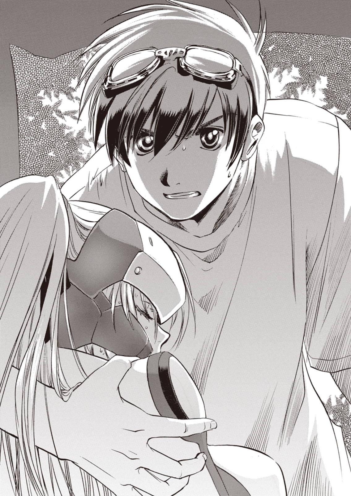
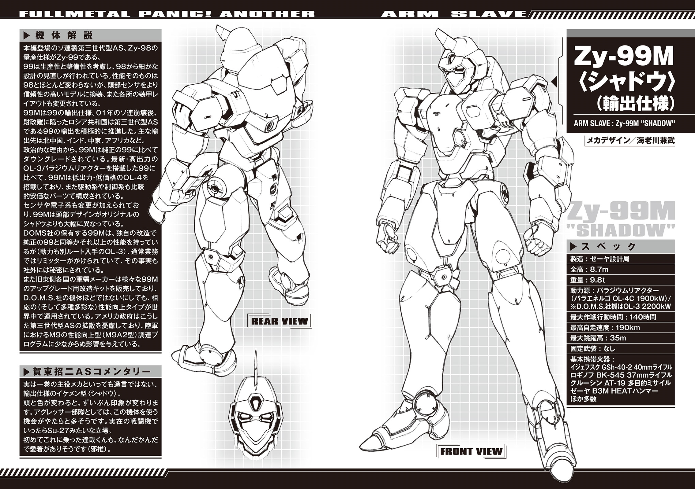
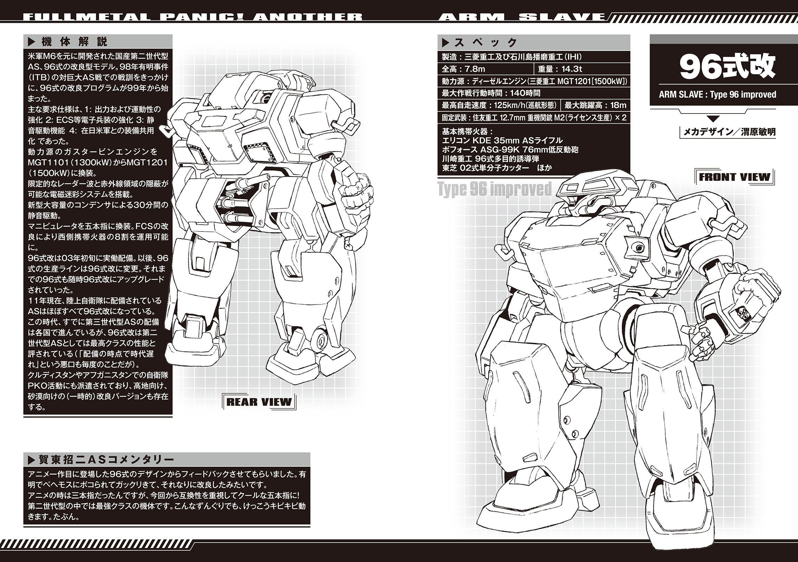
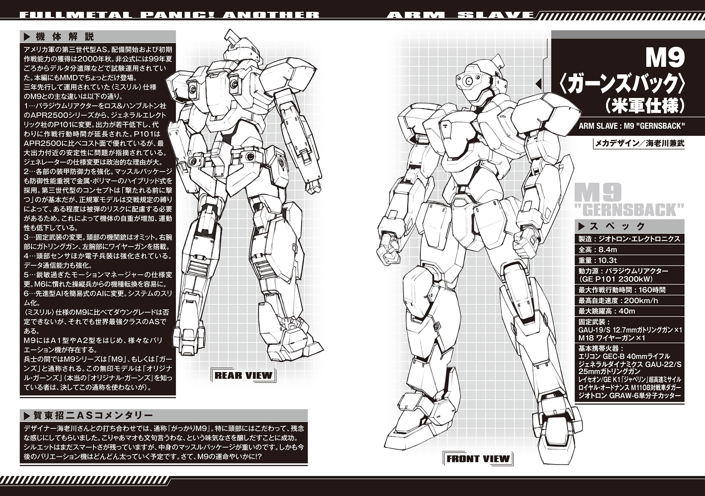

| フルメタル・パニック！アナザー1 | |
| 原案・監修：賀東招二 著者：大黒尚人 | |

フルメタル・パニック！ アナザー１
原案・監修：賀東招二
著者：大黒尚人

富士見ファンタジア文庫
本作品の全部または一部を無断で複製、転載、配信、送信したり、ホームページ上に転載することを禁止します。また、本作品の内容を無断で改変、改ざん等を行うことも禁止します。
本作品購入時にご承諾いただいた規約により、有償・無償にかかわらず本作品を第三者に譲渡することはできません。
本作品を示すサムネイルなどのイメージ画像は、再ダウンロード時に予告なく変更される場合があります。
本作品は縦書きでレイアウトされています。
また、ご覧になるリーディングシステムにより、表示の差が認められることがあります。
口絵・本文イラスト 四季童子
メカデザイン 海老川兼武
渭原敏明
第一話 巨人たちの日
１
「本当によくがんばったわね、イチノセくん」
夕暮れの教室で、柔らかな声が俺の耳をなでた。
教卓に腰かけているのは、アメリカから来た英語教師のケイト・オブライエン先生。肩で切りそろえられた赤毛が、夕日に染まっている。そばかすがわずかに残るチャーミングな顔には、俺が初めて見る蠱惑的な笑みが浮かんでいた。
「まさか、本当にあなたがＴＯＥＩＣで九〇〇点を取るなんて」
「せ、先生のご指導のおかげです」
「ううん、あなた自身の努力よ」
ゆっくりとした仕草で、ケイト先生は足を組み替える。一瞬だけ露わになる、タイトスカートの奥に秘められた聖域。第一ボタンが外されたブラウスからは、深い胸の谷間がのぞいている。
「先生、その──」
思わずツバを飲みこみかけ、あわててこらえる。ここで焦ったり、がっついたりしたらダメだ。クールに、そう、クールに──
「──約束、忘れてませんヨネ？」
ちくしょう、声が上ずっちまう！
「もちろんよ。こっちに来て、イチノセくん──いいえ、タツヤ」
落ち着き払った態度で、俺の名を呼ぶ先生。ああもうダメだ、足が勝手に動いてしまう。まるで明かりに惹かれる羽虫じゃねぇか。
「じゃあ始めましょうか、大人の課外授業を」
白く細い指が伸ばされ、俺の胸を軽くなでた。ただそれだけで、ピンクのスパークが俺の腰骨から脊髄を縦貫して、大脳を直撃する！
せ、先生！ ち、乳首は反則だろ!!
「うおっほう!?」
も、もうがまんできない！ 先生の両肩をつかみ、教卓に押し倒す！
「だ、だめよタツヤ。そんな乱暴な──」
形だけは抵抗しながらも、俺を受け入れてくれる先生。クラスのみんな、すまん！ 俺一人で先に大人の階段を昇るぜ！
その瞬間、あやうい平衡を保っていた教卓がひっくり返った。
「うお!?」
「きゃあっ！」
俺と先生は、そのまま床に投げ出され──
夢のような出来事は、夢でしかなかった。
「あれ？」
市之瀬達哉は、ポツリとつぶやくと目を開いた。それなりに整っている顔に間の抜けた表情を浮かべ、教室の天井を見上げる。
「ケイト、先生？」
人気のない教室に響く声。そこでようやく達哉は、自分が教室の床で大の字に寝転がっていることに気づいた。周囲には、ひっくり返った机や椅子が散乱している。
グダグダになっていた脳が、ようやく再起動した。夏休み前の進路面談。放課後に無人の教室で自分の順番を待っているうち、つい眠気が込み上げてきて......
「夢かよ......」
気の抜けた声でつぶやき──達哉は慌てて下半身の具合を確かめた。幸いにも粗相の痕はなく、額の冷や汗をぬぐう。
「た、助かった」
「何をやってんだ、お前は？」
「うお!?」
不意の声に、達哉はギョッと振り向く。教室の入り口に、担任教師がうんざりした表情で立っていた。
「オ、オノＤ!?」
「オノＤ呼ぶなと言ってるだろーが」
小野寺孝太郎。二〇代後半の地理教師で、この都立陣代高校のＯＢでもある。生徒たちからは、オノＤのあだ名で親しまれて（？）いた。
「ど、どこから見てたんっすかオノＤ──じゃなかった小野寺先生？」
「お前が『ケイト先生』を連呼しながら、スタイリッシュな寝相をかましてたあたり」
「スタイリッシュな寝相って何だよ......？」
「無駄に決まってたぞ、色々とな」
よっこいしょとひっくり返った机と椅子を直し、小野寺は腰を下ろす。どうやら、このまま教室で面談を始めるつもりのようだ。
達哉も、しぶしぶとそれにならう。
「ったく、あまり遅いんで探しに来てみりゃこのザマか。市之瀬、何やってんだお前は？」
「そのまま、ほっといてくれればよかったのに」
「おいおい。もう少し、三年生の自覚ってものを持とうぜ」
「別にいいですよ、進路なんて。どうせ卒業したら俺、親父の会社に就職するつもりなんですから」
机の背もたれにだらしなく寄りかかり、そっぽを向く達哉。教え子のすねたような様子に、小野寺はヤレヤレと苦笑する。
「就職と言ってもな、この成績は正直もったいないだろーが」
取り出したのは、達哉の成績表。
記載された数字の大半が、赤点と平均点の中間をさまよっている中、英語だけがぶっちぎりの満点だった。
「美人の女教師から『ＴＯＥＩＣで九〇〇点以上を取ったら、デートしてあげる』と言われて、本当に取っちまったヤツは初めて見たぞ、俺。......こら、そんな顔をするな。俺はマジで感心してんだから」
「もうそれに、意味なんてないです。血のションベン出るまで猛勉強したのに、デートすっぽかされた挙げ句、結婚するから帰国とか」
『あなたみたいな熱心な生徒は初めてだったわ、イチノセくん。カリフォルニアに帰っても、あなたのことは絶対に忘れないから』
先月、別れ際のケイト先生が浮かべた極上の笑顔を思い出し、達哉はギリギリと歯ぎしりする。
「三度目の初恋だったってのに、くそっ......」
「それを初恋とは言わんだろ」
「俺はもう、ガイジンの女なんぞ、二度と信じねえからな」
「その手の苦労話は、どの国の女相手でも変わらねーよ」
妙にしみじみと説教する小野寺。その左薬指で鈍く光る銀の指輪を見やりながら、達哉は身を起こした。
「妻子持ちに言われても、説得力ないですけど」
「バカ野郎、女房子供がいるから味わう苦労ってやつがあんだよ」
遠い目でため息をついた小野寺だが、気を取り直したように話を続ける。
「とりあえず、今の進路希望は就職ってことでいいんだな、市之瀬」
「だから何度もそう言ってるでしょ」
「お前のこの成績でも狙えそうな大学、いくつかあるんだがなぁ。もし気が変わったんなら、いつでも相談してくれ」
「考えときますよ、先生。それじゃあ失礼します」
達哉は立ち上がると、気のない声でひどくおざなりな礼をする。その姿に小野寺は、軽く肩をすくめた。
達哉の通う都立陣代高校から自宅まで、自転車でおよそ三〇分ほどかかる。
そろそろ日が暮れ始めた、土手沿いの道。多摩川から吹く風は涼しく、カエルや虫の鳴き声が聞こえてくる。
行き先に、『市之瀬建設』という古ぼけた看板が見えてきた。
「おや？」
会社の敷地に入ったところで、達哉は首を傾げた。
裏手の土場に置きっぱなしにされている、いくつかの重機。そのうち一つの周囲に会社の従業員が集まって、何やらガヤガヤと騒いでいたのだ。
自転車から下りた達哉は、顔ぶれを確かめる。ざっと数えて一一人、社のほぼ全員だった。
「どうしたんだよ、源さん？」
「なんだ、ボンか」
中年の古株社員に、達哉は声をかける。すると相手は、あからさまに顔をしかめた。
「見れば分かるだろ。新入りの坂口が、ヘマしちまってな」
かたわらのモノを見上げながら、源さんこと源田孝主任は言った。それにつられて達哉も、視線を向ける。
「ああ、なるほど」
納得し、うなずく達哉。
二人が見ているのは、うずくまる大きな人型の影だった。
黄色い塗装はところどころで剥げており、その下から赤黒く錆びついた地金がのぞいている。くたびれた、ずんぐりとした姿には、まるで古ぼけたぬいぐるみのような、愛嬌と哀愁があった。
パワー・スレイブ、通称ＰＳ。ここ一〇年ほどでじわじわと普及しつつある、二足歩行の人型重機だ。
軍用の人型兵器であるＡＳの技術を応用しているが、全高は六メートルほどと、一回り小さいサイズになっている。
また、動力はディーゼルエンジン、駆動系も総油圧式と、性能はＡＳに遠くおよばない。
「昨日の雨で地盤が緩んでいてなあ。それに気づかんで、思いっきり踏み抜いちまってこのザマだ」
「あーあ、やっちまったなぁ」
そのＰＳの右脚は、大腿部の半ばまでずっぽりと泥土にはまり込んでいた。これでは、自力での脱出は相当に困難だろう。
「すいません、俺のせいで」
源田主任から相当にきつく搾られたのだろう。まだ若い新人操縦者の坂口始は、青い顔をしていた。
「もう一台はちっと離れた現場に置きっぱなしだし、どうやって戻すか段取りつけてるとこなんだがなぁ」
「ほー、そいつは一大事だな」
言葉とは裏腹に、頬をほころばせる達哉。
「言っておくが、ボンの手を借りるつもりはないぞ」
「えー、最近こいつら転がしてないし」
「あのな、ボン。何度も言うけど、こいつはボンのオモチャじゃないんだぞ」
「分かってるって」
ちっとも分かってなさそうな顔で、答える達哉。
「でもよ源さん、早くしないと日が暮れちまうぜ？」
「それは──」
痛いところを突かれ、源田の顔がひきつる。
「もう一台を今から取りに行っても、作業が始まる頃には真っ暗だよな。俺なら、この場で何とかできるぞ」
「しかしだなボン、まだ二足重機の免許は届いてないんだろ？ せっかく教習受けたんだ、この大事な時期に......」
「なーに、ほんのちょっと前倒しするだけだって」
しれっと言い切る達哉の言葉に、源田は重い重いため息をつく。
「背に腹は、かえられんか」
「おお、やらせてくれるのか、源さん」
「今回限りだからな」
念を押す源田の声も聞こえない。にやけ顔でＰＳを見上げる達哉。
「キーは？」
「差しっぱなしにしてある。本当にやるんだな、ボン」
「当然。大船に乗った気でいてくれ」
「泥船の間違いじゃなきゃいいがな」
源田の皮肉を無視し、達哉は肩に担いでいたスポーツバッグを地面に置く。そのまま、軽く屈伸。
「これ使ってくれ」
「サンクス」
達哉は、源田から作業用のゴーグルと革手袋を受け取ると、ＰＳに取り付く。そのまま猿のような身軽さで、スルスルと機体をよじ上っていった。
「主任、達哉くんてＰＳの免許、まだ届いてないんですよね。それなのに、大丈夫なんですか？」
「いいから黙って見てろ、新入り」
おどおどと尋ねる坂口を、ギロリとにらみ返す源田。そんなやり取りを尻目に、達哉は運転席に上りついた。
市之瀬建設で使っているＰＳは、国産の〈ダイダラ〉という機種だ。国内シェアの六割以上を占めており、『油圧ショベル』や『トラック搭載クレーン』のように、ＰＳの代名詞となっている。
「さてと」
運転席に潜り込んだ達哉は、中腰の姿勢で体をシートに固定。〈ダイダラ〉の全身の関節がロックされていることを確認し、イグニッションキーを回した。腹に響く音を立ててディーゼルエンジンに火が点り、機体が小刻みに震え出す。
運転席前面のガラス窓に、大きなヒビが入っていた。軽く顔をしかめ、計器類を確認する。エンジン、油圧系、共によし。
「動かす分には問題ないってことか」
小さくつぶやく達哉。続いて、ところどころ隙間が空いた筒状の部品へと、両手両足を突っこんだ。先端のスティックを握り、ペダルに足をかけると、筒が絞られて手足が軽く締め付けられる。
スティックのボタンを押しこみ、関節のロックを解除。これで〈ダイダラ〉は、オペレータである達哉の動作を読み取り、拡大して再現することになる。
『セミ・マスタースレイブ・システム』と呼ばれるこの操縦法は、ＡＳの技術が転用された物だ。
今、達哉の乗る〈ダイダラ〉は、右脚が泥土にはまり、残った左脚で辛うじて機体を支えている状態だ。もしこのまま転倒すれば、ちょうど機体の後方にある小さな倉庫を、押し潰してしまうだろう。
「ちょっと左脚を踏みこんでみるから、様子を見ててくれ」
「おお、くれぐれも慎重にな」
手信号を交えながら、下の源田と連絡を取り合う。まずは試しに、左脚をそろそろと動かしてみる。
ぐらりと揺れる機体に、一瞬だけ肝を冷やす達哉。だがすぐに、しっかりとした感触が返ってきた。
「大丈夫だ、ボン。こっちの地盤はしっかりしてる」
「ＯＫ」
とりあえず足場は確保できた。だがこの傾いた体勢から、力ずくで無理に右脚を引き抜こうとすれば、機体はたやすく平衡を失って転倒するだろう。
今この場合、大切なのは脚の力ではなく、腰のバランスなのだ。
「さてと」
唇を一舐めし、達哉は慎重に機体を操作する。
腰を支点、両脚部を振り子に見立て、機体全体を使いながら、重心をゆっくりと移動させていった。
全身を震わせながら、〈ダイダラ〉が身を起こしていく。その動きに連られ、少しずつ、だが確実に、右脚がはまり込んだ泥から引き抜かれていく。
「これで仕上げ、と」
最後の一踏ん張りで、ようやく右脚が泥土から抜けて自由になった。泥まみれの足で地面を踏みしめる。
周囲の作業員から、歓声が上がった。
「ま、ざっとこんなもんよ」
鼻の頭をこすりながら、達哉は片頬で笑う。
「大したもんですね、達哉くん。免許持ってる俺なんかより、ずっと巧い」
感心を通り越して、むしろ呆れたようにつぶやく坂口。隣の源田が、やれやれと言わんばかりにうなずく。
「ボンはな、あのオンボロを、ピカピカの新品だったころからいじくってるんだ。年季ってものが違うんだよ。無免でも〈ダイダラ〉の腕じゃ、ウチの会社で一番だ」
「アレが新品のうち？ 一体、何年前の話ですか？」
「まだボンが、ランドセル背負ってた時分だ。一度、〈ダイダラ〉ごと川にはまって死にかけたことがあるってのに、まったくこりとらんのだからな」
過去を振り返る源田の眼前で、しゃがみこんだ〈ダイダラ〉から、達哉が降りてきた。まるで子供のように、そっくりかえって胸を張っている。
「どうよ、源さん？」
「助かったよ。後はこちらで片づけとく」
「了解。で──」
達哉はわざとらしく顔をしかめると、周囲をきょろきょろ見回す。
「この大騒ぎに、親父は何をやってるんだ」
その仕草に、源田はわずかに顔をしかめた。
「社長なら事務所だよ、ボン。銀行から人が来てて、さっきから話しこんでる」
「マジかよ」
思わず舌打ちした達哉は、軽く天を仰いだ。
会社敷地の南に建っている、住居兼用の社屋。達哉がその脇のガレージに自転車を止めると、ちょうど玄関が開いた。
「では失礼しますよ、市之瀬社長」
出てきたのは、まだ若い銀行員だった。達哉の父の俊之も、作業服にネクタイ姿で見送りにきている。
「あ、あの──つ、追加融資の件ですがね。どうかよろしくお願いします、神田さん」
「一応、支店長には稟議書を出しておきますがね。約束はできかねますね」
銀行員の神田は、ひどく冷たい目で社屋を見やる。
「うちの他にも、色々と借金があるそうじゃないですか。いっそのこと、今のうちに会社をたたんだ方が、傷が小さくすみませんかね？」
「そ、そこを何とか」
白髪交じりのゴマ塩頭を米つきバッタのように上下させる俊之。無精髭だらけの赤ら顔には、脂汗がにじんでいた。
（この野郎）
尊大な態度の銀行員と、ひたすら頭を下げ続ける父親。はたから見ているだけでも、達哉はムカッ腹が立ってきた。さすがにそこで突っかかるほど、子供ではないが。
表情を消して小さく頭を下げる。そんな達哉を神田はチラリとだけ見やると、車で会社を去って行った。
「くそ！ 親父、塩まいとこうぜ塩」
「勝手にやってろ」
本当に玄関口から縁起物の塩の壺を取り出し、達哉はあたりにまき始める。と、そこで土場の源田がこちらに気づいた。
「社長、話は終わったのかい？」
「ああ。すまねえな源の字、任せっぱなしにしちまって」
大股で、源田たち作業員の方に歩き出した俊之が、ふと達哉を振り返る。
「俺は今日までの書類がまだ残ってるんで、上がるのがちいとばかり遅くなりそうだ。由加里にも、そう伝えといてくれ」
「あいよ」
「ただいま」
社屋の裏手にある、家族用の玄関。達哉は帰りの挨拶をしながら廊下に上がり、とりあえず奥の台所を目指す。
「お帰りー、お兄ちゃん」
突き当たりの扉を開くと、明るい少女の声が出迎えた。
二つに束ねた、セミロングの黒髪。達哉と同じ陣代高校の制服の上に、エプロンを着けている。市之瀬由加里、達哉の二つ下の妹だ。
「お・に・い・ちゃ・ん。ご飯にする？ お風呂にする？」
愛らしい顔に浮かぶ、イタズラっぽい笑顔。台所に、甘酸っぱい匂いが立ちこめる。
「それともあ・た・し？」
「近ごろ見ないな、その手のコント。一仕事すませたんで、とりあえず風呂なー」

あっさりスルーした達哉は、棚のリンゴに手を伸ばした。その手を、由加里はぴしゃりとはたく。
「いってぇな、何すんだよ？」
「お兄ちゃん、帰ったばかりでしょ。まず手洗い！」
ややタレ気味の大きな両目をキッと吊り上げ、達哉を叱りつける由加里。
「な、何だってんだよいきなり」
由加里からじろりとにらまれ、達哉はぼやきながら流しに向かう。
母の志保が亡くなってから早五年。市之瀬家の家事を一手に引き受けている妹には、どうも頭が上がらないのだ。
いそいそと手を洗う達哉。その隣で由加里は、手早くアジを三枚におろしていた。
「またアジかよ。今月に入ってこれで四度目だぞ」
「塩焼きにお刺身にお煮付けだったでしょ？ 今日はフライだから」
「それでもアジはアジだろ──」
「じゃあ、お兄ちゃんにだけ特別、イワシの頭でも焼いてあげる」
「今朝の残飯!?」
叫ぶ達哉を、由加里はまたしてもじろりとにらんだ。
「何か文句ある？」
「楽しみだな、アジフライ！」
触らぬ神に祟りなし。達哉は今度こそリンゴを手に取ると、シャリシャリかじりながら台所から脱出する。
「それとな、親父が今晩はちょっと遅くなるってよ」
その伝言を残し、達哉は足早に立ち去る。
一人取り残された由加里は、すべすべした頬をぷっくりふくらませた。
言葉通り、父の俊之が事務所から戻ってきたのが遅かったため、その日の夕食が始まったのはもう八時近かった。
「すまねえな、遅くなっちまって。先に食べててもよかったんだぞ」
畳敷きの居間。こぢんまりとしたテーブルの前であぐらをかいた俊之は、ゴマ塩頭をボリボリとかく。
「別にいいよ。仕事中のお父さんをほっといて、ご飯にするのもアレだし。ね、お兄ちゃん」
「俺はとっとと食っちまいたかったんだが」
「......この野郎」
じろりと達哉をにらんだ俊之は、手酌でビールを飲み始める。達哉も、皿のアジフライにソースをドボドボかけた。
「それで達哉、どうだったんだよ？」
「どうって、何がだ親父」
「今日、進路面談があったんだろうが。どうだ、お前のおつむでも潜り込めそうな学校はあったのか？」
「あ、そうだったんだ。どうだったの、お兄ちゃん」
「ああ進路、進路ね──」
フライと千切りのキャベツを、まとめて口に放り込む達哉。カラッと揚がった衣の歯触りは、中々のものだった。
「うん、旨いな」
「そ、そう？ お代わりはたくさんあるから、どんどん食べてね──ってお兄ちゃん、話ごまかそうとしてない？」
妹から問い詰めるようにじろりとにらまれ、達哉は露骨に視線をそらす。
「別に、オノＤとは大した話はしてねえよ。ウチの会社に就職するつもりだって言っといたし」
その言葉で、部屋の空気が変わった。
俊之はビールのコップを、叩きつけるような勢いでテーブルに置く。
「達哉、俺そんな話、聞いとらんぞ」
「そりゃ言ってねえからな。感謝しろよ、親父。わざわざ、こんな潰れかけの会社に入ってやろうってんだから」
「ちょっとお兄ちゃ──」
「バカ野郎!!」
由加里の上げかけた非難の言葉を、俊之の怒鳴り声がかき消した。
「『感謝しろ』に『潰れかけ』だあ？ ガキが生意気な口、叩きやがって」
「お、お父さん、もう少し、落ち着いて......」
「ちっとばかし〈ダイダラ〉転がせるからって、いい気になってんじゃねえぞ、達哉。んな半端な気持ちで現場に顔出されても迷惑なんだよ。ガキは大人しく学校に行ってろ」
「は、今日もそのガキに頼っといて、よく言うぜ」
売り言葉に買い言葉。二人は互いにヒートアップしていく。
「お前だって見たろうが。俺が今日、銀行屋のガキ相手に、下げたくもない頭を下げてるのをよ」
「何が言いたいんだ？」
「学がないばかりに、ああいう目にあうんだ。だからお前たちは、ちゃんと大学に行ってだな──」
「学歴なんぞなくっても、親父みたいな無様を晒したりしねぇよ!!」
夕方のやり取りを思い出し、達哉は吐き捨てる。
「──てめえっ!!」
額に青筋を立て、立ち上がる俊之。達哉も無言のまま、それに続いた。
「表に出ろ、バカ息子」
「上等だ、クソ親父」
ダン！
不意に響き渡る鈍い音。達哉も俊之も、ギョッと振り返る。
今まで無言だった由加里が、テーブルを思いっきり平手で打ったのだ。
「ゆ、由加里？」
鳩が豆鉄砲を食ったような顔をした父と兄を、由加里は思いっきりにらみつける。
「二人とも、ご飯は静かに食べて」
「いや、でも」
「早く座る!!」
ドスの利いた、貫禄さえ備えた一喝。達哉も俊之も、大人しく座りこむ。
「段々、死んだ志保に似てきたな......」
「マジで怖い......」
「......何か言った？」
由加里の怒りに、押し黙る二人。古ぼけたテレビから、キャスターが読み上げるニュースが、白々と流れていた。
『──陸上自衛隊が今年度の訓練から海外のＰＭＣ、いわゆる民間軍事会社を導入する件について、主民党の木原代表は本日午後の会見で、憲法違反のおそれがあるとの見解を改めて示しました。
一方、鷹乃防衛大臣は──』
２
ガスタービンとプロペラの唸りが、生暖かい夜気を切り裂く。四発のターボプロップエンジンを震わせながら、二機の輸送機が滑走路へのアプローチに入った。
北関東のとある陸上自衛隊駐屯地、その付属飛行場。高機動車の助手席に座る下村悟一等陸佐は、輸送機の巨影を見上げながら横目で時計を確認する。二〇三〇、ほぼ予定通りの時間だった。
「傭兵屋さんたち、少なくとも時間には正確のようですな」
運転席の佐野健司一等陸尉が、ポツリとつぶやく。
「傭兵ではない。彼らはあくまでも、ＰＭＣの社員だ。言葉は正確に使いたまえ、佐野一尉」
たしなめる下村一佐の声も、似たり寄ったりの調子だった。それを聞き取ったのか、佐野は言葉を続ける。
「そうは言いますがね。どうせちょっと看板を掛け替えただけで、大して変わらん連中でしょう？」
ＰＭＣ──民間軍事会社（Ｐｒｉｖａｔｅ Ｍｉｌｉｔａｒｙ Ｃｏｍｐａｎｙ）とは読んで字のごとく、軍事的な業務を顧客に提供する、様々な民間企業の総称だ。
二一世紀初頭に起きた、ソビエト連邦の崩壊と冷戦の終結から、およそ一〇年あまりの時が経つ。世界各地で地域紛争や非対称戦が頻発する中、ＰＭＣという新たな軍事組織は、急速にその規模を拡大していった。
現在、ＰＭＣの活動は、直接的な戦力の提供に留まらない。正規軍に対する、教育および助言といったコンサルティング。補給物資の輸送や施設設営のような、後方支援活動。そういった、様々な分野に食い込んでいる。
日本の自衛隊も、その国際的な流れの中で重い腰を上げる。組織改革の一環として、今年度から訓練のために、海外のＰＭＣと契約をかわしたのだ。
今、この飛行場に着陸しつつある二機の輸送機に、その第一陣の部隊が乗っている。
「大体、連中も元々は、国民の税金で訓練を受けたんでしょう？ そこからドロップアウトして自分の腕を切り売りするような手合い、自分は気に入りません」
「君たちのような、我が国のＡＳオペレータの技量には、もちろん全幅の信頼を置いているよ」
感情を抑えた平板な声で、下村は言った。
ＰＭＣの導入という新方針に、反発する自衛官は少なくない。他ならぬ下村自身も、その一人だった。
だが組織において、地位の上昇と発言の自由度は、おおむね反比例の関係にある。何の因果か、そのＰＭＣとの連絡役を命じられたからには、なおさらだ。
「さて、そろそろお客さんを出迎えねばな」
「失言でした、申し訳ありません」
意図を悟った佐野は、それ以上は余計な口を開かずに車を出す。高機動車の進路には、ようやく着陸した輸送機の姿があった。
下村と佐野が高機動車から降りた時、ちょうど輸送機側面の乗降ハッチが開いたところだった。内蔵されていた折りたたみ式のハシゴを伝って、二人の男が機敏な動作で降りてくる。
二メートル近い巨漢の黒人と、眼鏡をかけた酷薄なほどに端整な顔立ちの白人。下村たちに気づいた二人は、素早く背筋を伸ばすと英語で挨拶する。
「Ｄ．Ｏ．Ｍ．Ｓ．ＡＳ教導課第三班班長、ダグラス・バクスターです」
「同社戦術分析課の、ベルナール・ベルトランです」
まるで分度器で測ったような、三〇度の礼だった。青い制服にはシワ一つなく、少なくともその外見は、『無頼の傭兵どもの集団』にはとうてい見えない。
「陸上幕僚監部の下村悟一等陸佐です。みなさんを歓迎します」
「第一機装連隊第三中隊長の、佐野健司一等陸尉です」
一瞬だけ気圧された下村と佐野だが、素早く答礼を返した。バクスターと名乗った黒人は、ニヤリと笑うと右手を差し出す。
「よろしくお願いします、シモムラ大佐。双方にとって、よいビジネスとなることを期待します」
見事なスキンヘッドと、石像のように厳つい強面の顔立ち。だが大きな黒いドングリ眼が、その印象を和らげていた。
「こちらこそ。しかし『ビジネス』ですか。使い慣れない言葉だ」
苦笑した下村は、差し出されたグローブのような大きな手を、しっかりと握り返す。とはいえ『ビジネス』という言葉の発音にもユーモアの響きがあり、不思議と不快感は受けなかった。
「さっそくですが、持参した機材の搬入を行いたいのですが」
フレームレスの眼鏡を光らせながら、横合いから言葉を挟むベルトラン。こちらはバクスターとは対照的に、モデルか役者がつとまりそうな痩身長軀の優男だった。一見、傭兵どころか兵士にさえ見えない。
だが、鋭い目つきと、こめかみに刻まれた銃創が、静かに凄味を放っている。
「この駐屯地の第三格納庫を空けています。好きに使って構いませんよ」
「承知しました」
バクスターは通信機を手に取り、何事かを命じる。すると直ぐに、一機目の輸送機の後部ハッチが、軋みながら開いた。油圧ウインチが作動し、荷台が滑走路に下ろされる。
重い地響きが、夜気を震わした。荷台の積み荷が固定を解かれ、自身の脚で滑走路に降り立ち、その背筋を伸ばす。
「これが──」
かたわらの佐野が、思わず呻く。星空の下に姿を現したのは、八メートル近い巨大な人型──第三世代型のＡＳだった。
菱形の頭部で、三つのセンサが明滅。角状のアンテナが、微かに震えた。異形の鬼面に見下ろされ、下村は小さくツバを飲む。
米軍のＭ９〈ガーンズバック〉や、自衛隊の九六式改といった西側製ＡＳとは、明らかに異なった設計思想で造られたことが見て取れた。
「いかがですかな。これが今回、用意させて頂いた我が社の機体──」
二人の反応を見たバクスターが、満足そうにうなずいた。そのまま芝居がかった、大仰な身振りで両腕を開く。
「Zy─99Ｍ〈シャドウ〉です」
Ｄ．Ｏ．Ｍ．Ｓ．──保有した各国製の多種多様なＡＳを用い、世界各地で訓練・演習の仮想敵役を請け負う、異色のＰＭＣ。
「今回は二機を用意しました。まぁ、見てください」
「あ、ああ」
バクスターにうながされ、下村と佐野はもう一機の輸送機の後方に回りこむ。開かれたハッチから、広々としたカーゴが見て取れた。
バクスターの言葉通り、カーゴにはもう一機〈シャドウ〉の姿があった。共に両手両膝をついた駐機姿勢を取っており、厳重に荷台へと固定されている。
「うん？」
〈シャドウ〉の周囲では、幾人もの作業員が忙しく立ち働いている。その一人に、下村の目が留まった。
遠目にも、金色のポニーテールが踊っているのが見える。どうやら女性のようだ。それも、相当に若い。いや、若いというよりもむしろ──
「まだ、子供じゃないか」
佐野が、唖然とした声で小さくつぶやく。そのＰＭＣ社員は、どう目を凝らしても、まだ十代の少女にしか見えなかったのだ。
「降ろすぞリーナ」
「了解した」
作業員の声に少女はうなずくと、素早く〈シャドウ〉のコクピットに乗りこむ。
「バ、バクスター班長、もしかして、彼女も？」
「ああ、やはり気になりますか」
困ったように苦笑するバクスター。
「アデリーナ・アレクサンドロヴナ・ケレンスカヤ、うちの班の一員です。確かにまだ若いですが、優秀なＡＳオペレータですよ」
「は、はあ。ずいぶんとお若いようですな」
取りつくろうようなバクスターの言葉に、下村は曖昧に答える。
「本当に大丈夫か、この会社？」
後ろの佐野が、ポツリと日本語でつぶやいた。
３
ジリジリと照りつける夏の太陽、響き渡るセミの鳴き声。
「あっちい......」
〈ダイダラ〉の運転席で、達哉はげんなりとうめく。作業用のゴーグルも、半ばずり落ちかけていた。
昨日までの豪雨がウソのような、絶好調の真夏日。体を締め付けるマスター・スーツと、その内側を流れ落ちる汗の感触が、素敵に不快だった。
たまりかねた達哉はスーツの右アームを停止させ、右手を引き抜いて汗をぬぐう。
「くそ、北の山ん中だってのに、この暑さは反則だろ」
『どうした、あれだけ大口叩いといて、もうギブアップかバカ息子』
「そっちこそ、補習サボらせてまで、現場に引っ張ってきやがって」
無線機越しに、心温まる罵声をかわす達哉と俊之。麗しい親子の絆を、周囲の作業員たちは呆れ顔で見守っていた。
北陸の山間を通る、細く狭い国道。市之瀬建設はその国道の拡張工事の一部を請け負い、はるばる東京からやってきたのだ。ＰＳの免許が届いた達哉も、大手を振って参加している。
普及が進んでいるとは言っても、ＰＳを扱える土建会社は、まだそれほど多くない。市之瀬建設にとって、こういった『出稼ぎ』はそれほど珍しくなかった。
「さて、お仕事お仕事」
達哉の乗る〈ダイダラ〉は、国道の谷側で伐採の作業を行っていた。そのため〈ダイダラ〉の右手はチェーンソー、左手は大型のクローに、それぞれ交換されている。
「よいしょっと」
まずは、周囲の安全を確認する。作業員の待避を見届けると、達哉の〈ダイダラ〉は左手のクローで、杉の木をつかんで固定。軽く身をかがめ、根本からチェーンソーで切り取る。まるで草を刈るような、滑らかな動きだった。
こうやって右手のアタッチメントを交換することによって、ＰＳは様々な作業に対応できるのだ。
「うし、一丁上がり」
切り倒した原木から枝を払い、二メートルほどの長さに切り分けて積み上げる。
通常の重機では入れないような急斜面でも、二本脚のＰＳなら作業ができるのだ。まさしく、人型重機の本領を発揮していた。
「おーいボン、そろそろ飯にするぞ！」
崖の上から、源田主任の胴間声が降ってきた。時計を見ると、いつの間にか昼前になっている。
「やっとかよ......」
うめいた達哉は、その時になってようやく、自分が空腹だと気づいた。〈ダイダラ〉を安全な路上まで、慎重に登らせる。
停止させた機体から降りると、ちょうど『市之瀬建設』と社名を記したバンが、現場に来たところだった。停まったバンから、新入りの坂口と妹の由加里が出てくる。
「みんなー、お弁当もってきたよ！」
由加里の声に、作業員たちは歓声をあげる。
長期の仕事のため、会社では現場にほど近い民宿を借りて泊まり込んでいる。そこに、夏休みの由加里もついてきていた。
民宿が小さく洗濯などは自前のため、それを引き受けてくれる由加里の存在は正直、実にありがたい。
「今日のお弁当、お握りだよ」
「お、ありがとうよ」
笑顔で達哉に差し出される、弁当の包み。
道ばたの日陰に腰を下ろしてから開くと、大きな握り飯と卵焼き、それに漬物が入っていた。
「......うん？」
握り飯にかぶりついた達哉が、首を傾げる。中身の具は何かの佃煮のようなのだが、初めて食べる味だったのだ。
「何だろ、この味」
握り飯を見下ろした達哉の顔が引きつった。食い痕からのぞく、仮○ライダーそっくりの小さな顔と目が合ったのだ。
「んぶっ!?」
驚いた弾みに、飯粒がダイレクトで気管に突入。達哉は、激しく咳き込みながら悶絶する。
「だ、大丈夫お兄ちゃん!?」
あわてて由加里が差し出した水筒の麦茶をがぶ飲みし、ぜえぜえと喘ぐ達哉。
「ゆ、由加里......この握り飯──」
「これね」
全く悪びれていない満面の笑顔で、由加里は小振りな胸をそらす。
「民宿の女将さんからイナゴの佃煮を分けてもらったから、お握りにしてみたんだ。おいしいでしょ？」
「いやでも、お前、イナゴは反則だろ？」
「おいしいよね？」
「......オ、オイシイデスヨ、ゆかりサン──」
有無を言わさぬ笑顔の圧力に、あっさり達哉は屈服する。
由加里の料理の腕自体には、何の文句もない。問題は時々、珍奇な食材や調理を工夫する悪癖があることなのだ。
非常に味覚が保守的な達哉としては勘弁して欲しいのだが、悪意は全くないので怒るに怒れない。
覚悟を決めて、イナゴの握り飯へと雄々しく立ち向かう。ふと周囲を見渡すと、他の作業員たちも似たり寄ったりの反応だった。
「どうしたのかなぁ、みんな？」
「さあな」
投げ遣りに答える。
「由加里ちゃん、本当にうまいよこれ。パリッとした食感と甘辛い味付けが、こう、まったりとしたハーモニーを奏でてるし」
新入りの坂口だけが、手放しに誉めていた。その口元で、イナゴの脚がプラプラとブランコしている。
「きっといいお嫁さんになれるね」
「もうやだなあ坂口さんったら」
まんざらでもない様子でクスクス笑う由加里。その反応を見た坂口は、さらに調子よく続ける。
「何なら、俺のみそ汁を毎朝つくってくれないか、なーんてね」
機嫌よさそうにバカ笑いする坂口を、達哉はひどく冷ややかな目で見やると、箸先を向ける。
「坂口さん、どうでもいいけど後ろ」
「へ？」
振り向こうとした坂口だが、後方からガッチリと捕獲される。
「おう、親の目の前で娘を口説くたあ、いい度胸だな新入り。働きは半人前でも、口先だけは一人前ってか？」
「あ、あの社長、これは口説くとかそういうのじゃなくてですね、ただの冗だ──って痛い痛い痛い！」
俊之から強烈なヘッドロックをかけられ、悶絶する坂口。源田たち古株の社員は、またかと無視して昼食を続けていた。
「大体なぁ、由加里は誰にもやらねえよ。『わたしずっとおとうさんのそばにいる』って約束してくれたんだからな」
「いつの話してんだよバカ親父」
さすがに呆れる達哉の隣で、由加里も困ったように笑う。
と、その時だった。
不意に響く、笛の音とエンジン音。顔を上げた達哉は、眉をひそめる。目の前の国道を、幌をかけた大型のトレーラーが通っているのだ。
ただでさえ狭い道路が、工事のためさらに狭まっているため、トレーラーはほぼ道幅ギリギリの状態だ。顔を真っ赤にした警備員が、笛を吹き鳴らしながら懸命に誘導している。
「おいおい、大丈夫かよあれ」
冷や冷やする達哉の前で、トレーラーは何とか現場を通過した。だがほっとする暇もなく、次のトレーラーが姿を現す。
もう一台、さらにもう一台──
「お兄ちゃん、どうしたんだろうね？ こんな狭い道に、あんな大きなトラックって、何の用なんだろ？」
「さあ、昨日まではこんなことなかったんだが」
呆れ顔した兄妹の目前で、最後のトレーラーが通過した直後だった。
ズン、と重い音を立ててトレーラーの車体が傾く。最後のカーブを曲がり切れず、脱輪したのだ。
「やらかしやがった！」
「お兄ちゃん！」
腰を浮かせ、トレーラーに向かって駆け出す達哉。休憩中だった作業員たちも、わらわらと集まってくる。
トレーラーは、左の後輪だけが路肩を踏み外した状態だった。どうやら転落の恐れはないようで、達哉は胸をなでおろす。
と、トレーラーの運転席のドアが開く。
「お？」
運転手の姿に、達哉は驚く。
まだ若い、白人の女性──というよりも、達哉と大して変わらない年頃の少女にしか見えなかった。
タイヤの様子を確かめる白人の少女に、警備員はペコペコと頭を下げている。
「も、申しわけありません。お怪我はありませんでしたか」
『Can I use that powerslave?（あのＰＳは使えるのか？）』
「え？」
不意に英語で話しかけられ、警備員が目を白黒させた。
『Can't you hear? I want to use that powerslave.（聞こえないのか？ あのＰＳを使いたいのだが）』
「ア、アイ キャン ノット スピーク イングリッシュ......」
その様子を見ていた俊之が、あごの無精髭をなでながら達哉を振り向く。
「こいつはいかんな。おい達哉、お前英語できるんだし、ちょっと替わってやれ」
「えー、面倒くせぇよ」
「まあ、そう言わずに。ボンって確か、英検初段だろ？」
「英検に初段なんてねえ！ 大体、俺が取ったのは英検じゃなくてＴＯＥＩＣだ！」
源田のボケに、思わず突っ込む達哉。とはいえ、放っておいても事態は好転しないのは分かっている。
不承不承、達哉は少女に英語で話しかけた。
『事故でパニクってんのは分かるから、もう少し落ち着けって』
その言葉に、少女はむうとうなりながら振り向いた。
『混乱などしていない』
形の良い眉をひそめる少女の姿に、達哉は内心で口笛を吹く。
彫りの深い、凜とした顔立ち。ややくすんだ色合いの金髪は、頭の後ろでポニーテールにまとめている。真っ白な肌には染み一つなく、切れ長の眼はかすかに青味がかった灰色だった。
すらりとした長身に身につけているのは、黒いタンクトップとオリーブグリーンのズボン、編み上げブーツという飾り気のないものだ。だがそれが逆に、少女のシャープな美しさを引き立てている。
（いやまて、こいつだってガイジンの女だ。騙されるな）
内心で葛藤する達哉に向かって、少女はむっつりとした無表情のまま、右手を伸ばす。
『キー』
『......は？』
少女の言葉の意味が分からず、困惑した達哉は後ろを振り向く。だが社長の俊之はおろか、元請け会社の現場監督まで無言でこちらを見守っていた。
どうやら言語的問題から、この場は達哉に一任されたようだ。
『ＰＳのキーを貸せ。私が戻す』
『無茶言うなよ、おい』
少女の要望に突っ込む達哉。
『あんなオンボロでも、ウチの会社の大切な機材なんだ。今から俺がトレーラーを戻してやるから、大人しく見てろ』
『トレーラーの貨物は、高価で貴重なものだ。乱暴にあつかわれ、壊されては困る』
『おい』
少女の、無表情かつ無感情な言動に、達哉の目が細まる。
『つまり、俺の腕が信用できないってんだな、このアマ』
『私はアマではない、プロだ』
『分かりにくいボケかましてんじゃねえよ！ つーかあんた、実は日本語が分かるんじゃねえだろうな!?』
『？』
髪をガシガシかきむしる達哉の前で、少女は不思議そうに首を傾げた。
『で、やるのかやらないのか、とっとと決めてほしいのだが』
『分かってるって、今から始める──えーと、あんた名前は何て言うんだ？』
『私の名か？ アデリーナだ。アデリーナ・アレクサンドロヴナ・ケレンスカヤ』
『......やけに長ったらしい名前だな』
『そうなのか？ ロシアではそれほど珍しくないのだが』
今までのやり取りを現場監督や俊之たちに説明し、達哉は〈ダイダラ〉に乗る。
立ち上がったＰＳの運転席から見下ろすと、監督がひどいカタカナ英語で、アデリーナと名乗った少女に謝罪をしてた。
「まったく、日本に来るなら日本語くらい勉強しとけっての」
小さくつぶやくと、達哉は〈ダイダラ〉を崖下へと移動させる。
このあたりの地形は、作業の初日で頭に入れてある。あのトレーラーの下には、踏ん張れる足場が十分にあるのだ。
昨日までの豪雨で緩んだ地盤に気をつけ、〈ダイダラ〉の足下を確かめる。問題ない。
「せえの、っと」
機体を安定させ、トレーラーの車体に手をかける。
重量自体は貨物を含めたトレーラーの方が、〈ダイダラ〉よりも上。だが、テコの原理を使って車体を持ち上げ、ごくあっさりと路上に戻す。
『ほう』
見事な手並みに、アデリーナの表情がわずかに動く。
『どうだよ、こんなもんで？』
『確かに、言うだけのことはあるな。間が抜けた顔にしては、悪くない腕だ』
『なぁ、あんたさっきからケンカ売ってるのか？』
『私は誉めたのだが？』
かみ合わない会話に、達哉は段々頭が痛くなってきた。
『分かった分かった、もういいよ』
頭をかかえる達哉。その目がふと、トレーラーの荷台に止まる。
今の作業で幌の一部がまくれ上がり、その下から積み荷がのぞいていた。仰向けの姿勢で固定された、スマートな人型の機械。
「こいつは──」
達哉が見慣れたＰＳとは、よく似ているようで決定的に異なっている。
「ＡＳだと？」
驚いた達哉は、幌を直していたアデリーナに目をやる。
『おいあんた、こいつは一体何なんだよ!?』
『これのことか？ うむ、説明してやろう』
アデリーナは達哉を見上げると、唐突に語り出した。
『Zy─99Ｍ〈シャドウ〉、旧ソ連邦時代に開発された、ロシア製の第三世代ＡＳだ。開発元はゼーヤ設計局。核融合電池の出力は一九〇〇kW、最高自走速度二〇〇km／ｈ、最大作戦行動時間一四〇ｈ──』
ぶっきらぼうな態度はどこへやら。アデリーナは、急に生き生きとした口調で、ペラペラとまくし立てる。
『米軍のＭ９〈ガーンズバック〉に比べてやや劣るスペックだが、それはこのＭ型が輸出仕様のためだ。政治的な理由から、純正の99に比べて性能がダウングレードされているからな。それと〈シャドウ〉というのは西側のコード名で、本来の名称は別に──おっと、話が逸れたようだ』
『最初っから逸れっぱなしだ！ はるかアンドロメダのあたりまで！』
立て板に水といったアデリーナの弁舌を、達哉は辛うじてさえぎった。
『俺が聞いたのは、何でこんなモノがここにあるのかってことだ！ 機体の解説なんぞいらねえよ！』
『そうか、では説明してやろう。我々Ｄ．Ｏ．Ｍ．Ｓ．は、二〇〇一年に設立されたＰＭＣだ。ＡＳを用いたアグレッサー役を、主要な業務としている。米軍、もしくはその同盟国を顧客とすることが多いが、契約によっては旧東側陣営や第三世界でも活動を──』
『すいません、もういいからさっさと行ってください。聞いた俺がバカだった』
『......そうか』
再開しようとした説明を止められたアデリーナは、トレーラーの運転席に乗りこむ。小さく肩を落とした姿は、心なしか落胆しているようにも見えた。
（ひょっとして、説明したかったのか？）
内心で呻く達哉。その前でディーゼルのエンジンが、音を立てて始動する。
『面倒をかけた』
最後にようやく礼らしき言葉を口にし、少女傭兵の乗るトレーラーは走り去った。
「変な女」
毒気を抜かれて、達哉はポツリとつぶやいた。
４
『こちらオシラ３、演習開始地点に到着した。現在待機中』
演習場に設けられたベースキャンプの中。通信機からオシラ３──アデリーナの声が響く。
「オシラ１了解。ずいぶんと遅いご到着だな、シンデレラ」
『予期せぬトラブルがあったのだ』
「予期できるトラブルというものがあるなら、お目にかかりたいものだな」
軽く皮肉のジャブでアデリーナに釘を刺すと、バクスターはかたわらの下村一佐を振り向く。
「申しわけありません一佐、部下の不手際をお詫びします」
「予定時刻には、辛うじて間に合ったようだね」
鷹揚に答えた下村が、奥を見やる。そこには演習を統括する、陸上自衛隊第一機装連隊の本部要員の姿があった。
「演習に参加する全機の配置を確認しました」
まだ若い幕僚の報告に、壮年の連隊長は無言でうなずく。
この演習は、第一機装連隊の各部隊を対象に、様々なシチュエーションの模擬戦、という形式で行われている。
今日の想定状況は、山中における遭遇戦だった。すでに陸自の一個ＡＳ小隊と、アデリーナが乗るＤ．Ｏ．Ｍ．Ｓ．の〈シャドウ〉がそれぞれ、演習の開始に備えて山中で待機していた。
「時間だな。状況を開始せよ」
重々しく、演習の開幕を告げる連隊長。
「始まりましたな」
「ああ」
下村は、我知らず制服の襟を直した。
薄暗い山中を、三機のＡＳが進んでいた。腰を低くした前傾姿勢で、木々の上に顔が出ないよう注意しながらひた走る。箱を積み重ねたようなずんぐりした姿をしているが、外見とは裏腹にその動作は機敏だった。
陸上自衛隊の現主力ＡＳ、九六式改だ。
九六式の特徴だった三本指の腕部を国際標準の五本指に替え、動力系とマッスル・パッケージを強化した機体である。
簡易型だが電磁迷彩システムも装備しており、米軍のＭ６Ａ３〈ダーク・ブッシュネル〉と並ぶ、第二世代型ＡＳの最高峰とも評されていた。
「ヤマネ１より各機へ、そろそろ所定のポイントだ。抜かるなよ」
中央を走る隊長機のコクピットで、佐野一尉は命じる。
『ヤマネ２了解！ それにしても一尉──』
無線機越しの妙に弾んだ声に、佐野は軽く顔をしかめる。右手の九六式改に乗る、平一曹の声だった。
「どうした？」
『実に楽しいですな、これは。弾は撃ち放題。しかもお相手は、金髪の女の子ときたものだ』
万事に予算が少ない自衛隊では、訓練や演習であっても、めったに空砲もペイント弾も撃たせてくれない。普通科（歩兵）など、銃を構えた隊員が口で「バンバンバン」と叫んで『射撃』をすませることさえあるのだ。
これは極端な例だが、佐野たち機装科のＡＳオペレータも、実のところそれほど大差ない。
それに比べれば、ここ最近の演習は大違いだった。九六式改が構えたアサルトライフルのマガジンには、訓練用のペイント弾が満載。しかも実施部隊の判断で、好きなだけぶっ放していいとのお墨付きが出ているのだ（無論、万一にでも演習場外への流れ弾が出ないよう、厳重な制限が課されているが）。
これで萌えない──もとい燃えない自衛官など、皆無といってよいだろう。
「演習だぞ、真面目にやれ」
その数少ない例外が、佐野一尉だった。苛立たしげな声で、部下に命じる。
「所定のポイントを通過した。各機散開せよ」
『了解！』
平機が、すぐさま進路を転換すると木々の間に姿を消す。だが左の鹿島二曹の機体は、沈黙を保ったまま佐野機と並走を続けていた。
「どうしたヤマネ３、各機散開だ」
『............』
「聞こえないのかヤマネ３！ 散開しろ!!」
『......了解』
重ねて命じると、ようやく鹿島機も転進した。それを見届けた佐野は、小さく舌打ちする。
「たるんでいるな、全く。こんな有様では、また傭兵屋どもに一本取られかねんぞ」
実際、この演習が始まって以来、Ｄ．Ｏ．Ｍ．Ｓ．は教導隊の名に相応しい実力を、何度も見せつけていた。
教導隊とは、訓練において敵機役を専門に務める、教官部隊のことである。仮想敵国の戦術を、機体の運用から細かい戦法に至るまで忠実に模倣し、訓練生に叩き込むのがその任務だ。
今回の演習で、Ｄ．Ｏ．Ｍ．Ｓ．が模しているのは、ロシア軍ＡＳ部隊の戦闘教義。旧ソ連時代のアフガニスタン紛争以来、多くの実戦で磨かれたその戦術は、自衛隊にとって大きな刺激となっていた。
今日の演習では、佐野が直率する一個小隊三機の九六式改で、Ｄ．Ｏ．Ｍ．Ｓ．の〈シャドウ〉一機を相手にする。一般的に、第三世代型ＡＳと第二世代型ＡＳの戦力比は三対一と見積もられているので、正に指揮官の腕の見せ所だ。
（あんな乙女などに、負けるわけにはいかん）
〈シャドウ〉のオペレータはアデリーナ。前回の演習で佐野の機体は、彼女によって撃破判定されたのだ。
もはや、若すぎる年齢で侮るつもりはない。佐野も、今回は一つの策を用意していた。
「今日こそはリーナたんに、一泡吹かせてやる」
『た......たん、ですか──？』
佐野の決意と気迫を感じ取ったのだろう。平一曹の声は、戦慄に震えていた。
《オシラ１、方位１─３─５に音響反応あり。以後、Ｓ１と呼称》
〈シャドウ〉のコクピットに、ＡＩの無機質な合成音声が鳴り響いた。アデリーナは素早くモニターに視線を走らせる。
南東方向で、影が動いた。敵機発見。木々の間を縫って進む、九六式改の姿が拡大される。
《Ｓ１を光学センサで探知、識別をＭ１に変更。距離一〇〇〇》
「カラマーゾフ、マスターモード２だ」
《了解》
〈シャドウ〉の各種設定が、遠距離での狙撃に適したものへと瞬時に切り替えられる。セミ・マスタースレイブのモードＡ、動力レベル巡航、半自動照準──
旧ソ連軍やロシア軍のＡＳ戦ドクトリンは、実に慎重で手堅い。ＡＳの黎明期にアフガンの山野で、様々な試行錯誤の末に編み出された物なのだ。
アデリーナの想定状況は、単機による遅滞戦闘。ならばこの状況では、狙撃が最も理にかなっている。
Ｍ１に手持ちのライフルを向け──ふとアデリーナは、違和感を覚えた。
（妙だな）
九六式改を捉えたのは、〈シャドウ〉の音声センサだった。機体の立てる、ガスタービンエンジンの轟音を感知したのだ。
（あの機体は、短時間なら大容量コンデンサを用いた無音駆動が可能なはず。この状況で、それを使っていないだと？）
これまでの演習で、自衛隊のＡＳ部隊の水準は概ね把握している。実戦経験は乏しいものの、よく訓練された優秀なオペレータたちだった。
このような、初歩的なミスを犯すとは思えない。
「カラマーゾフ、マスターモード３で一〇時方向を索敵」
その方向が、ひどく臭う。ウラルの山中、単機で〈サベージ〉二機をしとめた時の経験が、警報を発していた。
アデリーナは攻撃を中断、機体のパッシブなセンサのみを総動員し、息をひそめて周囲を探る。
息詰まるような十数秒の後、ＡＩの音声がまたも響く。
《方位３─１─５、および２─７─０に、移動中のＡＳを発見。Ｍ２、Ｍ３と認定》
「やはりいたか」
にこりともせず、アデリーナは小さくうなずく。
そのＡＳは、ＥＣＳと無音駆動を駆使しながら、恐ろしく静かに移動している。残る二機の九六式改に違いない。
（だが、あの動きのパターンからして、こちらの位置を正確に捕捉しているわけではないようだ）
正面の九六式改は囮だ。身を隠しているアデリーナに、発砲なり戦闘機動なりのアクションを取らせる。その隙を二機の伏兵でつくつもりなのだろう。
悪い戦術ではない。だがそれならばもう少し、餌の撒き方を工夫するべきだった。
「カラマーゾフ、マスターモードを２に戻せ」
淡々と言い放つアデリーナ。彼女の〈シャドウ〉は、片膝をついた射撃姿勢でライフルを再び構え直す。
モニターの中央に捉えた、九六式改──Ｍ３の姿。ターゲット・マーカーと主兵装レティクルが重なり合い、赤く明滅する。
距離六〇〇、アデリーナの腕ならば必中の距離だ。
「まずは一つ」
小さくつぶやき、アデリーナは操縦スティックのトリガーを引いた。
山中に響き渡る銃声。周囲の木々から鳥の群れが一斉に飛び立つ。
指揮官である自身を囮にした、捨て身の策。覚悟してたとはいえ、思わず佐野は身を硬くする。だが一向に、予想していた衝撃は訪れない。
『ヤマネ３被弾、撃破と判定』
どういうことか、といぶかしがる間もなかった。通信機の向こうから、非情な宣告が下される。
「よ、読まれただとぉっ!?」
愕然とする佐野。あの少女は自分が囮だとあっさりと見破り、伏兵のヤマネ３──鹿島機から始末に出たのだ。
『あーあ。策を弄して戦力を分散させたら、各個撃破で返り討ちですか......』
「こ、こちらヤマネ１！ ご、合流して態勢を立て直すぞ！ 大至急だ！」
『ヤマネ２、了解！』
だから言わんこっちゃない、といった調子の平機を、佐野は上ずった声で怒鳴りつけた。
「くそ、さすがだなリーナたん」
「......やっぱり、たん──なのですね、一尉」
狙撃でＭ３を仕留めたアデリーナは、間髪入れず次の標的へと向かう。狙いはＭ１、最初に囮となった機体だ。
「マスターモード１」
《了解》
機体の操縦モードが完全なセミ・マスタースレイブ方式に切り替わり、ＧＰＬが戦闘へと跳ね上がる。今や〈シャドウ〉はアデリーナにとって第二の肉体となり、道なき斜面を駆け抜けていた。
緩やかな斜面が、切り立った崖へと変化するポイント。山側から、アデリーナの〈シャドウ〉は襲撃をかける。
味方との合流のために移動していた九六式改は、アデリーナの接近に気づくと即座に転進。構えたライフルを撃ってきた。
訓練用のペイント弾がフルオートで撒き散らされ、周囲の木々がその余波で大きく揺れる。
《被弾は検出されず》
「わかっている」
アデリーナは、あえて撃ち返さない。全身を固定されたコクピットで、リズミカルに両足を動かす。繊細、かつ大胆に──
〈シャドウ〉は、その動きを拡大しつつ忠実に再現。木々の間を縫うように移動しながら、乱数回避を交えて敵弾をかいくぐる。
九六式改の銃弾は、あっという間に尽きた。後方に飛び下がりながら素早くマガジンを交換しようとするが、その動きが止まる。
背後に口を開けた崖を警戒しての動きだったが、その隙を見逃すほどアデリーナは甘くはない。
跳躍。鮮やかな放物線の頂点で、アデリーナの〈シャドウ〉はごく短いフルオート射撃を行う。
放たれた数発のペイント弾は、全てが九六式改の胴部に命中。撃破判定を下された敵機は、機能を停止してうずくまった。
「これで二つ」
着地と同時に、ライフルを構え直したアデリーナ。その銃口が、ようやく現れた最後の敵機を捉える。
チェックメイトを決めようとした、その瞬間だった。
「──っ!?」
アデリーナの背筋を、激しい悪寒が駆け抜ける。
《接近警報。七時、距離〇》
カラマーゾフが警告する直前、アデリーナは両足を踏みこんでいた。操作に従い、〈シャドウ〉は跳躍する。崖っぷちではあまりにも危険な機動だが、彼女自身の直感がそれを要求していた。
ほぼ同時に、横合いから飛び出すＡＳ。最初の狙撃で、アデリーナに『撃破』されたはずの九六式改──鹿島二曹のＭ３だった。
先ほど同様、無音駆動とＥＣＳを併用して、密かに忍び寄っていたのだ。
唸る乱入機のアサルトライフル。フルオート射撃を、寸前で跳躍していた〈シャドウ〉は辛うじて回避した。
バラ撒かれた弾は、ちょうど〈シャドウ〉の陰になっていたＭ２──平一曹の九六式改を巻きこむ。そしてその中の数発が、機体の正面装甲を貫いた。
「なっ──」
被弾したジェネレータが停止。九六式改はオイルをまき散らしながら、糸の切れた操り人形のように崩れ落ちる。
モニターに映し出された信じがたい情景に、アデリーナは叫ぶ。
「実弾!?」
《照準警報》
空中でとっさに〈シャドウ〉の銃口を敵機に向け、アデリーナは愕然とした。このライフルには、ペイント弾しか装填されていない。
（──迂闊な！）
一瞬の自失が隙を生んだ。銃口を振る九六式改。吐き出される弾丸のシャワーが蛇のように鎌首をもたげ、落下中の〈シャドウ〉を襲う。
「っ！」
鋭く手足を振り、姿勢制御。だがかわしきれない。奇妙に引き延ばされた時間の中で、迫る四〇ミリ弾がアデリーナの目に焼き付く。
鳴り響くアラーム──命中！
「くっ!!」
凄まじい衝撃が、〈シャドウ〉のコクピットを襲う。装甲がひしゃげる異音が響き、強烈な灼熱感がアデリーナの右脚を貫いた。
《胸部被弾。マスター・スーツにクラス３の損傷。制御系をサブ回路に切り替え》
ＡＩの合成音声が、奇妙に遠い。
「か......は──」
駆け巡る激痛。コントロールを失った〈シャドウ〉の機体はそのまま落下し、地面に叩きつけられる。
衝撃が、重く大地を揺るがせた。続いて響く、メリメリという鈍い音。ぼやけた視界が、急速に傾いていく。
（まさか）
次の瞬間、前夜までの豪雨で緩んでいた崖が崩落した。
〈シャドウ〉本来の機動性ならば、簡単に離脱できただろう。だが、傷ついたアデリーナには、それを望むべくもない。
大量の土砂が、無様に倒れ伏した〈シャドウ〉を巻き込み、崖下へと雪崩落ちていく。
底冷えするような、浮遊感と落下感。アラームが鳴り響き、すべての警告灯とディスプレイが狂ったように明滅する。
そして、先ほどに倍する衝撃。
「────！」
〈シャドウ〉の機体は、生き埋めになっていた。すさまじい重量に、フレームと装甲が悲鳴を上げている。
仰向けの姿勢で頭部が露出しているため、モニターの映像は崖を見上げる形になっている。その中央に、ライフルのマガジンを交換する九六式改が映っていた。
（まずい）
アデリーナは、スティックを握る両手に力をこめる。土砂から這い出そうともがく〈シャドウ〉。だが規格外の負荷に捕らわれたその動きは、ひどく緩慢だった。
〈シャドウ〉のような第三世代型ＡＳは、マッスル・パッケージを用いた完全電気駆動によって、飛躍的な軽量化と高機動性を実現した。だがその反面、油圧システムを搭載していないため、規格外の荷重に弱い面があるのだ。
そのことを知っているのだろうか。無言のまま鹿島の九六式改はライフルを〈シャドウ〉に向け──不意に、その機体が大きく揺れる。
『鹿島！ 貴様、狂ったか！』
ようやく我に返った佐野の九六式改が、鹿島機を殴り飛ばしたのだ。佐野機は両手で、ライフルを棍棒代わりにしっかりと握っている。
『何のつもりだ！ 自分が何をしたのか、分かっているのか!?』
佐野の呼びかけに、だが鹿島はまったく答えない。続く佐野機の打撃を、鹿島機は右に倒れこみながら回避。位置エネルギーを運動エネルギーに変換しつつ、地面を転がって距離を取ると、膝立ちでライフルを構える。
教本通りの、冷静な機動。その銃口は、佐野機を正確に捉えていた。
『鹿島、やめ──』
返答代わりの銃声は、ごく短い時間で止んだ。
ベースキャンプは、蜂の巣をつついたような騒ぎだった。
「ヤマネ３！ 聞こえているのか、鹿島二曹!!」
「練馬に連絡を取れ！ なぜ実弾が持ち出されているのに気づかなかった!?」
「応援はどうなっている!?」
様々な怒号が飛び交い、幹部や隊員が駆け回っている。
「一体どうなっているんだ、カーネル・シモムラ」
「そ、それは現在調査中で」
巨体をにじり寄せながら、バクスターは低い声で下村を問い詰めていた。額の汗をぬぐいながら、下村は答える。
一方のベルトランは、通信科の隊員と何事か話しこんでいた。
「何分、状況がつかめず。まだ、事故の可能性もありますし」
「ほう、事故ね」
肩を震わせたバクスターは、顔の筋肉だけで無理矢理に笑顔をつくった。
「機体が撃破判定をされず、なおかつペイント弾に実包が混入。そういった、不運な偶然が重なったと......ふざけるな!!」
ついに爆発したバクスター。下村の胸倉をつかみ、大きく揺する。
「こっちは、身内をやられているんだ！ この国の弾薬管理は、一体どうなっている!?」
「──そ、それはこちらが聞きたい！」
身をよじってバクスターの剛腕から逃れた下村は、酸素を求めて大きく喘いだ。
「実弾は、厳重に管理されている。現に練馬の駐屯地からも、弾薬が持ち出された形跡はない。こんな事態は、起こるはずがないんだ！」
「よくもまあヌケヌケと。現に──」
「ダグ！ 落ち着いてください！」
一歩を踏み出したバクスターの握りしめた拳を、横合いからベルトランが押さえる。ただでさえ鋭い目つきが、さらに険しくなっていた。
「どうした、ベル!?」
「付近の国道で、民間の建設会社が工事を行っています」
いったん言葉を切ったベルトランが、真っ青になった隊員から地図を受け取る。
「それで!?」
「このままでは後数分で、暴走した九六式改がその現場に到着します！」
５
昼に奇妙なトラブルがあった後は、工事は順調に進んだ。
「おおい、そろそろ片づけの段取りを始めるぞ！」
時刻は四時過ぎ。元請けの監督は所用で早めに引き揚げたため、俊之が大声を張り上げる。
「りょーかい！」
達哉はそれに応えると、〈ダイダラ〉の運転席で大きく伸びをした。
今日も一日よく働いた。さっさと後片づけして宿に戻ろう。さて、今日の晩飯は何だろうか？
──そんなことをとりとめもなく考えていた達哉が、軽く眉をひそめる。
「何だありゃ」
地響きが、だんだんとこちらに近づいてくる。作業員たちも手を止めて、国道の先を見やった。
そして大きなカーブの向こうから、巨大な影がヌッとその姿を現す。
「あれ、自衛隊のＡＳ、だよな？」
突如として現れたＡＳ──九六式改の姿に、驚いた警備員が笛を吹き鳴らしながら誘導灯を大きく振る。
「すいません！ 工事中なもので一時停車願います！」
「いや、そういう問題じゃねぇだろ、これは！」
思わず突っ込む達哉。
（ていうか、路上でＡＳが立ち止まるのも『停車』って言うのかね？）
そんなどうでもいいことを考えた達哉の眼前で、九六式改は無造作にライフルを発砲した。
「うわっ!?」
腹に響く轟音に、思わず達哉は首をすくめた。放たれた弾丸は、道ばたで片づけの作業をしていた、もう一機の〈ダイダラ〉を貫く。
「う、うわあっ!?」
もんどり打って転倒した〈ダイダラ〉の運転席から、操縦していた坂口の悲鳴が上がり──すぐに途絶えた。
「......え？」
あまりの非現実的な光景に、〈ダイダラ〉の運転席でポカンと口を開ける達哉。周囲の作業員たちも、似たり寄ったりの有様だった。
「お、おい！ あんた一体、何のつも──」
源田が食ってかかるのとほぼ同時に、再び九六式改のライフルが火を噴く。今度は『市之瀬建設』のロゴが入った大型のバンに命中。
爆発。ガソリンに引火し、古ぼけたバンが吹き飛ぶ。さらに周囲のガスボンベや有機溶剤が巻き込まれ、次々と連鎖的に火を噴いた。
「あ──ああ......？」
続けざまの凄まじい爆炎と轟音。悲鳴を上げ、逃げ惑う作業員たち。
訳が分からない。〈ダイダラ〉の操縦スティックを握る手が、ブルブルと小刻みに震える。
「何だよ、これ......？」
突如として、阿鼻叫喚の地獄絵図と化した工事現場。それをもたらしたのは、ただ一機のＡＳ。赤く明滅するメインセンサと『目が合った』時、達哉の中で何かがキレる。
「や、やめろおぉぉっ!!」
音程の狂った、悲鳴とも絶叫ともつかない声を張り上げながら、達哉は〈ダイダラ〉のペダルを踏みこむ。
鈍重な動きで、九六式改に突っ込む達哉の〈ダイダラ〉。だが組みつく直前に、達哉のＰＳは吹っ飛ばされた。
「がはっ!?」
目の前が真っ白になった。苦痛の声が肺から絞り出される。運転席の窓ガラスが割れ飛び、そのまま〈ダイダラ〉は地面に叩きつけられた。
九六式改が、ライフルのストックで〈ダイダラ〉をあっさりと殴り飛ばしたのだ。
「く、くそっ」
呻く達哉。仰向けに倒れた〈ダイダラ〉を、九六式改は踏みつける。民生用とは桁違いのパワーと重量に、〈ダイダラ〉の機体は完全に押さえこまれてしまった。
九六式改をはねのけようと、〈ダイダラ〉は懸命にもがく。だが、いくらアームを動かしても、どんなにペダルを踏みこんでも、ＡＳの巨体はビクともしない。ＰＳの懸命で非力な抵抗を、無言で見下ろしている。
「エ......ＡＳは......、反則、だろ？」
運転席の達哉に、突きつけられる巨大なライフルの銃口。逃げなければと思っているのに、手も足も痺れたように動かない。
カラカラに干上がった口を半開きにし、達哉はただ呆然と、目の前の確実な死を見つめていた。
「ち、ちくしょう！」
血を吐くような声に、九六式改は何も答えない。長大なライフルが、そんな達哉を嘲笑うように小刻みに震え──
ぐしゃり
──響き渡る異音。突如として横合いから飛来した巨大な刀身が、ライフルの銃身を叩き折ったのだ。
「へ!?」
その刃が飛来した方向、国道の山側を見やって、達哉は呼吸を止めた。
重機で削り取られて土肌が剥き出しになった、切り立った崖。その上にスクッと立つ、スマートな影。
ギリギリで達哉を救ったそれは、昼間に白人の少女が運んでいた、あの海外のＡＳに間違いない。
（まさか）
達哉の中で、ＡＳとあの少女の面影が一つに重なった。
「何て、ことを」
〈シャドウ〉のコクピットで、アデリーナは荒い息をついた。
演習場で崖から転落した後、埋もれた土砂から、辛うじて脱出に成功。暴走した九六式改の追跡に移り、昼間に事故を起こした工事現場でようやく追いついたのだ。
そこで民間のＰＳが襲われているのを発見し、とっさに訓練用のカッターを投げつけたのだが──
（敵機から、ライフルを奪えたのは幸運だったな）
刃のついていない訓練用カッターでも、〈シャドウ〉の腕力で投げればこの程度の威力はある。
「ぐっ」
少しだけ安堵した途端に、激しく右脚が痛む。
不意討ちで九六式改の射撃を受けた時に、コクピットに飛びこんだ弾片によって太ももを貫かれたのだ。
ＡＳのオペレータは、コクピットの内部ではマスター・スーツによって体を固定されている。傷を手当てするためには一度コクピットから出る必要があるのだが、その余裕はなかった。
傷口からは、今でも出血が続いていた。少し気を抜くだけで、意識が飛びそうになる。
（だが、逃がさん）
額にびっしりうかんだ脂汗。アデリーナは、標的の九六式改をにらむ。
一体、オペレータに何があったのかは分からない。だがあの九六式改は、完全に狂っている。
まさか民間人にまで無差別な発砲を行うとは。これではテロリスト──いや、それ以下の通り魔だ。
最悪なことに無線機が故障していて、本隊に連絡を取れない。
（カルロスはフジ、近辺の自衛隊の部隊は歩兵か工兵のみだったはず）
今、あのＡＳを止められるのは自分しかいないのだ。
「カラマーゾフ、リミッター解除だ」
《警告。Ｄ．Ｏ．Ｍ．Ｓ．社内規定第九条の第四項と六項、および第二三条第二項により、機体のリミッター解除は──》
「非常事態だ。現場操縦士としての判断で、必要を認める」
《了解。最終確認、機体のリミッターを解除しますか？》
「やれと言った」
《了解。リミッター解除》
ＡＩの復唱と共に、〈シャドウ〉の機体が小さく身震いする。ＨＵＤの数字が目まぐるしく切り替わり、パラジウム・リアクターの出力が一九〇〇kWから二二〇〇kWに急上昇。
Ｄ．Ｏ．Ｍ．Ｓ．が所有する〈シャドウ〉は、書類上でこそ輸出仕様のＭ型となっている。だがその実、機体には独自のルートでかき集めた純正品のパーツが組み込まれており、性能は本国仕様のZy─99に匹敵するのだ。
普段は機体にリミッターがかけられていて、その事実は周囲に秘匿されている。アデリーナは今、その軛を解き放った。
「いくぞ......」
第三世代型ＡＳ本来の性能を取り戻し、跳躍する〈シャドウ〉。着地の衝撃に備える。右足の爪先にたまった、血の感触が気持ち悪い。無視して低い姿勢で九六式改に突撃。
そのまま九六式改の懐に飛びこむと、コクピットに肘打ちを叩き込んだ。一〇トンの鉄塊と鉄塊がぶつかり合う轟音が、山間に木霊する。
そのまま〈シャドウ〉はのけぞった九六式改の手首をつかみ、流れるような動作で足を払う。ＡＳ式の近接格闘術。
宙を舞った九六式改は、背中から路上に叩きつけられた。陥没したアスファルトが砕け散り、黒々とした地肌がのぞく。
（逃がさない）
投げ飛ばした敵機を押さえこもうとする、アデリーナの〈シャドウ〉。激しくもがく九六式改が、右手を〈シャドウ〉の頭部に向けた。
手首に搭載された固定兵装の重機関銃が、至近距離で唸る。
「しまっ──」
衝撃。
あれにも、実弾が装填されていたのだ。
九六式改の機銃の口径は、一二・七ミリ。人間を一瞬でミンチにする威力があるものの、ＡＳ同士の戦闘では豆鉄砲同然だ。だが──
《頭部被弾、第二センサ損傷》
当たり所が悪かった。センサの一つを破壊され、のけぞる〈シャドウ〉。その下から九六式改は這い出すと、逃走に移る。
「待て──」
すぐさま追おうとするアデリーナ。だが傷つき衰弱した心身は、ごく短い戦闘で限界を迎えていた。
視界が揺れ、手足から力が抜ける。〈シャドウ〉はがっくりと膝を折り、そのまま動きを止めた。
突如として目の前で勃発したＡＳ戦は、同じく唐突に中断された。
「──い、────ろ──や！」
ぼんやりとした視界の中で、影が蠢く。どこか遠くから聞こえる声。
「おい、しっかりしろ達哉！ 無事なのか!?」
その声が俊之の叫びだと気づき、達哉ははっと正気に返った。
「あ、ああ、大丈夫だ親父」
軽く頭を振ると、動かなくなった〈ダイダラ〉から降りようとする。
「あれ？」
だがあまりにも固く握りしめていたため、左手が操縦スティックから離れなくなっていた。
マスター・アームの隙間から、右手を突っこむ。ロウソクのように真っ白になった左手の指を、一本一本つまんでスティックからもぎはなした。だが右手も小刻みに震えているため、手間取るばかりでうまくできない。
「く、くそっ」
悪戦苦闘の末、達哉はようやくスティックから手を離し、〈ダイダラ〉の運転席から這い出す。足腰に力が全く入らず、悪夢の中で泳いでいるような心地だった。
周囲は、惨々たる有様だった。重機や車両、ほとんどの機材が破壊され、その残骸で道は完全に塞がれている。
わずか数十秒、たった一機のＡＳが暴れただけで、この惨状なのだ。ＡＳという兵器の恐ろしさを、達哉はまざまざと思い知らされた。
「みんなは無事なのか？」
「まだ分からん。だが、坂口のやつが──」
振り向く俊之。達哉もそちらを見やり、息をのんだ。
地面に引かれた青いビニールシートに、ぐったりした坂口が寝かされていた。顔は土気色、目も閉じられており、ピクリとも動かない。周囲では源田たちが、懸命に呼びかけていた。
「すっ転んだ〈ダイダラ〉から引っ張り出したんだが......」
「そうか......くそっ！」
達哉は苛立たしげに、小石を蹴り飛ばす。
（あのＡＳ、一体どこに行きやがった？ もしあのまま、人里になだれ込んだりしたら、とんでもないことになるぞ）
九六式改が立ち去った方向を見やり──不意に達哉の顔から血の気が引いた。
「おい、どうした達哉？」
「なぁ親父、あのトチ狂ったＡＳは、あっちに行ったよな」
「ああ、そうだが──！」
達哉が指さした方向を見やり、ようやく俊之も同じ考えにたどり着いたらしい。顔色が真っ青になった。
「俺たちの宿の方向じゃねえか！」
達哉たちが泊まっている民宿まで、車でおよそ一五分ほど。ＡＳなら、おそらくもっと速いだろう。
そしてそこには今、妹の由加里がいるのだ。
「くそっ！」
しかもこの山奥は、国道沿いにもかかわらず携帯が通じないのだ。毒づきながら携帯を取り出すが、やはり圏外だった。
「親父、無事な車はあるか!?」
切羽詰まった達哉の問いに、俊之は首を横に振る。
「何てこった」
手で顔を覆う達哉。頭の中で、先ほどの光景がぐるぐると渦を巻く。傍若無人に暴れる自衛隊のＡＳ、火を吐くライフル、逃げ惑う作業員たち──その姿が、由加里と置き換わった。
（どうすりゃいい？ 今は間一髪、助けがきてくれたが）
そこまで考えた達哉が、はっと顔を上げた。
「あの、ＡＳ......」
一言だけつぶやき、〈シャドウ〉に向かって駆け出す。
「どうした達哉？」
俊之の問いにも答えないまま、達哉は両膝をついた〈シャドウ〉の機体に取りつくと、そのままよじ登った。〈シャドウ〉の背部を、必死に見回す。
「どうやってコクピット開けるんだよ、一体」
その目が、ふと止まる。何やら知らない文字が書かれた、小さなカバー。開いてみると、中にはいかにもといった感じの赤いレバーがあった。
「こいつか!?」
思いっきり、レバーを引っ張る。大当たりだった。駆動音と共にコクピットのハッチが内側から開き、無防備な達哉の脳天に直撃する。
「ぐはっ！」
機体の上で、達哉はバランスを崩した。とっさに達哉は手をのばし、開いたハッチにしがみついた。そのまま体を支えて、辛うじて転落を免れる。
「な、何のこれしき」
痛む頭をなでると、達哉はコクピットの中を覗きこむ。ぐったりとしたオペレータを目にし、息を止めた。
「まさかとは思ったんだが」
昼に非友好的な遭遇をした少女──アデリーナを見下ろし、つぶやく達哉の声はどこか苦かった。
『おい、しっかりしろ』
英語で呼びかけながら、コクピットの隙間からアデリーナの両脇に腕を回し、引き締まった長身を引きずり出す。少女の全身を目にして、達哉はゾッとした。

アデリーナの右太ももに、大きな金属片が突き刺さってる。傷口からは血が流れ続け、白い操縦服を赤く汚していた。
『う......ん──』
少女の長いまつげが震え、唇から苦しげな吐息がもれる。おそるおそる肩を揺すると、ゆっくり目が開いた。
『大丈夫か！』
『ここ......は？』
茫洋とした灰色の瞳に、理性の光が戻る。
『ヤツは──くっ！』
身を起こそうとしたアデリーナが、苦しそうに身をよじった。
『無茶するな！ ひどいケガだぞ』
『不覚......を、取った。ヤツ、は──どこ、だ？』
『あ、ああ。国道沿いに、南へ向かった』
『そう、か』
気圧される達哉の前で、アデリーナは切れ切れに言葉を紡ぐ。
『私は、ヤツを、追う。君は、下りろ』
『その体でか!? 無茶だ！』
『無茶でも、だ』
肩を震わせ、ゼイゼイと喘ぐアデリーナ。白い顔からは完全に血の気が引き、まるでロウ人形のような顔色になっている。
『今、ヤツを、止められるのは、私だけだ』
『なら──』
息を止めた達哉は──
『なら、俺がやる』
決定的な一言を、口にした。
『俺がこいつで、あの自衛隊のＡＳを止める！』
『君には、無理だ』
『民間用も軍用も、動かし方の基本は変わらないだろうが！ 妹が巻き込まれかけてるんだぞ、放っとけるかよ！』
その言葉に、アデリーナの細い眉がかすかに動いた。
『妹、と言ったな』
『ああ、アイツが向かった先の宿にいるんだ』
『そうか』
軽く目を閉じるアデリーナ。
達哉には意味の分からない言葉で低くつぶやき、目を開く。そのままアデリーナはコクピットの中に手を伸ばすと、いくつかのボタンやスイッチに震える指で触れた。
スクリーンが明滅し、アルファベットの文字列が流れていく。
小さくうなずいたアデリーナは、そのままキッと達哉を見上げた。
『これで、カラマーゾフ──ＡＩの指示に従えば、動かせる。そこの音声入力スイッチを押して、口頭で命令するんだ』
『──!? それって、つまり──』
鋭い視線が、達哉を正面から射貫いた。こめられた強い意志の輝きに、思わず達哉は気圧される。
『背に腹はかえられない。この〈シャドウ〉を任せる』
『いいのか、マジで？』
ごくりとツバを飲みこむ達哉。
『それと、最後に、もう、一つ──』
アデリーナの言葉が、徐々に弱く、切れ切れになっていく。
『バイラ──角度──せって......』
途絶えた説明に、達哉は焦った。
『おい！ もう一つってのは何だよ!?』
呼びかけても返事はない。どうやら、再び気絶したようだ。
「達哉、何をぐずぐずしてるんだ！」
ちょうどその時、業を煮やした俊之も機体をよじ登ってきた。
「しかたねぇ。親父、この子を頼む」
「お、おお？ 昼間の娘っ子じゃないか」
ぐったりとしたアデリーナの体を受け取り、目を白黒させる俊之。その隙に達哉は、〈シャドウ〉のコクピットにすべりこんだ。
「やるしか、ねえよな」
ＡＳのコクピットは、操縦者の全身をすっぽりと包むような構造になっていた。中腰の姿勢で、手足を穴に通す。
「おい達哉。お前、何をやって──」
ようやく気づいた俊之が目をむくが、もう遅い。
にぶい振動がして、達哉の頭上でハッチが閉鎖された。同時に身体がゆっくりと締め付けられ、コクピットに固定されていく。
《コクピットブロック閉鎖、マスター・スーツ調整終了。これより機体の再起動を開始。確認を》
「うおっ!?」
不意に鳴り響いた、無機質な英語の合成音声。驚く達哉だが、アデリーナの言葉を思い出す。
「な、なるほど、これがＡＩってヤツだな。よ、よし──」
乾いた唇を、舌で湿らせる。アデリーナから教えられた音声入力スイッチを押しこみ、上ずった声で命じた。
「しょ、承認する」
《了解》
目の前のスクリーンが激しく瞬き、外部の風景がフルカラーで映し出された。
今の〈シャドウ〉はうずくまった姿勢を取っているため、数メートルの高さから地上を見下ろす形になっている。
ふと横を見やると、スクリーンに映った真っ赤な顔の俊之と目が合った。
「よ、よし、いくぜぇ」
恐る恐る右手を動かしてみる。するとスクリーンに映された〈シャドウ〉の右手も、同じように動くのが見えた。
いきなり動き出した〈シャドウ〉に驚いたのだろう。アデリーナを抱きかかえた俊之が、慌てて機体から滑り降りる。
「やっぱり操縦のコツは、〈ダイダラ〉と変わらないみたいだな。それじゃあ、いってみるか！」
一人うなずき、手足に力をこめる。達哉のその動きを正確にトレースし、〈シャドウ〉が身を起こした。
「う、うお！」
コクピットが大きく揺れ、達哉ごとゆっくり上昇する。今まで味わったことのない、奇妙な感覚だった。
（焦るな、ゆっくり、慎重に──）
自分に言い聞かせながら、機体のバランスを取ることに集中する。スクリーンの風景が目まぐるしく動き、青い空と緑の山々が映し出された。
八メートル一〇トンの巨体が、大地に立つ。
「次は歩き方だな。こんな感じか？」
右足を恐る恐る前に伸ばす。〈シャドウ〉の機体がぐらりと揺れ、初めの一歩を踏み出した。
もう一歩、さらにもう一歩と、そのまま確かな足取りで歩き続ける。思った通り、操縦の基本は乗り慣れたＰＳと変わらないようだ。
「よし」
九六式改を追って出発する──前にもう一度、達哉はモニターに映る人影を見やる。俊之たちは、呆然と〈シャドウ〉を見上げていた。
「聞こえるか、親父」
勘で探し当てたスピーカーのスイッチを、押しながら言葉を口にした。意外なほど大きな声が鳴り響く。どうやら、外部の音声もマイクで拾っているようだ。
『お、おう？ 達哉、お前は何やってんだ!?』
「今からコイツで、由加里を助けにいく」
『お前、そんな無茶苦茶な──』
それ以上は答えようともせず、達哉の操る〈シャドウ〉は機体を翻すと駆け出した。
山間の国道を、〈シャドウ〉は疾風のように走る。
「こ、このスピードは反則だろ!?」
猛烈な勢いで流れていく風景に、達哉は呻いた。表示された速度は、すでに時速一〇〇キロを超えている。
曲がりくねった道を、峠の走り屋も目を剥く速度でブッ飛ばしていく。
（間に合えよぉぉぉ）
焦りや怒り、胸の奥で煮えたぎる感情が、達哉を駆り立てていた。
本当に間に合うのか？
間に合ったとして、プロのＡＳオペレータと戦って勝てるのか？
わき上がる不安に、下腹が重く凍りつく。
「うおっ!?」
不意にカーブの向こうから、大型のトラックが顔を出した。急なカーブを曲がるため、車線ギリギリまではみ出している。双方とも、止まれるタイミングではない。
『接近警報。〇時──』
「おせえょ！」
ほとんど脊椎反射で、達哉は両足を思いっきり踏みこむ。〈シャドウ〉はその動作を、力強く再現する。
足下が爆発した──達哉がそう錯覚するほどの猛烈な勢いで、〈シャドウ〉は宙に舞った。
「う──うおおおぉぉぉっ!?」
危うく意識がもぎ取られそうになる。〈シャドウ〉の機体は、一瞬で数十メートルの高度に達していた。飛び越えたトラックが、はるか下に見える。
「と、飛び過ぎた！」
口に出した途端、今度は重力につかまった。地表が見る見るうちに迫ってくる。
「────!?」
言葉にならない悲鳴と共に、着地。足下の舗装が叩き割られて飛び散り、機体の各所から衝撃吸収剤が噴き出す。
だが、落下の勢いがついた機体は止まらない。そのままガリガリとアスファルトを削りながら、もつれるように前進。
「ま──ままま、曲がれぇっ!!」
コクピットごと激しくシェイクされながら、達哉は絶叫する。最新の衝撃吸収システムでさえ抑えきれない振動に晒されながらも、前方に口を開けた谷間だけは、はっきりと見えた。
完全に体勢を崩した〈シャドウ〉は、崖下に転げ落ちる──寸前、辛うじて左ターンを決める。駆け抜けざまに蹴り飛ばされたガードレールが宙を舞い、クルクル回転しながら谷底へと消えた。
「こ、こいつがＡＳってやつなのか」
呻く達哉。びっしりとかいた汗が気持ち悪い。深呼吸を繰り返し、早鐘のように鳴り響く心臓を落ち着かせる。
「あの女、こんな化け物を──」
再び加速する〈シャドウ〉のコクピットで、達哉は小さくつぶやく。目指す民宿は、もうすぐ近くだった。
「行っちまいやがった。本当に行っちまいやがった、あのバカ息子」
市之瀬建設の工事現場。取り残された俊之はおろおろとつぶやいた。何かを振り切るように頭を振ると、源田を振り返る。
「怪我人の様子はどうだ、源の字？」
「さっぱりだ。坂口は目を覚まさないし、他にも怪我人が大勢いる。薬も包帯もない上、救急車とも連絡がつかん」
「ああ、くそっ！ こんなことなら救命講習、真面目に受けとくんだった」
髪をかきむしりながら、俊之はシートに横たわる少女を見下ろす。どの程度の負傷なのか、素人目にはさっぱり分からない。
「なぁ源の字、止血点ってどこだっけ？」
「すまん、俺も覚えとらん」
「そ、そうか。取りあえず、足の付け根を縛ってみるか」
作業用のロープを手に、かがみ込む俊之。と、その肩を源田が叩いた。
「しゃ、社長、あれを──」
「どうした、っておおっ!?」
喜色を浮かべ、俊之は立ち上がる。
上空から吹きつける風と、激しい異音。一台のヘリコプターが、こちらに降りようとしているのだ。
「おおい、こっちだ！」
大きく手を振り回し、俊之は叫ぶ。ヘリの機体には、鮮やかな日の丸が描かれていた。
６
敷浪荘は、家族経営のごく小さな民宿だ。
宿の裏手にあるこぢんまりとした露天風呂につかり、由加里はゆったりと全身を伸ばしていた。
「いい気持ち......」
他に客がいないため、宿は市之瀬建設の貸し切り状態だ。
洗濯物の取り入れや部屋の掃除を終えてから約一時間、由加里は存分に温泉を堪能していた。
この宿は峡谷に面して建てられており、この露天風呂からの眺望は中々のものだった。川の流れは宿の下でちょうど滝となっており、深い滝壺は天然のプールを形成している。運動好きの由加里は、日中に何度か泳ぎに行っていた。
ぼんやりと夏の空を見上げる。まだ日は高いが、そろそろ五時を回る頃合いだ。そろそろ、父や兄たちも帰ってくるだろう。
「今晩のご飯、何かな」
大きく伸びをすると、白い肌が水の玉を弾き、首筋から肩にかけてのなめらかなラインをすべり落ちた。小振りだが形の良い胸が、かすかに揺れる。庭の方から、鹿威しの音がした。
「うーん、そろそろ上がるかなぁー」
名残惜しげにつぶやいた時だった。
「ゆ、ゆゆゆ、由加里ちゃん！」
「きゃっ!?」
庭先から響く、声と足音。驚いた由加里は肩までお湯につかり、裸身を隠す。
転げるような勢いで駆けこんできたのは、小太りの中年女性だった。
「ど、どうしたんですか、女将さん？」
親切で少しお節介な宿の女将が、初めて見せる慌てた態度に、由加里はけげんそうに小首を傾げた。
「ロ、ロボット──ロボットなの！」
「ロボットぉ？」
思いがけない言葉に、眉をひそめる由加里。
「ひょっとして、うちの父か兄がどうかしたんですか？」
由加里にとってロボットと言えば、まず家の会社で使っている〈ダイダラ〉のことが思い浮かぶ。
だが女将は、ぶんぶんと首を横に振ると、バスタオルを差し出した。
「由加里ちゃん、これ巻いて、逃げて」
「え？ 何ですかそれ？」
「いいから早く！ ロボットが、来たの！」
その途端、ズンと地面が揺れた。
「こ、れって──まさか、地震!?」
上ずった声を出す由加里。と、周囲がいきなり暗くなる。
「な、何これ!?」
「由加里ちゃん、後ろーっ!!」
女将の声に由加里は振り返り──そのまま凍りついた。
国道と宿を隔てる竹藪をミシミシと踏み潰しながら、それは現れた。傾きかけた太陽を背に立つ、黒々とした巨大な影。
「ロ、ロボット？」
へたへたと、その場に座りこむ由加里。
逃げだそうと気ばかり焦るのだが、手足がピクリとも動こうとしない。完全に、腰が抜けていた。
「は......般若波羅蜜多──」
隣では頭を抱えこんだ宿の女将が、ひたすら般若心経を唱えている。
「い、いや......」
その由加里を、無言で見下ろす『ロボット』。無機質な一つ眼のカメラアイに、嗜虐の色が揺れている。
「いやあぁっ!! 助けてお兄ちゃん!!」
由加里は、あらん限りの悲鳴を張り上げる。
次の瞬間、『ロボット』の巨体が──吹っ飛んだ。
「え？」
鋼と鋼がぶつかり合う異音。横合いからいきなり現れた別の『ロボット』が、最初の『ロボット』を蹴り飛ばしたのだ。
『由加里！』
驚きの連続で脳がショートしかかった由加里が、はっと目を見はる。
今の声は、由加里が誰よりもよく知っている人の声にそっくりだった。まさか、あの新しく現れた『ロボット』に乗っているのは、ひょっとして──
「お、お兄、ちゃん？」
『とっとと逃げろ、由加里!!』
振り向いたＡＳは、兄の声で叫んだ。
ようやく立ち上がった由加里が、宿の女将に肩を貸した。体にバスタオルを巻く余裕もなく、二人そろっておぼつかない足取りで、宿の裏手の高台を目指す。
「何とか間に合ったか」
〈シャドウ〉のスクリーンで、その姿を確認。達哉はためこんだ息を吐く。
そのまま達哉の〈シャドウ〉は、蹴り飛ばされて宿の離れに突っ込んだ九六式改に向き直った。
（立つなよ、もう立つなよ）
懸命に念じる達哉。だがその願望は、あっさりと裏切られた。瓦礫の中から、九六式改がゆっくりと身を起こしたのだ。
「く、来るなら来やがれ」
虚勢を張りながら、ゴクリとツバを飲みこむ達哉。
九六式改は、ずんぐりした外見に似合わぬ機敏な動作で、その両腕を〈シャドウ〉に向ける。
《照準警報》
「え？」
間の抜けた声を出した途端、派手な閃光がスクリーンで瞬いた。九六式改が、両腕の機関銃を発砲したのだ。
「う、うわ！」
悲鳴を上げた達哉の動作に従い、へっぴり腰の〈シャドウ〉は、ハエを払うように手を振り回す。
無論そんなことで、銃弾が防げるはずはない。次々と〈シャドウ〉に命中、乾いた音を立てて装甲に弾かれる。
《損傷軽微。戦闘続行に支障なし》
カラマーゾフの報告通り、ダメージはほぼ皆無。だが腰の引けた姿勢で後退した〈シャドウ〉は、あっさりとバランスを崩す。
「え？ お？ うわぁぁっ!?」
背中から無様に倒れる〈シャドウ〉。下敷きになった露天風呂が、完膚無きまでに粉砕される。
「いてて。くそっ、鉄砲は反則だろ」
頭を振って毒づく達哉。そこに、またもＡＩの合成音が警報を発する。
《接近警報》
「へ──ってうおおおおっ!?」
いつの間にか、すぐそこまで九六式改が迫っていた。〈シャドウ〉を見下ろしながら、機関銃の銃口をつきつける。
「危ねえ!!」
辛うじて反応が間に合った。〈シャドウ〉は地面をゴロゴロと転がり、至近距離からの火線をかわす。
脱衣所を押し潰しながら距離を取り、ようやく立ち上がる〈シャドウ〉。
「ささささ──さぁ、仕切り直しだぜ」
強がりとは裏腹に、達哉の顔は青ざめていた。
夕暮れの空を、中型の多用途ヘリが飛ぶ。
「この先なんですね、市之瀬さん！ その民宿というのは！」
後方のキャビンで下村一佐は、轟音と振動に負けないよう、大声を張り上げた。
「ああ、その通りだ！」
俊之も、負けじと怒鳴り返す。気づかれないよう小さく舌打ちした下村は、床に寝かされたアデリーナへと向き直る。
『まったく、行きずりの民間人にＡＳを貸与するとは。そちらの社員教育は、一体どうなっているのですか？』
『──むう』
ベースキャンプでの台詞を返され、バクスターは苦虫を噛みつぶしたような顔で押し黙る。
その時、ベルトランの手当てを受けていたアデリーナが、小さく口を開く。小さく弱々しいが、意外なほどにしっかりとした声だった。
『だが大佐、大祖国戦争の時は、トラクターしか動かしたことのない兵士さえ戦車に乗って戦ったというが......』
『ここは日本で、今は平時──！』
思わず怒鳴り返した下村だが、不意に口をつぐむ。先ほど見た光景を思い出したのだ。
混乱したベースキャンプで、取りあえずの人員をかき集めた下村一佐は、このヘリで市之瀬建設の工事現場に直行する。バクスターとベルトランも、同行を申し出た。
現地で目にした惨状に言葉を失いつつも、救助活動を開始。衛生科の救護班を多目に連れてきたのが功を奏したのか、負傷者こそ多数だが死者は出ず、最悪の事態だけは辛うじて回避できた。
だがそこで知った事態は、下村たちの想像をはるかに超えていた。
「倅がＡＳに乗って、自衛隊のＡＳを追っていった」
最初は何かの冗談かと思った。だが、ベルトランの適切な応急処置で意識を取り戻したアデリーナも、全く同じことを繰り返す。
下村の判断は速かった。
「民宿『敷浪荘』近辺で、ＡＳ同士の戦闘行動が起きる可能性が極めて高い」
ベースキャンプにそう通告すると、人員の大半を工事現場での救護活動に残し、再びヘリで民宿に急行する。Ｄ．Ｏ．Ｍ．Ｓ．のメンバーや俊之も、それに同行する。
「見えました！」
ヘリの操縦士の報告に、下村たちはキャビンの窓から外をのぞく。
『確かに我が社の〈シャドウ〉と、例の九六式改が交戦中ですが、これは──』
『ああ』
低く唸るバクスター。彼らが見たのは、想像したことさえない珍妙な光景だった。
第三世代型ＡＳである〈シャドウ〉が、第二世代型の九六式改を相手にして、必死に逃げ惑っているのだ。
「あれだ！ あれに達哉が乗っとるんだ」
興奮し、大声を張り上げる俊之。
「なあ、何とか倅を助けてくれ、この通りだ」
「落ち着いてください、市之瀬さん。このヘリは非武装なんです。下手にあのＡＳに近づけば、こちらが危ない。それよりも、あれを」
頭を下げる俊之を制し、下村は民宿の裏手にある高台を指し示す。そこには、逃げ遅れたらしい二人の女性が身を寄せ合っていた。
小太りの中年女性と、まだ若い少女。少女の方は、裸身に泥まみれのタオルを巻いただけという、寒々しい格好だった。
「由加里！ それと、宿の女将か。無事だった」
安堵のあまり、俊之はへたへたと座りこむ。
「あの二人を救助する。ヘリを寄せろ」
下村が命じるのとほぼ同時に、九六式改の機関銃が火を噴いた。明らかにこちらを狙っている。慌てて上昇するヘリ。
「無理です！ これ以上は近づけません！」
「くそっ」
毒づく下村。一方、バクスターとベルトランは、黙々とロープや装具の点検を行っていた。
『いつでも降下できるよう、準備しておきます』
『頼みます』
荒い息が、〈シャドウ〉の狭いコクピットに響く。
瞬きすらできぬまま、犬のように舌を突き出し、達哉はスクリーンに映る九六式改を見つめる。
もはや虚勢を張るだけの気力すら、残ってはいない。
《七時方向よりヘリが接近。陸上自衛隊の所属機です》
「......ヘリ？」
つぶやいた達哉の顔が、パッと明るくなる。
「ひょ、ひょっとして、援軍が来てくれたのか？」
《否定、座標06ｅ─32ｃへと転進。拡大します》
無情に告げるカラマーゾフ。スクリーンの一角に、ヘリの姿が映し出された。どうやら、民宿裏の高台に降りようとしているようだ。
その時、またも九六式改が発砲。ヘリは火線を避けて上昇する。
「何やってるんだ一体？ まさか──」
もう一度、スクリーンの画像を確認。高台の上の小さな人影。その一つは、確かに妹の由加里だった。
「まだ逃げ遅れてたのか。なら......」
ツバを飲む達哉。
あのヘリが由加里たちを助けるには、目の前のＡＳを撃破せねばならない。そして今この場でそれが可能なのは、達哉と〈シャドウ〉だけなのだ。
（やるしかねえ。だけど、どうやりゃいいんだ？）
何せ、この〈シャドウ〉は丸腰なのだ。先ほど、アデリーナは格闘で敵機を取り押さえかけたが、そんな技術を達哉は持っていない。
何か手はないのか？ じっと九六式改を観察した達哉の脳裏を、ごく小さな違和感が過ぎる。
「あれは──」
九六式改の胸部装甲の一部が陥没し、周囲がひしゃげているのだ。その歪みは、首回りのコクピットハッチにまで達している。
アデリーナの肘打ちと、達哉の蹴り。二度も〈シャドウ〉による打撃を受けた結果だろう。機体の致命傷にはほど遠いものの、確かな損傷だった。
「まてよ」
九六式改の損傷──
周囲の地形──
そして達哉自身の経験──
それらの全てが結びつき、一つの解を導く。
危険だが、賭けるしかない。腹をくくった達哉は、音声入力スイッチを押しこんだ。
「カラマーゾフ、ジェネレータ出力全開だ。ここで決めるぞ」
《了解。ＧＰＬを戦闘から最大へと変更》
「うし！」
ＡＩの報告に応え、両足を思いっきり踏みこむ。真正面から、九六式改に突撃。
「くっ！」
機銃で迎撃する敵機。逃げ腰になるのを懸命にこらえ、〈シャドウ〉の両腕をクロスさせて突っ込む。
乾いた音を立て、弾かれる弾丸。だが〈シャドウ〉の装甲は、十分に耐えている。
（いける！ このまま組みつけば──）
歯を食いしばる達哉。その眼前で、九六式改が笑った──ように見えた。背筋に激しい悪寒が走る。
「やばいっ!?」
反射的に回避しようと、達哉は左足をグッと踏みこむ。だがその反応は、少しばかり遅すぎた。
背後に手を回した九六式改が、腰部のウェポンラックから小型のナイフのような武器を取り出す。
《対戦車ダガーを確認》
カラマーゾフの警告とほぼ同時に、九六式改は素早いモーションで、手にしたダガーを投げつける。
至近距離まで引きつけた、必殺必中の一投。まんまと引っかかった達哉と〈シャドウ〉に、それを避ける術はない。
「う、うおおぉぉっ!!」
今までで最大の衝撃が、〈シャドウ〉を揺るがした。
放たれた対戦車ダガーは、〈シャドウ〉の左膝に命中。そこで、刀身に内蔵された炸薬が爆発した。
〈シャドウ〉の左脚がちぎれ飛び、バラバラに吹き飛んでいく。どす黒いオイルが、まるで鮮血のようにまき散らされた。
片脚を失い、ぐらりと揺れた〈シャドウ〉の巨体は、そのまま倒れ──なかった。
「まだ、まだだあああっ!!」
吼える達哉。
割れ飛ぶゴーグル。ぶつけて切った額からは血が流れ、顔の右半分を赤く染めている。だが全身を駆け巡るアドレナリンのせいで、全く痛みは感じない。
全身をひねり、崩れ落ちる機体を懸命に制御。地面に両手をつき、辛うじて〈シャドウ〉を支える。
そのままカエルのような姿勢で、機体をたわめる。両腕と右脚、そして背筋──全身のマッスル・パッケージの出力を振り絞り、一気に解放！
「おおおおおおっ!!」
機体の全出力を振り絞った、爆発的な前方跳躍。そのまま〈シャドウ〉は、九六式改に組みつく。
もつれ合いながら、滝壺の縁でひっくり返る二機のＡＳ。その勢いのまま小さな柵をペシャンコにし、もろともに急な斜面を転げ落ちる。
激しい水柱が、続けざまに二つ立ち上る。〈シャドウ〉も九六式改も、滝壺の深みにずっぽりとはまっていた。
「今だ！ 寄せろ！」
「了解！」
下村の命令に、ヘリの操縦士は操縦桿を握る腕に力をこめる。
高台の真上でホバリングするヘリ、側面のドアが開き、二本のロープが下ろされた。それを伝い、バクスターとベルトランは降下を開始する。
『無茶しおって』
滝壺でもつれ合う二機のＡＳを見下ろしながら、バクスターは苦い声でうめく。
馬乗りになった〈シャドウ〉は、そのまま九六式改を押さえこもうとしている。だが九六式改も暴れ回り、〈シャドウ〉をはねのけようと抗う。
川面は激しく波立ち、次々と噴水のような水しぶきが噴き上がった。流れ出るオイルが、清流を黒く汚す。
九六式改の激しい抵抗に、〈シャドウ〉は危うくひっくり返されそうになった。第二世代型とはいえ、九六式改のマッスル・パッケージは最新式。油圧駆動を併用していることを考慮すれば、単純な腕力ならば第三世代型に匹敵するのだ。
片脚をもがれ、バランスを失った今の〈シャドウ〉では、押さえ切れない。
（あれは勇気と言わん。無謀──いや、莫迦と呼ぶんだ）
心中で罵りながら、バクスターは高台に下り立つ。
「タスケニキマシタ、モウダイジョウブデス」
片言の日本語でそう告げると、涙目の少女がすがりついてきた。
「おに、いちゃん、お兄ちゃん、が──」
すすり泣く少女の、悲痛な声が胸を刺す。その小さな体に、装具をつけ始めた時だった。
『ダグ、あれを！』
『どうした、ベル!?』
ベルトランが視線を向けているのは、滝壺の方向。バクスターも作業の手を休めずにそちらを見やり、思わず目を剥いた。
九六式改の抵抗が、明らかに弱まっている。
『どういうことだ、一体？』
『わかりませ──いや、まさか......』
「やった、やったぞ──」
スクリーンをにらみつけ、それを発見した達哉が、息も絶え絶えに繰り返す。
弱々しくもがく九六式改の胸部から立ち上る、無数の気泡を。
「そのまま溺れろぉぉぉっ!!」
以前に〈ダイダラ〉に乗った時、川の深みにはまって危うく死にかけた達哉だから分かる。浸水したＡＳのコクピットが、文字通り鉄の棺桶だということを。
断末魔にあがく九六式改が、ついに動きを止めた。かかげられた右腕から力が抜け、静かに川底へと沈む。
狂乱と破壊を撒き散らした暴走ＡＳの一つ眼から、赤い光が消える。
「思い知ったか、バカ野郎!!」
「お父さぁん！」
「由加里！」
ヘリのキャビンに、親子の声が響く。
半泣きで救助された半裸の娘を、俊之はしっかりと抱きしめた。作業服の上着を脱ぎ、肩からかけてやる。
「だ、大丈夫だったか？ ちょっと汚くて臭うが、我慢しろよ」
「う、うん──大丈夫──でも、怖かったよぉ」
緊張の糸が切れたのか、由加里は父の腕の中で泣きじゃくった。
その二人を、上体を起こしたアデリーナはじっと見つめる。あいかわらずの無表情だが、どこか柔らかな雰囲気があった。
（妹、か）
その小さなつぶやきを聞いたものは、本人の他にはいなかった。
『驚いた。勝っちまったぞ、あの素人』
『片脚であれだけの機動をやってのけるとは。大したものです』
一方のバクスターは、ドングリ眼をさらに丸くし、唖然とつぶやいた。ベルトランも、珍しく賞賛の言葉を口にする。
『まったく、どういうバランス感覚をしてやがるんだ』
地上では、片脚の〈シャドウ〉が、滝壺から九六式改を引きずり出そうと、悪戦苦闘している。その周囲では、ようやく到着した自衛隊の部隊が展開していた。
下村一佐は、無線でそちらと交信している。
そのやり取りに耳を傾けていたベルトランが、小さくうなずく。
『どうやら、九六式改のオペレータも命に別状はないようですね。あの機体も、演習場で撃破された二機の方も』
『そうか。ということはこれだけの大騒ぎにもかかわらず、死者は出てないのだな。不幸中の幸い──おっと』
不意にバクスターの懐から、携帯電話の着信音が響いた。
『誰からです？』
『社長だ』
通話ボタンを押し、何やら話しこむバクスター。その太い眉毛が、徐々にひそめられていく。
『承知しました、では』
通話を終えたバクスターは、ひどく雄弁なため息をついた。
『社長が明日の飛行機で、日本に来るらしい。段取りをつけておくように、だと』
『段取り？ 何のですか』
『あのヒーローと、ぜひ会ってみたいそうだ。まったく、面倒なことを』
７
達哉が警察署の玄関を出た時、昼下がりの空は相変わらず、腹立たしいほどに晴れ渡っていた。
「おつとめゴクローサン、ってか」
つぶやく声にも精彩がない。あの大立ち回りから三日間、自衛隊の駐屯地や警察署をたらい回しにされ、さすがの達哉もグロッキー状態だった。
「くそ、俺たちは被害者なんだぞ」
とはいえ、やらかしたことの重大さは分かっている。何とかシラを切り通してお咎めなしとはなったが、内心は冷や汗をかいていた。
『事故』の後処理で会社の全員が忙しいため、出迎えの姿はない。逗留先のメモを手に、達哉はため息をつく。
「ウチの連中、一応はみんな無事だったらしいけど......」
会社のことを考えると、どんよりと気が滅入ってくる。市之瀬建設が受けた損害は、莫大なものだった。
『補償についてはもちろん最大限の努力をするつもりだが、何分、真相が究明されるまでは慎重な態度を取らざるをえず──』
金の話になった途端、露骨に玉虫色の言葉を並べ立てた自衛官の姿を思い出し、達哉は呻いた。
「まさか踏み倒す気じゃないだろうな、あの下村というおっさん──ってああん？」
前方に、見知った人影を見つけた。
風に踊る金色のポニーテールに、グレーの瞳、そしてすらりとした長身。アデリーナが、達哉を待っていたのだ。
「あんた、怪我はもういいのか？」
「ああ。少し時間をもらいたい。ついてきてくれ」
相変わらずパンツルックのアデリーナは、相変わらずの無愛想さでいきなり本題を切り出した。傷はそれほど深くなかったのか、軽く足を引きずっている程度だ。
「こちとら、どこかの誰かさんのおかげでてんてこ舞いでな、道草食ってる余裕なんぞねえんだよ」
「我が社の社長が、君に会いたいそうだ」
「俺に？ 戦争屋の親玉が、何の用だ？」
「あら、ご挨拶ね」
不意に割りこんだ第三者の声は、ハスキーな女性のそれだった。そちらを見やり、達哉はポカンと口を開く。
道ばたに停められたタクシーの後部座席から、目の醒めるような東洋系の美女が降りてきた。
艶やかな黒髪をショートカットにし、レイバンのサングラスをかけている。鮮やかなルージュを引いた唇には、気の強そうな笑みを浮かべていた。
しなやかで豊満な肢体を、地味なダークグレーのスーツに押し込んでいるが、成熟した女性の色香は全く隠せていない。
（何てこった、すげぇ好みだ）
絶句した達哉に女性は近づくと、二本の指で挟んだ名刺をスッと差し出す。小気味よい、何とも様になる仕草だった。
「イチノセ・タツヤくん、だったわね。あたしは、こういうものよ」
受け取った名刺、そこに記された英語の表記に、達哉は目を走らせる。
「Ｄ．Ｏ．Ｍ．Ｓ．社長、メリッサ・マオさん──ですか？」
この美女が、ＰＭＣの社長!? 驚く達哉に、マオと名乗った女社長は軽くうなずいた。
「そうよ。その子──リーナが、色々と迷惑をかけたみたいね」
「あ、いや、成り行きってやつですから、あまり気にしないでください」
先ほどまでとはうって変わった態度で、ヘコヘコと頭を下げる。その顔は、実にだらしなく緩んでいた。
（こんな美人、見たことねえぞ。スタイルも抜群だし。年は三〇過ぎか？ いや、もっと若いような──）
思わず生ツバを飲みそうになり、達哉は懸命にこらえる。
「それじゃあイチノセくん、立ち話も何だし、あの車に乗らない？ 送るわよ」
「よ、喜んで!?」
力強く握り拳をつくる達哉。
さようならケイト先生、俺は四度目の初恋に生きます──
「私の時とは、ずいぶん態度が違う」
アデリーナがポツリとつぶやいた。
マオにうながされるまま、達哉はタクシーの後席に乗った。マオはその隣、アデリーナは助手席に、それぞれ座る。
目的地を告げると、タクシーは静かに走り出した。
「さて、さっそくだけど本題に入っていいかしら」
ややあって、マオは悪戯っぽく微笑む。甘い体臭が、達哉の鼻孔をくすぐる。
「イチノセタツヤくん、あなたを我が社にスカウトしたいの」
「──は？」
言葉の意味を理解するのに、一〇秒ほどの時間が必要だった。
「あなたのデータ、見せてもらったわ。機体性能が圧倒的に上とはいえ、全くのド素人がプロの操縦兵に勝ったんだもの。大したものよ」
「あれは、ただ、運が良かっただけで」
「確かに誉められた戦い方じゃなかったけどね。でもね、すごくユニークよ、あなた」
「............」
しばらく押し黙っていた達哉。その胸の奥で、何かが疼いた。
初めて目にした、ＡＳの圧倒的な力。そしてそれを、自らの手で振るったのだという昂揚。
だが、ややあって口を開いたのは、まったく別の言葉だった。
「......俺は、ただの土建屋の息子です」
マオは黙ったまま、話の先をうながす。
「あの時は妹が巻き込まれそうだったから、無我夢中でやっただけだ。もうあんな怖い目に遭うのはごめんだし、兵隊になって人を殺すなんてとんでもない」
「うちはＰＭＣと言っても、インストラクターとして訓練をつけるのが専門なのよね。大はＡＳを使ったアグレッサー。小は善良な市民の皆さま方への、銃の撃ち方や護身術のレクチャー。今回みたいに、実戦に巻き込まれることはまずないんだけど」
「それでも──」
なおも首を横に振る達哉。その眼前で、マオは一枚の紙片をヒラヒラ振った。
「じゃあ、これはどうかしら？」
一枚の小切手。記された金額に、達哉は目を見開く。
「これって」
「契約金よ。あなたのお父さんの会社、かなり経営が苦しいんでしょ？」
右に左に、小切手が揺れる。達哉は、ゴクリとツバを飲んだ。
「損害は賠償してもらえても、だいぶ遅れそうだし、しばらくは仕事もできないんでしょう？ それってちょっとやばくない？」
達哉の脳裏に、一繋がりの映像が流れる。
──夜の市之瀬建設。
──闇夜にまぎれ、人目につかないように逃げ出す、達哉たち親子三人。
──不意に照りつけるスポットライトの光。
──「困りますねぇ、夜逃げなどされては」
──現れたのは、黒服を従えた銀行員の神田。
──「こうなった以上、保険金で回収させていただきます」
──凍りついた一家三人に迫る、黒服の魔の手。
──「そうそう、妹さんには働き口も世話して差し上げますよ」
──「達哉！」「お兄ちゃん！」
──闇に木霊する悲痛な叫び。
「うおぉっ、いやだあぁぁっ!!」
自身の妄想に、思わず叫ぶ達哉。今まで無言を保っていたアデリーナまで、後席を振り向いた。
眉をひそめたマオだが、気を取り直して言葉を続ける。
「これだけのお金があれば、一息つけると思うんだけど、違う？」
（た、確かに）
目を血走らせた達哉の手が、小切手に伸ばされていった。だがその指先が触れる瞬間、マオはさっと小切手を引っ込める。
「とはいえ、いきなり決めろと言っても無理よね。どう、この夏休みだけでもアメリカに来ない？」
「え？」
「入社してもいきなりお仕事、ってなわけにはいかないし、どうせある程度の訓練は必要よ。それなら体験入社を兼ねて、訓練だけでも受けてみない？ その後のことは、その時にまた考える、ってことで」
「そ、それぐらいなら」
うなずく達哉。小切手に書かれた金額は、それだけ魅力的だった。
（あれだけの金があれば、取りあえずは何とかなる）
その気持ちを見透かしたように、マオは達哉の肩を叩く。
「決まり、ね。詳しいことは、後でこちらから連絡するわ。パスポートは持っているのかしら？」
「去年、修学旅行の時につくったやつが」
「なら問題はないわね。リーナ、あんたがインストラクターにつきなさい。病み上がりのリハビリを兼ねてね」
「了解」
マオの指示に、今まで黙っていたアデリーナがうなずく。
ちょうどその時、古ぼけた小さな宿の前でタクシーが停まった。メモと見比べるが、ここが目的地で間違いない。
「じゃあ、これで失礼します」
「ちょっと待って。最後に質問があるんだけど」
立ち上がった達哉に呼びかけながら、マオはサングラスを取る。露わになった紫色の瞳には、ひどく真摯な光が宿っていた。
「あなたが乗った〈シャドウ〉、一体どうだった？」
「は？」
「だから、アレの感想を聞いているのよ。生まれて初めて乗るＡＳって、どんな感じだったの？」
「それは──」
再び疼く胸の奥。だが今度は、その感情を隠す気になれなかった。
たとえ僅かな時間、それも借り物であっても、あの時あの〈シャドウ〉は間違いなく彼の相棒だったのだ。それに嘘をつくことなど、できはしない。
「......最高でした」
「そう」
最後にマオは、猫のような笑顔を浮かべた。
平日の国際空港。海外へ旅立つ人々、海外から訪れた人々、迎えに見送り──さまざまな人々が、さまざまな出会いと別れを繰り返している。
その喧噪の片隅に、達哉の姿があった。
手荷物は、小さなボストンバッグが一つのみ。
「そろそろ待ち合わせの時間だよな」
あれからおよそ一週間、達哉はアメリカへの旅立ちの日を迎える。
当然のことながら、俊之や由加里からは大反対された。
『何をバカなこといってやがる！』
怒り狂う俊之。
『お兄ちゃん、やめてよ、危ないよぉ』
泣き出す由加里。
怒鳴り合いから最後は殴り合いの大喧嘩にまで発展し、今朝もほとんど家出同然に飛び出してきたのだ。
「何をやってるんだろうな、俺」
金のため──
会社のため──
Ｄ．Ｏ．Ｍ．Ｓ．に入る理由を、周囲にはそう話した。それはもちろん、嘘ではない。嘘ではないのだが──決して全てでもないのだ。
奇妙な螺旋に、達哉の思考が陥りかけた時だった。
「驚いた。本当に来たのか」
英語の呼びかけに振り向き。達哉は目を瞬かせる。
すらりとした長身を包む、濃紺のスーツと赤いスカーフ。タイトスカートは、ひどく短い。長い金髪はアップにまとめられており、スーツと同じ濃紺の帽子がちょこんと載っていた。
手にはご丁寧にも、『Ｄ．Ｏ．Ｍ．Ｓ．』と書かれた小旗を掲げている。
紛うことなきツアーコンダクター姿のアデリーナに、達哉はげんなりとした声で突っこんだ。
「何でまた、わざわざツアコンのコスプレなんぞしてるんだよ」
「？ 出迎えはこの服装が礼儀だと、社長が言ったのだが」
「......本当に大丈夫なんだろうな、この会社」
今さらながら、激しく先行きに不安を感じる達哉。わき上がる不審の念を押し殺し、達哉は取りあえず愛想笑いを浮かべてみる。
「と、とにかくだ、これからよろしくな、リーナ」
差し出す右手を、アデリーナは握り返すと、けげんそうに口を開く。
「私の名は、アデリーナ・アレクサンドロヴナだと言ったはずだが。いつから君と私は、愛称で呼び合う仲になったのだ？」
嫌みでも皮肉でもない、心底から不思議そうな声だった。あまりの対応に絶句する達哉を尻目に、アデリーナは歩き出す。ヒールの足音がカツカツ響き、手にした旗が踊るようにパタパタ揺れる。
「何をぼんやりしているのだ。早くついてこい、タツヤ」
「あいつ、自分では俺のこと呼び捨てかよ」
毒づきながらも、後を追う達哉。雑踏の中、おそらく世界一無愛想なツアーコンダクターに導かれ、未知の世界へと続くゲートに足を踏み入れた。
第二話 ブートキャンプの夏
１
ＰＤＴ（太平洋夏時間）〇六一五
走る、走る、走る──
アップダウンの激しい急峻な山道を、達哉は走っていた。
「ひ──ひ──ぜ──」
周囲の自然は、素晴らしいものだった。
モミやカシ、マツの木が混生した原生林。木々の間からは、シエラネバタの山々がのぞいている。そこかしこから聞こえる、野鳥や野生動物の鳴き声。
うっすらと立ちこめた靄の中、朝の光が射しこむ。早朝で標高が高いため、風は涼しかった。
「か......は──」
だがそんな雄大な景色も、達哉の目にはろくに入らない。
だらしなく半開きになった口から、掠れた喘鳴が切れ切れに上がる。汗が滝のように流れ落ち、心臓は爆発寸前の勢いで激しく脈打っていた。
「......」
ヘルメットを被った頭がフラフラ揺れる。手にしたライフルがズシリと重い。背嚢のベルトが、容赦なく肩に食いこむ。
身につけた装備の全重量、実に三六キロ。
（この重さは、反則だろ......）
立ち止まって休まなければ、本当に死んでしまう。いや、休まなくてもいい。ただ走るのをやめ、歩くだけでいい。足を止めるわけじゃない。そう、ほんの一分だけ──
「歩くな!!」
鋭い叱責に達哉は振り向き、げんなりと首を折った。
ブロブロというエンジン音。古ぼけた原付にまたがったアデリーナが、トロトロと追いかけてきている。水色をしたジャージの上着と濃紺のブルマという、太古に絶滅した女子マネージャー風の服装で。
「後一マイル足らずだぞ、タツヤ！ お前の限界はそんなものか!?」
安っぽい黄色のメガホンを手に、アデリーナは達哉を叱責する。凸凹した未舗装の悪路にもかかわらず、右手一本で巧みにカブを操っている。もっとも、誉める気には全くなれないが。
「ふん。また惨めに倒れて、ゲロをまき散らすのか」
いつも通りのむっつりとした無表情で、さも軽蔑したように鼻をならすアデリーナ。
その途端、疲れ切ったはずの達哉に火がついた。
「この、アマぁ──」
怒鳴られ、叱責されるのはまだ分かる。自分はまだ未熟な訓練生だ。
だが少なくとも、こんなふざけた格好の女からバカにされる筋合いだけは、たとえ銀河の彼方まで探し回ったところで存在しない！
なけなしの意地と見栄と根性を総動員し、達哉は萎えかけた足に活を入れる。
「背嚢のベルトが緩んでいるぞ。ヘルメットを揺らすな。頭を動かさずに走れ」
アデリーナの指示に従い、走りながら装備の具合を改める。
装具の扱い一つで、走る際の疲労が驚くほど変わることは、ここ一月ほどで身に染みて理解している。実際の要領は、まだよくつかめていないのだが。
「──あ」
ヨタヨタと走り続ける達哉の前で、不意に視界が開けた。
木々が途切れた、崖沿いの道。ちょうどそこから見下ろす形で、山間の平地に一群の建造物が固まっている。
達哉がこの一月を過ごしてきた、Ｄ．Ｏ．Ｍ．Ｓ．社の訓練施設だ。
「残り半マイル、ダッシュ！」
Ｄ．Ｏ．Ｍ．Ｓ．総合訓練所は、カリフォルニア州東部の山岳地帯にある。
広大な敷地に点在するのは、プレハブの社屋や宿舎に、鉄筋製の巨大な格納庫。そしてグラウンドや射撃場、市街地を模した演習場といった、各種の訓練施設だ。
大は正規軍相手のＡＳ演習から、小は民間人に対する銃の撃ち方や護身術のレクチャーまで。様々な顧客のニーズに応じた、多種多様な軍事的訓練プログラムの提供──それが、Ｄ．Ｏ．Ｍ．Ｓ．社の業務である。
そのため、日本で活動中の第三班のように世界各地へと『出張』する一方で、様々な訓練生をこの施設に迎え入れているのだ。
例えば──会社の研修で体験入隊してきた、新入社員たち。
「ＨＥＹ、ＧＵＹＳ！ 今日のロードワークはここまでだ。みんな、初日に比べてずいぶんといいタイムだな」
「ＨＡＨＡＨＡ！ この程度、ウチの牧場での牛追いに比べりゃ何てことないぜ！」
「ステキよ、ジョニー！」
「ＯＫ、ＧＵＹＳ！ 今日からお楽しみの射撃訓練だ。朝食後、射撃場でＲＯＣＫＮ ＲＯＬＬ！ くれぐれも、自分の頭を吹き飛ばさないでくれよ」
「ＨＡＨＡＨＡ！ 銃が人を殺すんじゃない、人が人を殺すのさ！」
「ステキよ、ジョニー！」
強面の顔に精一杯のスマイルを浮かべた教官の指導で、爽やかな汗を流している。
例えば──対テロ教育を受けるため、はるばる地球の裏側から渡米したスリランカ兵の一団。
「このクズが！ 貴様、この三分で自分が何回死んだと思っている!? いいか、七回だ！ 貴様、たったの三分で七回は死んだ!!」
「も、申しわけありません、教官殿──」
「もういい、そこでくたばってろ！ 次は貴様だ！」
「りょ、了解しました、教官殿！」
「少しは俺に根性を見せてみろ、クソムシども！」
過酷な近接格闘術の訓練で、血反吐と汗と泥にまみれている。
例えば──来年に予定される中東への動員・出兵に備え、ＡＳ訓練を受けるネバダ州兵の機甲部隊。
「次。ポイント03ａ─32ｃまでの行進間射撃。ターゲット毎の脅威度に留意せよ」
『了解』
「３、２、１──ＧＯ！」
やや古ぼけたＭ６〈ブッシュネル〉に乗り、テキパキと訓練メニューをこなしている。
このように早朝から施設のあちこちで、様々な訓練が行われている。そして達哉の姿もその中にあった。
「よ、ようやく着いた......」
朝の爽やか兵隊さんマラソンをようやく終え、ヘロヘロでＤ．Ｏ．Ｍ．Ｓ．総合訓練所に戻ってきた達哉。
ぜーはー
ぜーはー
荷物を放りだして、大の字で地面にひっくり返る。胸が激しく上下し、息も絶え絶えに喘いでいた。
とはいえ、これでもずいぶんとマシになった方だ。最初のうちは、コースの半分も走りきれないうちに、脱落していたのだから。
「まるで水揚げされたマグロだな」
カブから下りたアデリーナが、ポツリとつぶやいた。キュッと突き出たヒップ、その谷間に食いこんだブルマを、クイッと直す。何気ないその仕草に、達哉は思わずゴクリとツバを飲んだ。
「何を見ている？ 体が冷える前に、整理体操を忘れるなよ」
「りょう......かい──」
フラフラ立ち上がった達哉は、ぎこちなくストレッチを始める。
「なあ、アデ、リーナ、前から、思ってた、けどな」
「質問か？ 言ってみろ」
「俺、確か、ＡＳの、オペレータで、スカウト、された、よな？ なんで、こんなに、走って、ばかり──」
「何だ、そんなことか」
切れ切れな達哉の問いに、アデリーナはさもつまらなそうに肩をすくめる。
「兵隊は一に体力二に体力、三、四がなくて五に体力だ。たとえＡＳオペレータだろうと、例外はない」
「............」
もはや、言い返す気力もない達哉。
「ようリーナ、相変わらずゴキゲンな格好だな」
と、そこに通りすがる同僚のインストラクター。アデリーナの剥き出しになった白くしなやかな脚を見やり、口笛で賞賛のファンファーレを奏でる。
「似合ってるぜ、それ」
「うむ。社長が直々に指定した、特別な訓練用ユニフォームだからな」
「いやお前、絶対に騙されてるって！」
思わず立ち上がって突っこむ達哉を、アデリーナはムッとにらむ。
「社長への誹謗中傷は許さんぞ、タツヤ」
とがめるなりアデリーナは、中指と親指を丸めると、ごく軽い仕草で、達哉の額を弾いた。
ベチン、と凄まじい異音が響き渡る。
「ゲボハァーッ!?」
女の子のデコピン──などという甘酸っぱいシロモノでは断じてない。
脳髄をダイレクトに撃ち貫く、強烈無比な衝撃。わずか一撃で、達哉は地面に打ち倒される。
「〇七三〇から、お待ちかねのＡＳ訓練だ。演習場の第二格納庫まで来い。それまでに、朝食を取っておけ」
悶絶する達哉を冷ややかに見下ろしながら、アデリーナは告げた。
ＰＤＴ〇七二九
「遅い」
パンとミルク、それにオレンジという簡素な朝食をすませ、急いで演習場まで駆けつけた達哉。彼を待っていたのは、アデリーナのそっけない一言だった。
達哉は体にフィットしたＡＳ操縦服に着替えているが、アデリーナはジャージとブルマのままだった。
「時間には遅れてないぞ」
「常に、五分前には行動しろといったはずだ」
（なら最初から、五分前の時間を言えばいいだろ）
内心でぼやくと、達哉は傍らに直立する二機のＡＳを見やる。
「今日の訓練は、〈シャドウ〉じゃないのか」
ずんぐりとした卵形の胴体に、無骨な造りの四肢。平べったい頭部は、どこかカエルを思わせるデザインだった。
「日本から連絡があった。明日、社長たちが戻ってくるそうだ」
「お、マオ社長が帰ってくるんだ」
四度目の初恋相手の姿を思い描き、達哉はにやける。だらしなく緩みきった顔を、アデリーナの灰色の瞳は冷ややかに映していた。
「......そこでコールマン課長たち整備課が、今日中に第三世代型ＡＳの総点検をすることになったのだ。代わりに今日は、この機体を使う」
「こいつなら知ってる。確か〈サベージ〉って言うんだろ？」
「覚えていたのか。座学の成果が、少しは出てきたようだな」
「いや、ハリウッド映画のヤラレ役でよく出てくるから、何となく覚えた」
「............」
アデリーナの目がかすかに吊り上がったのに、達哉は気づかなかった。
「先月、日本で放送してたヤツなんてすごかったぞ。スティーブン・セガールがだな、なんと素手で──」
「いいか、説明してやろう。この機体はRk─91Ｍ。初期型〈サベージ〉の、輸出モデルだ」
「......スルーかよ、いいとこだったのに」
「〈サベージ〉は今でも、世界中の戦場で数多く使われているＡＳだ。だがその大半は、Rk─92。91型の、しかも輸出仕様となれば、動くのは世界中でもこの機体だけかもしれん。非常に貴重な機体だな。確かに設計が古く、エンジンに至ってはディーゼルだ。お世辞にも、強い機種とは言えない。数値上のデータでは、Ｍ６のような他の第二世代型ＡＳにさえ水をあけられている」
「説明、長いな」
「だが実戦とは、決して単なるカタログスペックの比べ合いではない。信頼性や整備性といった、単純な数字で表せない要素こそが重要なのだ。その点において、〈サベージ〉は折り紙つきだ。例えば、この機種が初めて実戦投入された、九〇年代前半のアフガニスタンでは──」
〈サベージ〉の信頼性やタフさ、そして世界中の戦場で証明された実績ｅｔｃ......アデリーナの説明は、十数分も長々と続く。
「──つまるところ、強襲機兵とは、鍛えられた肉体の更なる延長なのだ!! 分かったな、タツヤ！」
「なんで精神論になってんだゲボハァッ!?」
突っこみへの返答は、またもやデコピンだった。額を押さえ、ゴロゴロと地面を転がる達哉。
「口答えは許さん。時間がないぞ、さっさと〈サベージ〉に乗れ」
「畜生......」
自分の長広舌はあっさりとスルーしたアデリーナを、達哉は涙目でにらんだ。
ＰＤＴ一四三一
狭苦しいコクピットに響くアラーム音。警告灯が明滅し、スクリーンの片隅に『四時方向、距離二〇』という表示が浮かぶ。
「ちっ」
小さく舌打ちすると、達哉はペダルを素早く踏みこむ。〈サベージ〉は小さく左にステップし、鈍重な外見に似合わぬ機敏さでターンした。
ビルの陰から飛び出す標的が、スクリーンに映る。マーカーとレティクルが重なるのと同時に、〈サベージ〉は地を蹴って横っ飛び。
「くっ」
すっかり慣れてしまったＧの感覚に耐えながら、達哉は半ば無意識のうちに火器管制システムと腕部制震装置のズレを補正。トリガーを引く。
発砲。
ライフルから放たれた青いペイント弾が、狙い通り標的をとらえる。
ほぼ同時に〈サベージ〉は路地に飛びこんだ。素早くライフルを構え直し、周囲を警戒する。
『よし、今の機動は中々よかったぞ』
通信機から聞こえる、アデリーナの声。スクリーンの片隅に映った観測ポイントで、相変わらず怪しげな女子マネ姿をしている。
手にした携帯端末に、あれやこれやと数値を入力していた。
『ＡＳの射撃にも、だいぶ慣れてきたようだな。今日は特に、動きのキレがいい』
「まあな。ざっとこんなもんよ」
そっくり返った達哉は、しげしげと〈サベージ〉のコクピットを見回す。
いつも訓練に使っている〈シャドウ〉に比べて、〈サベージ〉の操縦は非常に手間がかかる。ＡＩもセンサもＦＣＳも貧弱なため、動力レベルの制御や各種センサの切り替えの多くを、手動でこなさねばならないのだ。
そのため〈サベージ〉のコクピットには、メインスティック以外にも多数のスイッチが配されており、機体を思い通り操るためにはそれらを使いこなす必要がある。
「だけど、妙になじむんだよな」
達哉は、不思議とこの機体にしっくりするものを感じていた。
元々、市之瀬建設で乗っていたＰＳの操縦も、多数のスイッチを使っていたのだ。煩雑な操作も、コツを飲みこむのは早い。
何よりも、コクピットの下から伝わるディーゼルエンジンの振動と、手に返ってくる油圧装置の感触には、乗り慣れた〈ダイダラ〉を思い出す。
「何だか、コイツとは相性がいいみたいだ」
『ほう』
「そろそろ、締めの模擬戦だろ？ とっとと始めようぜ」
「ずいぶんと、自身ありげだな」
冷ややかに目を細めるアデリーナ。
今までアデリーナとの模擬戦では、達哉は全くのいいところなしだった。連戦連敗どころか、一発のペイント弾もかすらせていない。
（だが、もしかしたら今日こそ──）
ぐっとスティックを握る手に力をこめる。今日の訓練でつかんだ手応えが、達哉の背を押していた。
「──今日こそ、たまった借りを返してやる」
『............』
その挑発には何も答えないまま、アデリーナは隣のブロックに停めていたもう一機の〈サベージ〉へと向かう。
〈サベージ〉の窮屈なコクピットで、模擬戦の開始を待つ達哉。脳裏に蘇る、朝っぱらからアデリーナに受けた仕打ちの数々。
（目にもの見せてやる）
決意を新たにする。
『私だ。こちらも準備完了、今からカウントダウンを始める』
「俺はいつでもいい。早くしろよ」
60からのカウントダウンが開始。達哉は〈サベージ〉を、指定された模擬戦の開始ポイントまで移動させる。
大きく息を吸いこんで、ゆっくりと吐き出した。七時間ぶっ続けの訓練で疲労した肉体と精神、その双方に力がみなぎるのを感じる。
「３、２、１──ＧＯ！」
約一五分後の、第二格納庫──
「ち、畜生......」
モップを手に、がっくりと肩を落とす達哉。目の前に横たわる、頭からペイント弾で真っ赤に染まった〈サベージ〉を、人力でゴシゴシ磨く。
「で、誰が何をどうするんだ、タツヤ」
対照的にしみ一つない、もう一機の〈サベージ〉。その肩に腰かけたアデリーナが、冷ややかに達哉を見下ろしていた。
ＡＳ操縦服に着替えてすらおらず、紺のブルマからすらりと伸びた白い脚をブラブラさせている。
「じょ、女子マネに負けた......女子マネに──」
なけなしのプライドを踏みにじられ、達哉は目の幅涙で〈サベージ〉を掃除する。周囲の整備員たちのチラチラ向けてくる視線が、素敵に痛い。
「まだ今日の訓練は、たっぷりと残っているぞ。とっとと終わらせろ」
「了解──」
もはや、逆らう気力すら残っていなかった。
ＰＤＴ一八二二
ＡＳの操縦というのは、非常に過酷なものだ。
戦闘機動中ともなれば、数秒おきに交通事故なみの衝撃がオペレータを襲ってくる。高性能な衝撃吸収システムも、その全てを減殺しきることはできない。
口の悪い兵士たちの中には、ＡＳを『カクテル・シェーカー』と揶揄する者さえいる。正直、体への負担では、完全装備でのランニングの方がまだマシなぐらいだ。
とはいえ──
「何をへばっている？ まだ今日の訓練は終わっていないぞ」
「鬼......」
疲れた体に鞭打ちながら、達哉の訓練は続く。
障害走に匍匐前進、登攀、ヘリからのダイビング──そして最後は射撃だった。
「準備はいいな、タツヤ」
「ああ」
屋外射撃場の射座。達哉はアデリーナに、伏せ撃ちの姿勢で答える。構えたアメリカ製の軍用オートマチックライフルには、すでに初弾が装填されていた。
実銃の冷たい感触には、まだ慣れない。鉄と木材のズシリとした重みを感じるたび、自分がずいぶんと遠くに来たことを実感する。
「まったく、何で鉄砲の撃ち方まで覚えなきゃいけないんだよ？」
疑問をブツブツつぶやく達哉を、アデリーナはじろりとにらむ。
「始めろ」
アデリーナの声に、達哉はライフルのスコープをのぞきこんだ。周囲には二人の他に人影はない。十字線の中心に三〇〇メートル先の標的をとらえ、引き金を絞る。
響き渡る銃声。
放たれた七・六二ミリ弾は、標的を大きく左下にそれていた。
「うっ」
慌てて照準し直し、再度発砲。今度は逆──標的の右上をかすめていた。続けてトリガーを引く、引く、引く──弾が切れた。
双眼鏡をのぞきながら、アデリーナがポツリとつぶやく。
「二〇発も撃って、全弾外れか」
「う、うるせえよ！ 大体、こんなに遠くちゃ当たりっこねぇだろ！」
「......」
むっつりとしたアデリーナが口を開きかけた時、射撃場にケラケラという笑い声が響き渡った。反射的に声の方向を振り向き、達哉は目を丸くする。
「......は？」
射撃場の出入り口に立っていたのは、小さな小さな女の子だった。
まだ一〇歳前後だろう。幼いながらも、彫刻のように整った繊細な顔立ちをしている。湖水のように澄んだ青い瞳に、頭の左側で無造作にまとめた黒髪。まるで、天使か妖精のような可憐さだった。
赤を基調にしたノースリーブのトップスにフレアスカート、そして黒一色のコルセットとタイツ。そんなゴシックかつパンキッシュな装いの中、背負ったライフル──小さな体にはアンバランスなサイズだ──が、強烈な違和感を放っている。
「......何だ、このロリッ娘？」
Ｄ．Ｏ．Ｍ．Ｓ．の訓練生なのだろうか？ それにしては服装に違和感がありすぎるし、いくら何でも幼すぎる。
脳がフリーズした達哉の前で、少女は天使のような顔に、小悪魔の笑みを浮かべた。
「うわダッセー。自分のヘタさをたなに上げて逆ギレかよ。男の風上にもおけないヘタレヤローだな」
甘ったるい、舌足らずな声での痛烈な罵倒。それが目の前の美少女のものだと気づくのに、達哉はしばらく時間がかかった。
「来ていたのか、クララ」
ため息交じりなアデリーナの声。クララと呼ばれた少女は、対照的にニカッと笑う。
「おーよ。でリーナ、このさえないのが、例の新入り？」
しげしげとのぞきこまれ、達哉は目を白黒させながら、懸命に年長者の威厳を取りつくろう。
「お、おいお嬢ちゃん。誰だか知らんが、年上の人間にそんな態度を取るのは感心できないぞ」
「ハア？ なに寝ぼけたこと言ってるのさ。この業界でソンケーされたいんなら、それにふさわしい腕を見せてみろっての。ヘタクソ」
「じゃ、じゃあお前がやってみろよ！」
達哉の忍耐力は、あっさりと底をついた。はるか年下の少女に逆上する青年という、情けなさも極まった光景。
こめかみを押さえたアデリーナが、無言で小さく頭を振っているが、達哉は全く気づいていない。
「ＯＫ、アタシが手本を見せてやんよ」
言うなりクララは、達哉を押しのけて射座に立った。自分が背負っていたライフルと、達哉が手にしていたライフルを取り替える。
「しっかり持っとけよ。もし落としてキズでもつけたら、ケツにもう一つ穴を空けてやるからな」
手渡されたクラシカルなデザインの銃を、達哉はしげしげと眺める。
練習で使っていたオートマチックライフルと同じく、ストックやフレームは木製で、鈍く黒光りしている。だがこちらはボルトアクション式の、簡素な造りだったが。
（それにあのオンボロライフルと違って、銃自体はまだ新しいみたいだな）
この一月ほど銃に囲まれた生活をしてきたおかげか、達哉でも何となくその程度のことは分かった。
「いーか、目の玉かっぽじって見てろよ」
立ったままろくな調整もせず、クララは立ち撃ちの姿勢でライフルを構える。小さな体に比べて銃が大きすぎるため、ずいぶんとアンバランスで無茶な姿勢になっていた。
ストックは肩に当らず、半ば銃身を担いだ状態。グリップもしっかり握れてなくて、精一杯に伸ばした人差し指の先が、辛うじてトリガーにかかっている。
「おいアデリーナ、危ないだろあれは」
「いいから黙って見ていろ」
達哉に双眼鏡を手渡しながら、アデリーナは言った。
「こういう時は、まず風を読むんだよ。手前は北西から一三ノット、奥の方でちょいと吹き上がっている。三〇八口径のパワーなら──」
講釈しながらクララは、ろくな狙いもつけずにライフルのトリガーを引き絞る。銃声と共に揺れる、小さな体。
あわてて達哉は、双眼鏡をのぞきこむ。無造作なフォームと照準で放たれた銃弾は──まるで当然のように、標的のド真ん中を撃ち抜いた。
「嘘だろぉ!?」
驚く達哉を尻目に、クララの小さな手が、ライフルのボルトを滑らかに操作した。機関部から排出された空薬莢が、コロコロと地面を転がる。
「次、いくぞ」
そのまま腰を落として片膝をついた、膝撃ちの構えで一射。続いて地面に座りこみ、あぐらをかいたような格好での座り撃ち。そして地面にねそべった伏せ撃ち──
次々と姿勢を変えながら、ライフルを撃ち続けるクララ。放たれた銃弾は、一つ残らずターゲットを捉えていく。
「す、すげえ......」
それにもかかわらず、穿たれた弾痕はたったの一つ。全ての銃弾が、寸分の狂いもなく、ターゲットの中央を撃ち抜いたのだ。
「ま、これくらいはできるようになっとけよ、新入り」
「────」
クララは、言葉を失った達哉から自分のライフルを引ったくると、そのまま弾むような足取りで射撃場から出て行った。一歩ごとにヒョコヒョコと、背中のライフルが揺れている。
「何、だよ......あれ──あのガキ、何者だ？」
「あれを真似しようと思うなよ」
呆然とする達哉に、アデリーナがポツリとつぶやく。
「世の中には、天賦の才というものを持って生まれた人間がいる。あの子は、間違いなくその類だ」
「あ、ああ──」
「集中しろ、訓練を続けるぞ」
「りょ、了解」
続くアデリーナの指示に、達哉は素直に従った。
ＰＤＴ一九四二
その日の夕食は、辛目のポークビーンズにクラッカーという、カウボーイ風のものだった。
達哉は食堂の片隅のテーブルで、一人モソモソとビーンズを食べていた。唐辛子がピリリと利いた味は悪くないのだが、なぜか今夜は醤油や味噌の味が妙に恋しい。
アデリーナは夜の座学の準備をしているため、ここにはいなかった。
（やっぱり、ぼっち飯は辛い......）
他のテーブルにもちらほらと、インストラクターを始めとする社員たちや、外部からきた訓練生の姿がある。だが、どうしても中に入っていけない。
訓練生は、当然ながらそれぞれのグループで固まっている。かといって社員たちの視線には、どうも気後れを覚えるのだ。
達哉が社長から直々にスカウトされ、教導班のインストラクターとなるために訓練を受けている（しかもタダで！）ことは、すでに知られている。社員たちの目は、明らかに達哉を値踏みしていた。
「ここいいかい、坊や？」
不意にかけられた声。見上げると、ブルーの作業服を着た大柄な女性が、トレーを手に立っていた。
Ｄ．Ｏ．Ｍ．Ｓ．の兵站部で、整備課長を務めているダニエラ・コールマンだ。達哉もＡＳ訓練の時、よく顔を合わせている。
「ど、どうぞ、コールマン課長」
「ダニエラでいいよ」
「はあ......じゃあ、ダニエラさん」
戸惑う達哉の向かい側に、ダニエラは腰を下ろす。
「ずいぶんとしょぼくれてたみたいだけど、ホームシックかい？」
「ち、違いますよ。ただちょっと、日本食が恋しくなっただけです」
「そういうのをホームシックって言うんだろうが」
大声で笑うダニエラ。日に焼けた大ざっぱな造りの目鼻立ちをしているが、笑顔には不思議な愛嬌がある。
「ダニエラさんは、ずいぶん機嫌よさそうですね」
「坊やのおかげで、一儲けさせてもらったんでね。ちょいとばかし、お礼を言っとこうと思って」
「一儲け？ 何の話ですか？」
心当たりがない達哉は、けげんそうに首を傾げる。
「実はねえ、ウチの訓練に坊やがいつまでもつかってのをネタにして、社員のみんなで賭けてたんだよ」
「へ？」
初めて聞く話に、達哉は思わず声を上げる。ダニエラはニヤニヤと、周囲を見回していた。
「あたしが胴元やってたんだけど、坊やが一月以上もつと張ってたヤツは誰もいなくってねえ──」
「............」
「おかげで賭け金は、親の総取り。いやあ儲かった儲かった」
「何だよそりゃ」
ニヤニヤ笑うダニエラに、達哉はがっくりと力なくうつむく。
「腐らない腐らない。要するに坊やの根性が、アイツらに吠え面かかせたってことなんだからさ」
ダニエラになだめられても、気は滅入るばかりだ。すっかりふて腐れた達哉は──ふと、あることに思いいたった。
「あの、ダニエラさん」
「何だい？」
「アデリーナは、どうでした？ あいつは俺が、何日でここからケツをまくるって賭けてたんですか？」
「ああ、リーナかい。あの子は見ての通りの堅物だからね。いつも、こういうのはスルーしてるよ」
「そ、そうですか」
何となく安心する達哉。
「こんな因果な商売やってんだ。あの子ももう少し、遊びってモノを覚えてもいいと思うんだけどねえ」
小さくつぶやきながらクラッカーをかじってたダニエラが、不意に周囲を見回すと、大声を張り上げる。
「アンタらもいい加減にしときな！ 少なくともこの坊やは、アタシたちが思ってたよりずっとガッツがあった！ 違うかい!?」
「ちょ、ちょっと、ダニエラさん？」
慌てる達哉。だが、周囲の反応は意外なものだった。
「確かにな」
「新兵のうちからリーナにあれだけシゴかれ、潰れなかったのは大したもんだ」
「根性は認めてやるぞ、坊主。根性だけはな」
ニヤリと笑い、あるいはビールのジョッキを掲げて見せるＤ．Ｏ．Ｍ．Ｓ．の社員たち。
「あ......」
戸惑っていた達哉だが、ふと我に返るとダニエラに頭を下げる。
「あ、ありがとうございます、ダニエラさん」
「ちょっと坊や、礼を言うならあっちだろ？」
「え？」
ダニエラが指し示した先では、食堂の出入り口にむっつりと立つアデリーナがいた。恐ろしく不機嫌な目で、こちらをにらんでいる。
「やばい!?」
座学のことを、すっかり忘れていた。時計を確認すると、すでに八時の開始時間を大幅に割りこんでいた。
「いや、そのだな......実は、ダニエラさんと、その、ちょっと──」
つかつかと足早に近寄ってきたアデリーナは、全くの無言のまま、達哉の額にデコピンを炸裂させる。
「────ッ!!」
今までのデコピンが、おままごとに思えるような一撃だった。椅子ごとひっくり返った達哉は、そのまま昏倒する。
その襟首を引っ付かんだアデリーナは、ダニエラに黙礼すると廊下へ向かう。ズルズルと引きずられていく達哉の体。
食堂をでるまで、ついにアデリーナは一言もしゃべらなかった。
「いやあ、青春だねえ」
凍りついた食堂に、ダニエラの空気を読まない大笑いが響き渡った。
ＰＤＴ二三三二
「つ、つかれた......」
達哉が座学から解放されたのは、もう日付が変わる寸前だった。
疲労した肉体を引きずりながら、ふらつく足で宿舎の部屋に戻る。同室の訓練生はとっくに寝入っているため、音を立てないように気をつけて、硬いベッドに潜りこんだ。
明日も朝早くから訓練が始まる。少しでも長く体を休め、備えなければならない。そうなのだが──
「アデリーナ、あの野郎......」
脳裏をちらつく少女の姿が、それを邪魔する。
端整かつ無表情な顔と、容赦ないシゴキ、そして非情のデコピン──よよよと達哉は、悔し涙で枕をぬらす。
（でも......）
ふと顔を上げる。
それでも達哉は、なぜかアデリーナを嫌うことも恨むこともできなかった。
（ひょっとして俺って、Ｍの気があったのか？）
頭をもたげた考えに、思わず達哉はゾッとした。いや、そうじゃない。自分がアデリーナに敵意や悪意をもてない理由は──
（あの目、かな？）
どこか鉄のような硬さを感じさせる、かすかに青味がかった灰色の瞳。
達哉が何かヘマをやらかす度、アデリーナはそれをあげつらい、さもバカにしたように軽侮する。だがその時でも、彼女の灰色の瞳だけは、常に真摯に達哉の一挙一動を見ていた（時々、耐えきれないほど冷たい光を宿すことはあるが）。
要するに、真面目なのだ。真面目に、本気で、達哉を一人前のＡＳオペレータに鍛え上げようとしている。
色々と謎が多い少女だが、そのことは何となく達哉にも分かった。
「なんで、あんなに、いっしょ──けんめ......」
その疑問に答えを出せぬまま、達哉の意識は速やかに眠りの淵へと落ちていった。
２
翌日の訓練には、なぜか朝からクララがついて回ってきた。
「うわ、ホントに射撃がヘタッピだな、新入り」
昨日と同じ、〈サベージ〉を用いたＡＳ訓練。昼下がりの小休止に、もそもそとカロリーメイトをかじっていた達哉を、クララは遠慮なく笑った。
今日も相変わらず、小さな背中にライフルを担いでいる。
「あのなあガキ、ちゃんと全弾、標的に当ててるだろうが！」
「動かねえ的に当てるくらい、タコにもできるってーの」
ニヤニヤしてたクララの目が、スッと細まる。
「たしかにＡＳのＦＣＳはスゲーけどさ、自動照準じゃＡＳ同士の戦闘だと役にたたねえっての。コンピュータでも予測しきれない、相手の一手先を読む必要があるんだからな。どうせ、動いてる的にゃろくに当んねーだろ。ちがうか新入り？」
「うっ」
図星だった。実際、アデリーナとの模擬戦だと、達哉の射撃がまともに命中した例しはないのだから。
痛いところを突かれ、押し黙った達哉はガツガツとカロリーメイトをかじる。食堂の料理長が風邪でダウンしたため、今日の食事は朝からこういったレーション類だった。
「それくらいにしておけ」
不毛なやり取りをかわす二人に、アデリーナが横から口をはさんだ。達哉と同じく食事中のため、口をモゴモゴさせている。
「いやだからよ、このガキが──」
そちらを振り向き、達哉はギョッと目をむく。アデリーナが食べているモノを、目の当たりにしてしまったのだ。
ぶつ切りにされた白っぽい肉片は一見、刺身のようにも見える。だが周囲に散乱したウロコや皮、そして小さな頭部が、その正体を語っていた。
「ヘ、蛇いぃぃぃっ!?」
「うまいぞ中々」
手際良くナイフで捌いたヘビ肉を、生のままほおばるアデリーナ。唖然とした達哉を、半目でにらむ。
「言っておくが、やらんぞ。これは私の食事だからな」
「いらねえよ！ ていうか、蛇は反則だろ！」
「心配はいらん。臭いは抜いてある」
アデリーナの足元には、黄色い粉末の入った小さな袋が置いてある。その隣には他にも怪しげな動物や昆虫を捕まえた袋もあり、達哉はあわてて目をそらした。
「カレー粉は偉大だぜ」
ケラケラ笑うクララの声が、なんとも癇にさわる。
（ひょっとしてこいつら、由加里と気が合うんじゃないのか）
月に一度はゲテモノ料理をつくる妹を思い出し、達哉は心中でうめく。
とその時、アデリーナの無線機が鳴った。
「こちらオシラ３──ああ分かった──了解だ」
ごく短い交信を終え、アデリーナは達哉に向き直る。
「今、社長たちが社に戻ってきたそうだ。タツヤ、ＡＳ訓練は一時中断だ。すぐに撤収するぞ」
「了解」
アデリーナの指示に、達哉はバツが悪そうにうなずいた。
「ん、そっか。じゃーアタシは、先にもどってる」
ピョコンと跳ね起きたクララは、そのまま見事なフォームで駆け出した。小さな姿が、あっという間に施設の陰へと姿を消す。
（一体、何モンなんだあのガキ？）
昨日から数えて何度目になるか分からない疑問に、達哉は首を傾げた。
〈サベージ〉を演習場近くの第二格納庫にしまい、達哉とアデリーナは駆け足で社屋に急いだ。
「社長やバクスター班長たちが戻ってきた以上、明日にでも何らかの形で君へのテストがあるだろう。心しておけよ、タツヤ」
「そ、そうか」
ついに来るべき時がきたようだ。達哉はごくりとツバを飲む。
「で、どうなんだアデリーナ？」
「私自身の、指導教官としての未熟さを痛感しているところだ」
「そこまで見こみがないのかよ？」
沈痛な面持ちで、唇をかみしめるアデリーナ。その姿に、達哉はどんよりとした気分になる。
「まったく自分が情けない。社長の話だと、昔の戦友が羊の群れのようにひ弱な新兵どもを、わずか一週間で飢えた狼の集団に鍛え上げたことがあるというのに」
言われ放題の達哉だが、アデリーナの一言に、ふと記憶を刺激された。
「一週間か──そういや似たような伝説が、陣代高校にもあったな。ええと、野球部だったか、サッカー部だったか......」
「軍事訓練と、ハイスクールのクラブ活動を同一視するのか。相変わらず発想がユニークだな、君は」
「分かってるって。ジョークだよ」
「おまけに、ユーモアのセンスも欠如しているようだ」
「お前にだけは言われたくねえよ、この鉄面女」
「............」
むっつりと押し黙るアデリーナ。怒らせたのかと思って反撃に備えた達哉だが、どうも様子が違うようだ。
ややうつむきぎみの姿勢。いつも通りの無表情だが、その角度のせいか、面差しに微妙な陰がある。
（あれ、ひょっとして傷ついたのか？）
「なんだこりゃ？」
社屋の玄関をくぐり、達哉とアデリーナは唖然とした。一階の奥にある食堂の方から、廊下にまで長蛇の列が伸びていたのだ。
「取りあえず、行ってみるか」
「ああ」
うなずいた達哉の耳に、少女の声が届く。
「並んで、一列、真っ直ぐ！」
「──!?」
拙い英語の声は、子供の頃から毎日耳にしてきた響きに、とてもよく似ていた。
「まさか!?」
「どうした、タツヤ？」
アデリーナを置き去りに、達哉は食堂へと駆け出す。
「おい、ちゃんと並べよ新入り」
「すまん、どいてくれ」
列をかきわけ、食堂に飛びこんだ達哉が見たのは──
『由加里!?』
『ヤッホー!! お兄ちゃん久しぶり!!』
久しぶりに聞く日本語。食堂奥の厨房で、エプロンを着た妹の由加里が、満面の笑みでブンブンとお玉を振っていた。
『おま、一体、何で──』
『へへーん、お兄ちゃんが心配だから、ついてきちゃった』
『つ、ついてきたって、お前、誰に──』
返答代わりに由加里は、お玉で食堂の片隅をピッと指し示した。イヤな予感に、あわててそちらを振り向く達哉。隅の席に座っていた、二人の社員と目が合う。
知った顔だった。
「や、やっぱり」
がっくりと、達哉は肩を落とす。
巨漢の黒人と、怜悧な容貌の白人。Ｄ．Ｏ．Ｍ．Ｓ．のＡＳ教導課第三班班長バクスター、そして戦術分析部門のベルトランとは、以前に日本で会ったことがある。
「何がどうした？」
「......見ての通りだよ」
ようやく追いついたアデリーナの問いに、達哉はため息をついた。
「おう、久しぶりだなリーナ。それに小僧」
「二人とも、とりあえず座ったらどうですか？」
「そうだな。いくかタツヤ」
「あ、ああ......」
アデリーナにうながされ、達哉も椅子に腰を下ろした。どうも居心地が悪い。
「あの、それで何でまた、俺の妹がここにいるんです？」
「先月以来、そのお嬢さんが何度も我々の宿舎に見えられましてね。あなたに会わせろ、との一点張りでして」
眼鏡を押し上げながら、ベルトランが淡々と事情を説明する。
「脅し、すかしから泣き落としまで、あらゆる手練手管を使われましてね。ちょうど帰りの輸送機の席が空いていましたので、取りあえずお連れしました。もちろん、お父上の許可は得ていますのでご安心を」
「す、すんません、色々と」
「まったく、いい迷惑だ」
ペコペコ頭を下げる達哉の前で、大仰なため息をついたバクスターが、不意にニヤリと笑った。
「──と言いたいところだがな」
厨房を振り返るバクスター。そこでは由加里が、スープの味を確かめたり、配膳を手伝ったりと、コマネズミのようにクルクルと働いている。
「到着早々、サリバン料理長が風邪のため、厨房の人手が足りないと知ると『手伝わせて欲しい』と言い出しましてね」
「よく働くし、料理の腕も悪くない」
テーブルの上では、パン、ジャガイモとベーコンの炒め煮、野菜スープといったメニューがアルマイトの容器に盛られており、旨そうな湯気を立てていた。
「そ、そうですか」
反応に困ってポリポリ頭をかく達哉を、アデリーナは横目で見やった。
「ふむ。どうやら君よりもずっと、社に貢献してるようだな」
「どうせ俺は、役立たずの無駄飯喰らいだよ」
冷徹な突っこみに、達哉はふて腐れてそっぽを向く。
その時、不意に品のない笑い声が上がった。
「ああん？」
笑い声の方向を、達哉は振り向く。隣の席、テーブルに両足を投げ出していた中肉中背の若い男が、大きく肩を震わせていた。
緩く波打つ褐色の巻き毛、浅黒い肌と白い歯の対比が印象的な、野性的な色男だ。Ｄ．Ｏ．Ｍ．Ｓ．の制服を下品になる半歩手前まで着崩し、だらしない姿勢で椅子を揺らしていた。そんな自堕落で放埒な物腰が、不思議と絵になっている。
「誰だよ、あんた」
「失礼失礼、あまりくだらない三文芝居なもので、つい笑ってしまってな。俺はカルロス・メンドーサ。第三班の一員さ」
そう言いながらも、カルロスの口元にはにやけた笑みが残っている。
この野郎──達哉の頭に血が上りかける。それを知ってか知らずか、カルロスは気だるげな仕草で立ち上がる。
「そこまでにしておけ、カルロス」
「旦那、そいつはこちらの台詞だな。一体いつまで、こんなつまらない茶番を続けるつもりだ？」
憮然とした様子のバクスターに対し、カルロスは軽く肩をすくめた。
「まさかあんたまで、こんなド素人のガキが使い物になると、本気で思ってるのかよ？」
「社長のご決断ですよ。私たちは、それに従うだけです」
「ふん、あの人ももう年だな」
たしなめるようなベルトランの言葉を、カルロスは鼻で笑った。そんな同僚を、アデリーナは半眼でにらむ。
「少なくとも、見こみはあるぞ」
「へ？」
ポツリともらした言葉に、皆が目を丸くした。中でも一番驚いていたのは、達哉自身だったが。
「操縦技術自体は中々のものだ。射撃や戦術の飲みこみも、悪くはない」
「ほう、ずいぶんと小僧を高く買っているんだな、リーナ」
「当然だ。この一月、私が訓練して鍛えたのだからな」
「訓練かよ」
カルロスが、低くのどを鳴らした。その唇が、嫌な形に吊り上がる。
「一体、どんな訓練をしたんだか。まさか、夜ベッドの上でじゃないだろうな」
言うなり、ひどく卑猥な角度に腰をくねらせる。
「......カルロス」
それを見たアデリーナの灰色の目が、スッと細まる。そして達哉は──
「なあ、ひょっとしてあんた、俺にケンカ売ってんのか？」
ズイッとカルロスに迫ると、真正面から黒い目をにらみつけた。
「だとしたら、どうする？」
「買うに決まってんだろうがこの野郎!!」
言うなり放った渾身の右ストレートは、だがあっさりと空を切った。同時に達哉の胃の腑を、重い衝撃が貫く。
「見え見えなんだよ、ガキ」
かわしざまの膝蹴りが、みぞおちにめりこんでいた。たまらず体をくの字に折る達哉。その襟首をつかんだカルロスは、身をひねって投げを打つ。
達哉の体は鋭い弧を描き、そのまま受け身の取れない角度で背中から地面に叩きつけられた。
「────ッ」
激しい衝撃。立ち上がろうともがく達哉だが、体がほとんど動かない。まるで、全身の神経が断絶したかのようだった。
「これで見こみがあるってのか？ リーナ、ひょっとしてお前の目は相当の──」
カルロスのどぎつい冷笑は、スパコーンという小気味のいい音で途切れる。
「こら！ あ、あたしのお兄ちゃんを......いじめるな！」
由加里だった。唇をきっと一文字に引き結び、仁王立ちでカルロスに向かって手にしたお玉をつきつけている。
厨房から駆けつけざま、カルロスの頭をお玉で殴りつけたのだ。
一瞬あっけに取られたカルロスだが、すぐに笑みが戻る。
「へえ、やるじゃない。気に入ったよ、お嬢ちゃ──」
スパコーン──
さらにもう一発、お玉が炸裂。気障ったらしい声は、あっさり途絶える。
「あ、あたし、怒ってるんだからね！」
「そりゃこっちの台詞だな、お嬢ちゃん。ちょっとばかし、おいたが過ぎるな──」
余裕の笑みを浮かべようとして、失敗。カルロスの口元は、まるで痙攣したように引きつる。
「あまり、大人を舐めんじゃねぇぞ！」
「おい、カルロス──」
バクスターが制止する前に、カルロスは動いた。
由加里の細い手首をつかみ、足を払う。宙に浮いた少女の小柄な体を、カルロスは無造作に抱き留めた。
「え？」
「おしおきだ」
突然の出来事に、驚く間もない由加里。その桜色をした可憐な唇に、カルロスは自分のそれを押し当てようと──
「いいかげんにしておけ、この種馬」
その直前、ひどく奇妙な感触がカルロスの脳を貫く。横から割りこんだアデリーナが、手を伸ばしてカルロスをさえぎったのだ。
その手には、先ほど山中で捕った昼食の残り──ようするに蛇の生首が握られており、カルロスの唇を受け止めていた。
「ぐわぶ!?」
ハ虫類の遺骸と熱烈なキスをかわしたカルロスが、大きくのけぞった。解放された由加里は、そのまま床にへたりこむ。
「ゲベ......」
妹の尻に敷き潰され、妙ちきりんな悲鳴を上げる達哉。
「リーナ、貴様......」
「お前のキスの相手など、こいつで十分だろう」
口元をぬぐったカルロスの血走った目を、アデリーナは平然とにらみ返す。
一触即発の空気に、パンパンと手を叩く音が響いた。
「はいはい、そこまでよチンピラども」
振り向いた一同が、一斉に背筋を伸ばす。
シャープな美貌を隠すレイバンのサングラス、優美な肢体を包む黒のスーツ。Ｄ．Ｏ．Ｍ．Ｓ．社長のメリッサ・マオが、人の悪い笑顔で立っていた。
「先ほどから見ておりましたな、社長」
「まあね。ちょっと面白そうな出し物やってたし。ここであたしが口出したら、つまらないでしょう？」
何か言いたげなバクスターの問いかけにも、マオはまったく悪びれていない。
「カルロス。あんたあたしの決めたことに、色々文句があるみたいだけど？」
「ええ。正直、社長の判断ミスだと思っていますよ」
鼻を鳴らすカルロスと、由加里に支えられて身を起こした達哉。二人を交互に見やったマオは、ニンマリと笑う。
「じゃあ決定ね。明日のイチノセくんへのテスト、一対一の模擬戦でやるつもりだけど、カルロス、あんたが相手しなさい」
「は!? 何で俺が？」
顔をしかめたカルロスの側で、バクスターは腕を組んだ。
「ウチの班の問題は、ウチの中で裁くのが筋だろう。俺は判定役に回るし、小僧の教官をしていたリーナを外すと、お前しか残らん」
続いて、達哉をギロリとにらむ。
「それでいいな、小僧」
「お、おお......」
ようやくふらつきながら立ち上がった達哉が、カルロスをにらむ。
「ちっ、何で俺がこんな茶番を......」
舌打ちしたカルロスが、不意にニヤリと笑う。
「受けてもいいですがね、社長。ちょっとしたボーナス──いや、賞品が欲しいですね」
ちらりと流し目を飛ばしたのは──由加里に向かってだった。
「え、あたし？」
「俺が勝ったらでいいんで、あの娘と一日デートさせてくれませんかね？ 刺激的な大人の体験ってやつを、約束するよ」
色気のあるウインクだったが、由加里の背筋に走ったのは悪寒だった。あわてて、達哉の背後に身を隠す。
「ふざけんな!! 大事な妹を、そんなことに──」
「心配するな、ちょっとしたジョークさ。弱っちいタツヤくんを、そこまでいじめたりはしないって」
露骨な冷笑を浮かべるカルロス。あからさまな挑発だったが、達哉の単純な脳細胞はあっさり沸騰した。
「じょ、上等じゃねぇか!! 受けたぞ、その賭け！」
「ええええーっ!?」
由加里の悲鳴が、カリフォルニアの空に響き渡った。
３
その日の由加里には、ゲスト用の部屋が用意された。
「久しぶりに会ったんだし、つもる話もあるでしょ」──というマオの一声で、達哉も今夜はこの部屋に泊まることになる。
「これだ、この味だよ」
訓練後、夜食のざるそばをズルズルすすりながら、達哉は感極まった声を上げる。
「くーっ、このカツオのダシがもう、何とも言えねえ。ああもう、日本人に生まれてよかった～」
「そんなんで、外国の兵隊さんとかやれるの、お兄ちゃん？」
「あのなあ、兵隊じゃなくってインストラクターだと、何度も言っただろうが。実際に鉄砲撃ったり、ＡＳで戦ったりするんじゃなくて、訓練の相手をするんだよ」
箸を振り回して力説した達哉が、ふと首を傾げる。
「ところで由加里、お前は俺がＤ．Ｏ．Ｍ．Ｓ．に就職するのに、反対してたんじゃなかったのか？」
「うーん、最初はお兄ちゃんを日本に連れて帰るつもりだったんだけどね」
ベッドに腰かけた由加里は、天井を見上げながら足をブラブラさせた。
「来てみたら、そこまで変な会社じゃないし、お兄ちゃんも一生懸命だし、社長さんもダグさんもベルさんもいい人だし、それに──」
ふと、由加里の表情がくもる。
「──それに、お父さんの会社が......」
「やばいのか？」
「うん」
短く答える由加里。達哉は食べ終わったそばの容器をテーブルに戻すと、難しい顔で腕を組んだ。
「坂口さんたちのケガは治ったし、〈ダイダラ〉とかの修理も終わったよ。でも一ヶ月近く仕事ができなかったわけだし、その間に融資の話とかも流れちゃって。かなり、厳しいみたい」
「そうか」
表情を引き締めた達哉は、大きくうなずく。
「それじゃあ、やっぱり俺がここで頑張って稼がないとな」
「本当に、そんなにたくさん稼げるの？ それにそもそも、明日のテストで勝てるわけ？」
「うっ」
由加里からどんよりとした半眼でにらまれ、達哉は言葉に詰まった。
「しかも、あたしまで巻きこんでさ」
「お、男にはな、引けない戦いってものがあるんだよ！」
「じゃあ、一人で戦えばいいじゃない」
「う......」
まったくの正論で返され、達哉は言葉に詰まった。由加里はそんな兄を、不信感丸出しの目で見やる。
「あたし、あの人が初デートなんてやだよぉ。ハンサムさんだけど、何だか目がイヤらしいし。まだＸ指定な大人の経験なんて、あたしには早いし。あ、興味がないってわけじゃないんだよ？ でもやっぱり初めての時は、こんな山奥じゃなくて、もっとムードのあるところで──」
何やら頬をピンクに染めた由加里が、息を荒らげながら全身をくねらせる。そんな妹の奇行に、達哉はコホンと咳払いをした。
「ま、まあ安心しろ。あんなラテン野郎の好きにはさせないから」
「それでお兄ちゃん、勝つ自信あるの」
「────そ、それは......」
「やっぱり勝てないんだ」
深々と、これ見よがしのため息をつく由加里。
『うわー、情けねーツラだな新入り』
開いたドアから、愛らしい罵声と共にひょっこりのぞく小さな影。ここ二日で、すっかり見知った顔だった。
『何だお前か、クララ』
『ごあいさつだな。わざわざ来てやったってのに』
うんざりとした達哉だが、奇妙な気配に気づいて振り返る。
「お、お兄ちゃん......その子、誰？」
ベッドの上の由加里が、かすれた声をしぼり出す。その目はまん丸に見開かれ、呆然とクララを見つめていた。
「ん、こいつか？ クララって言ってな、この会社の......」
まだクララの素性を知らないことを思い出し、達哉は顔をしかめる。
『そういやお前って、結局何者なんだ？』
『おお、説明してなかったな。アタシは──』
クララの自己紹介は、不意に途絶えた。まったくのノーモーションでベッドから跳ね起きた由加里が、疾風迅雷の速さでクララに襲いかかったのだ。
『にょわっ!?』
「何この子!? うそ、すごく可愛い！」
クララの小さな体をがっちりホールドした由加里は、そのまま頬をすり寄せる。
「うっわあー、クララちゃんってすごくいい匂い！ ほっぺなんてこんなにスベスベしてるし！ まるでマシュマロみたい!!」
「こ、こらやめろ！ さわるな、なでるな、かぐな、なめるな、シャブるな──早くたすけろ新入り!!」
「ここはどう？ それともここかな？」
「や、やめ──ふにゃン」
由加里の猛攻に、なぜか日本語で悲鳴を上げるクララ。
（そういや由加里のやつ、昔から可愛いものには目がなかったよなあ）
夜が更けゆく中、くんずほぐれつ絡み合う、少女二人の痴態。その艶姿を、達哉は生暖かい眼差しで見守った。
「ここね？ ここが弱いのねクララちゃん」
「や、やめろ──ノドは......あふン」
「ふふふ、こんなにとろけちゃって。愛いやつめ」
いつの間にか、すっかり手なずけられたクララ。由加里の膝の上で丸くなり、気持ちよさそうに目を細めている。
「猫かお前は......ていうか、日本語しゃべれたんだな」
「ん、パパから習った」
「クララちゃんのお父さんって、日本人なの？」
さらさらの黒髪をなでさすりながら、由加里が尋ねた。
「心は日本人だって、いつも言ってた」
「で、何しに来たんだよクララ」
「おお、すっかり本題をわすれてた」
立ち上がろうとするクララののどを、由加里がコチョコチョくすぐった。たちまちクララは、フニャフニャ身をよじる。
「ノドだめ......ノド......」
「そこまでにしとけ由加里、話が進まねえ」
「はーい」
不満そうに、由加里はクララを解放する。
「うむ、明日のカルロスとの決闘だがな。本気で勝つつもりなのか？」
「そんなの当たり前だろうが！ ついさっきまで、アデリーナとあれこれ作戦練ってたんだぞ」
「ヘタの考え、休むに似たり──だな。リーナもいい腕してるが、頭がかてーし、ロクな作戦は思いつかねーだろ？」
「う......」
図星だった。
「アタシが見たところ、おまえはＡＳの操縦だけならソコソコのレベルになってる。走って、跳んで、かわして──カルロスが相手なら、戦闘のマネゴトくらいはできるだろうさ」
「そ、そうか」
少しばかり、達哉の顔が明るくなる。一〇歳児から戦闘の講評を受けている情けなさは、取りあえず気にしない。
「うぬぼれんじゃねえぞ。少しはやりあえるかもしれないってだけで、新入りの勝ち目がゼロなのは変わんねえからな」
「う......」
ボロクソの評価に、再び押し黙る達哉。見かねた由加里が、代わりに尋ねる。
「クララちゃん、本当に今のお兄ちゃんじゃカルロスさんに勝てないの？」
「射撃がヘタッピなのがダメだ。撃っても当たんないんじゃ、勝てるわけがねーだろ」
ちらりと打ちひしがれた様子の達哉を見やり、ポツリと続ける。
「ま、手がないわけじゃねーがな」
「ほ、本当か!?」
ガバっと顔を上げる達哉。
「教えてくれクララ、一体どんな魔法なんだ!?」
「少しは自分の頭を使え。肩の上にのっかってんのは飾りかぁ？」
ニヤニヤと達哉をイジりながら、ようやくクララはプランを口にする。
「ヘタで鉄砲が当たんねーわけだろ？ それじゃ、ヘタでも当たる鉄砲ならいいだけだろうが」
「......は？」
Ｄ．Ｏ．Ｍ．Ｓ．社の片隅にある、小さな酒場。薄暗いボックス席で、アデリーナはタンブラーを呷った。
「ふん」
とはいえ、タンブラーの中身は酒ではない。冷えたミルクが、なみなみとつがれている。そして隣の皿には、山盛りのウイスキー・ボンボン。
ボンボンを次々にヒョイヒョイと口に放りこんでは、ミルクで流しこむ。そんな見るだけで胸焼けがしそうなルーチンワークを、アデリーナはひたすら繰り返していた。
「......太るぞ？」
向かいの席でスコッチのロックをチビチビ呑んでいたバクスターが、あきれたように眉をひそめる。
「問題ない、班長。自分の酒量は把握している」
「ボンボンで酔っぱらう子供が、何を言ってるんですか」
「うるさい。ウオッカに混ぜものするような輩に言われる筋合いはない。それこそウオッカへの冒涜だ」
ベルトランのブラッディーマリー──ウオッカをベースにしたカクテル──をにらみながら、アデリーナは噛みついた。
「そう不機嫌にならないでください。確かに明日のテスト、カルロスが相手ではイチノセくんには万に一つも勝ち目はないでしょう」
軽く手を上げ、ベルトランは苦笑交じりにアデリーナを制する。
「ですがテストの判定に、勝敗自体は最重要のファクターというわけではありません。無論、あまり無様に負けるようでは話になりませんが」
「大事なのはあの小僧に、我が社の一員として相応しい素質があるかどうかだ」
なだめるような言葉を、バクスターが引き継いだ。
「そこを、明日の模擬戦で見極める。要するに、いつもの俺たちの仕事と大して変わらん──とはいえ、この件については、俺もカルロスと同意見だな。あんなド素人の小僧が、使い物になるとは思えん」
「社長は、我が社にもう少し毛色が変わった面子が欲しい、というお考えのようですね。確かにあまりメンバーが均質的すぎるのも、組織としてはかえって不健全ですが」
「今でも十分に、ウチは変わり者の巣窟だろうに」
「あなたも含めてね、ダグ」
ベルトランの切り返しに、バクスターは本気で嫌そうな顔をする。
「............」
年長の同僚の訳知り顔を、アデリーナは無言で見ていた。いつもツリ気味な灰色の目が、トロンとタレている。
「......決まってはいなひ」
「うん？」
「まだタツヤが負けると、決まっひゃわけではない！」
ミルクを一気に飲み干し、アデリーナはタンブラーをテーブルに叩きつける。ボンボン酔いのせいか、呂律が回っていない。
「お、おいリーナ」
その剣幕に、驚くバクスターとベルトラン。と、そこに新たな声が割って入った。
「へえ、そこまで坊やを信じてるんだ」
作業服から漂う、汗とオイルの臭い──整備課長のダニエラだった。
「コールマン課長......」
「うんうん、気持ちはよーく分かるよ、リーナ。じゃあさ、ちょっとばかしあの坊やに賭けてみない」
「賭け、でしゅか？」
「またあなたですか、ダニエラ」
ベルトランのとがめるような目をさらりと無視し、ダニエラは少女を誘惑する。
「あたしが胴元でね、明日のテストでどっちが勝つか賭けてんだけどさあ。みんなカルロスにばかり張ってて、賭けになんないんだよ」
「そ、そうか......誰も、タツヤの勝利を信じる者はいにゃいのか」
「そういうわけなんだよ。どうだいリーナ、一口一〇ドルだけど、愛しの坊やに乗ってみる気はない？」
「............」
無言のまま、アデリーナは懐から取り出したサイフを、テーブルに叩きつけた。
「カードに一〇〇〇ドルひゃいってる。これを全部、タチュヤに賭けよう」
目が、完全に据わっている。
「リーナ!?」
意外な反応に、ベルトランは目を見はった。一方のバクスターは、愉快そうに大声で笑う。
「なるほど、こいつはいい。ダニエラ、俺も小僧に五〇〇ドルだ」
「ダグ、あなたまで酔ったのですか？」
「言っておくがな、あの小僧に張るわけじゃないぞ。あの小僧をそこまで信じる、リーナの心意気に賭ける」
大きく肩を震わせたバクスターは、今まで舐めるように飲んでいたスコッチを、一気に呷る。
「ふむふむ。リーナとダグで、合わせて一五〇口か。こいつは面白い賭けになりそうだ。ベル、あんたはどうすんだい？」
「......カルロスに二口」
実にあっさりと、ベルトランは答えた。
「あのさあ、こういう時はアンタも流れに乗って、坊やに張るのが筋ってものだろ」
「私はギャンブルは好みません。分が悪いならばなおさらです。どうせ賭けるなら、少しでも確率を高めますよ」
「つまんない男だね。そんなだから顔のわりにもてないんだよ」
「────」
憮然と押し黙るベルトラン。それを見たバクスターは遠慮なく笑い、リーナは軽く鼻を鳴らす。
「ふん、せいぜい吠え面をひゃけばいい。私は、ひゃいつの腕前を信じている」
「あのさあリーナ、そう思うんなら直接、あの坊やに言ってあげたらどうだい？ きっと喜ぶよ」
「バカを言わないでくれ、コールマン課長。私とタチュヤは、教官と訓練生だ。そりぇが、馴れ合ってどうする」
アデリーナはタンブラーに、新たなミルクを手酌（？）で注ぎ足す。
「いみゃは、鉄面女と恨まれていりゅくらいでちょうどいい」
４
翌日のカリフォルニア東部は、抜けるような青空が広がっていた。
「タツヤ、君がここにくるのは初めてだったな」
「ああ」
Ｄ．Ｏ．Ｍ．Ｓ．総合訓練所の奥にそびえる、半地下型の第一格納庫。下りのエレベータで、達哉は短く答えた。
小さな揺れと共に、エレベータが止まった。軋みながら開く扉──その奥に広がる光景を見て、達哉は言葉を失う。
「どうだ、中々の壮観だろう？」
アデリーナの言葉に達哉はただコクコクとうなずいた。
薄暗い照明の下、立ち並ぶいくつもの巨大な影。Ｄ．Ｏ．Ｍ．Ｓ．社が保有する、世界各地のＡＳだった。
もの言わぬ鋼の巨人たちが放つ、無形のプレッシャー。達哉は止めていた息を、ようやく吐き出す。
「すげえ──」
「この一画には、主に第二世代型のＡＳが置かれている。〈サベージ〉は見たな。あそこに並んでいるのが、欧州製のＡＳだ。イギリスの〈サイクロン〉、フランスの〈ミストラル２〉、ドイツの〈ドラッヒェ〉。旧式だが、どれもまだまだ現役の機体だぞ」
「座学で習ったな。──えーっと、まだまだ第二世代型の方が、数の上では主力......なんだっけ？」
「そうだ。現在、先進国のほとんどで、第三世代型ＡＳが実用化されている。だが冷戦終結の影響で軍事費の緊縮を受け、どの国でも十分な調達数が得られていない。そのため、第三世代型ＡＳの『質』と、第二世代型ＡＳの『量』を組み合わせることにより、互いを補完しているわけだ。第三世界の紛争地域では、言わずもがなだな」
「なるほど」
きょろきょろとまるで子供のように、周囲のＡＳを見回す達哉。続けてアデリーナは、一機のＡＳを指さす。
「あれがアメリカのＭ６〈ブッシュネル〉。およそ二〇年前に『Ｍ６ショック』を引き起こし、ＡＳという兵器体系を確立させた機体だ」
「あの時に俺が戦った、自衛隊のＡＳと似ているな」
「九六式のことか？ 確かにあの機種は、開発に当たってずいぶんとＭ６を参考にしている。素人目には、どこが違うのか分からないかもな」
「ほうほう──お、あの右に立ってるヤツなんて、本当に九六式にそっくりだ」
「そっくりも何も、あれは正真正銘、本物の九六式改だ」
あっさりとしたアデリーナの言葉に、達哉は大きくのけぞった。
「ちょっと待て!! 何で日本製のＡＳが、外国のＰＭＣにあるんだよ!?」
「マオ社長が握っているルートは、非常に独自のものだからな。蛇の道は蛇、というやつだ。詳しいツテは、私も知らん」
「武器輸出三原則は、どうなってんだ......？」
首を傾げる達哉の耳に、かすかな駆動音が響く。
「何だ？」
振り向くと格納庫の奥で、一機のＡＳが駐機姿勢から身を起こしていた。
恐ろしく静かで、滑らかな動き。マッシブだが均整の取れたシルエットは、立ち並ぶ第二世代型のＡＳとは、明らかに一線を画している。
「まさか、あれがカルロスの野郎の──」
我知らず、ツバを飲みこむ達哉。
「ああ、アメリカ軍の第三世代型ＡＳ、Ｍ９〈ガーンズバック〉──『オリジナル・ガーンズ』だ」
「オリジナル？」
「ふむ、説明しておくか。Ｍ９には、様々なバリエーション機が開発されている。非対称戦に備えて装甲防御力を強化した、Ｍ９Ａ１『アーマード』。火力支援用に榴弾砲などの重火器を多数搭載した、Ｍ９Ａ１Ｅ１『アーセナル』。そして対ＡＳ戦を想定し、運動性やステルス性を高めた、Ｍ９Ａ２『エンハンスド』──これらが、代表的な例だな」
相変わらず、説明になると饒舌なアデリーナだった。
「なるほど。ってことは、そういったいろんなＭ９の基本になったタイプだから、『オリジナル』ってわけか」
「そういうことだ」
と、こちらに気づいたのか、Ｍ９がゆっくりと振り向いた。角ばった頭部と、一つ目の光学センサというデザインは非常にシンプルで、達哉はひどく無機質な印象を受ける。
『ほう。逃げずに来たか、お兄ちゃん。守ってくれる妹ちゃんはいないみたいだけど、大丈夫でちゅかー？』
マイク越しの声は多少歪んでいるが、カルロスのものに間違いない。コクピットで浮かべているであろうニヤケ笑いまで、ありありと目に浮かぶ。
『そんな怖い目するなよ、お兄ちゃん。どうせ遊びだろ』
「カルロス、今日の模擬戦闘はあくまで試験であり、業務の一環だ。断じて、遊びでもゲームでもないぞ」
『遊びさ、俺にとってはな』
オペレータの仕草を再現し、Ｍ９は器用に肩を震わせると背を向ける。
『先にスタンばってる。妹ちゃんとのデート、楽しみにしてるからな、お・に・い・ちゃ・ん』
不快な笑い声を残し、カルロスのＭ９は立ち去った。
「タツヤ、妹の貞操は何があっても守れよ」
「当たり前だ。あの野郎には死んでも負けねぇ」
達哉の乗る機体は、今まで訓練に使ってきたロシア製の第三世代型ＡＳ、Zy─99Ｍ〈シャドウ〉だった。
両手と両膝を床についた、降着用のいわゆる『土下座姿勢』を取った〈シャドウ〉。達哉はその周囲を、ぐるりと一周した。関節に異物が詰まったり、液漏れ等が起きていないか、自分の目でしっかり確かめる。
「そういや、アデリーナ──」
「どうした」
「あのＭ９ってＡＳ、〈シャドウ〉に比べてかなりゴツかったな」
チェックを続けながら、Ｍ９のボリュームがある機影を思い出し、達哉はポツリとつぶやいた。
「うむ、説明してやろう。Ｍ９は『オリジナル』の時点で、第三世代型ＡＳとしては相当に装甲防御力を重視して設計されている。その分、機体の重量が増加し、運動性の低下を招いているがな」
「......何でまた、そんなことを。『撃たれる前に撃つ』ってのが、第三世代型ＡＳの基本コンセプトじゃなかったっけ？」
「正規軍には、交戦規定の縛りがあるからな。そのため、ある程度は被弾のリスクに配慮する必要があるのだ。社長などは、『あんなブサイクでノロマなデブは本物のＭ９じゃない』と、かなりご立腹だったが」
「......本物じゃない？ 『オリジナル』なのに？」
言葉の矛盾に、達哉は首を傾げた。
「それじゃあ本物のＭ９って、一体何なんだよ？」
「さあな、詳しくは私も知らない。ところでタツヤ──」
不意にアデリーナは、達哉をじろりと冷たくにらむ。
「ＲＯＥのあたりは、以前に座学で教えたはずだぞ」
「あ、あれ、そうだったっけ？」
藪をつついたら蛇が出た。取りあえず達哉は、笑ってごまかすことにする。
「いやぁ、すっかり忘れちまってたみたいだ。ＡＳの操縦とか戦い方とかを覚えるのに、精一杯でさぁ」
「アグレッサーとは、単純な戦技や戦術を覚えただけでは務まらん。模倣する戦闘教義を戦略レベルで深く理解し、場合によっては政策的な環境から把握する必要がある。そのような態度では、到底──」
「き、機体に異状なし！ 搭乗します教官殿!!」
さらにドツボにはまってしまう。達哉は速やかに、〈シャドウ〉のコクピットへの逃走──もとい、転進を開始した。
〈シャドウ〉の機体をよじ登り、達哉は狭いコクピットに滑りこむ。
慣れた手つきで、起動シークエンスをこなす。コクピットハッチ閉鎖。マスター・スーツ調整。スティックをつかみ、ペダルを踏みこむ。
スクリーンが点灯。〈シャドウ〉のＡＩが無機質な合成音声で、シークエンスの経過を報告していく。
《パラジウム・リアクター点火》
《メイン・コンデンサー電荷上昇中》
《戦術データユニット、ＥＣＳ、メイン・バランサ起動》
《ジャイロ、およびＧＰＳを初期化》
《点検項目Ａ群よりＣ群までを実施》
《最終起動シークエンス──確認を》
「承認、と。頼むぞゴーシュ」
素早くチェックを終え、達哉はゴーシュ──自分用に調整されたＡＩの名を呼ぶ。
《了解、光学センサの映像を表示》
〈シャドウ〉の機体に生命が吹き込まれ、メインスクリーンに格納庫の光景が映し出される。
「全関節のロックを解除。マスターモード４、バイラテラル角は３・１だ」
《了解》
かすかに揺れる、コクピット。達哉の操作に従って、〈シャドウ〉はゆっくりと立ち上がる。
機体の足下を見やると、アデリーナと整備課長のダニエラが、こちらを見上げていた。
「ダニエラさん、例のものは間に合ったかい？」
『ばっちりさ。そっちの四番だ』
「サンクス、こいつか」
振り向いた〈シャドウ〉は手を伸ばすと、壁際の武装コンテナから一挺のＡＳ用火器をつかみ取った。
『何？』
それを見たアデリーナが、けげんそうに眉をひそめる。達哉が選んだのは、いつも訓練で使っているアサルトライフルではなかったのだ。
大口径の砲門と、それに比して短い砲身が、独特の戦闘的なフォルムを形作っている。オットー・メララ〈ボクサー〉五七ミリ散弾砲。
『どういうつもりだ、タツヤ』
「昨日の晩、ダニエラさんに頼んどいたんだ。今日の試験で、俺はこの〈ボクサー〉を使うってな」
『めったに使わない銃だからね。準備にちょいと手間かかっちまったよ。五七ミリのペイント弾、それも散弾仕様とか、探せばあるものだね』
カラカラ笑うダニエラとは対照的に、アデリーナはますますむっつりと顔をしかめる。
『確かに〈ボクサー〉は強力な火砲だが、射程が短く弾道にもクセがある。君の腕では、とうてい使いこなせまい』
淡々と告げたアデリーナは、コンテナに収納された銃の一つを指さした。
『つまらん思いつきは捨てろ。いつも通り、ＧＥＣ─Ｂを使え』
達哉もそちらを見やる。今までの訓練でもよく使っていた、四〇ミリのアサルトライフルだ。
液体炸薬のケースレス弾を使用する、先進的な設計。威力・射程・弾数・速射性といった性能のバランスが高いレベルで取れた、優秀なライフルである。
だが達哉の〈シャドウ〉は、ゆっくりと首を横に振る。
「いいや、その銃じゃ勝てねぇ」
『......ほう？』
「俺の腕じゃ、まともにあいつと撃ち合って勝てるわけねぇんだ。遠くから撃っても当たらないし、フルオートで弾幕はっても、あっという間に弾切れだ」
『────』
アデリーナは無言で、先をうながす。
「だったらさ、絶対に当たる距離まで近づけばいい。そこでこいつをぶっ放せば、カルロスの野郎だって──」
『なるほど。遠距離の砲戦は最初から捨て、近接戦でのケンカ・ショットに賭けるか。考えたな』
しばし考えこんでいたアデリーナが、小さくうなずいた。
『奇策ではあるが、愚策ではない。確かにまともな手管では、どうせ君に勝ち目はないんだ。いいだろう、やってみろタツヤ』
アデリーナの言葉に、〈シャドウ〉は軽く胸を張る。
「俺だって、それなりに考えてるってわけさ」
『いばるな。どうせ、クララあたりの入れ知恵だろう』
「............」
完全に図星をつかれ、達哉は押し黙った。
『そろそろ時間だ、演習場に向かえ。私も外で見ている。予備マガジンや訓練用のカッター、ダガー類の装備を忘れるなよ』
「りょーかい」
５
「そろそろだな」
Ｄ．Ｏ．Ｍ．Ｓ．社の情報通信センター。やや乱雑に並べられたパイプイスの一つに腰かけていたバクスターが、ポツリとつぶやいた。
「予定時刻まで、後五分です」
いくつものモニターを調整しながら、ベルトランが几帳面な声で答える。
「それにしてもリーナに続き、また妙なヤツを押しつけられたものだな、ダグ」
隣の席で、痩せた中年の白人がニヤニヤ笑っている。バクスターと同じＤ．Ｏ．Ｍ．Ｓ．教育部門ＡＳ教導課の所属で、第四班〈ラグズ〉班長のアレックス・ベイカーだ。
彼の他にも、手が空いたインストラクターたちが見物に集まっているため、それなりの広さがある情報通信センターも、かなり手狭に感じる。
「いつもの貧乏クジだ。大したことはない。それにあの小僧の戦いは見た。確かにド素人だが、土壇場でのクソ度胸は中々だった。今回もカルロス相手なら、そこそこやれるかもしれん」
厳つい顔で嘆息するバクスター。
「あのバカ、最近たるんでいるからな。昨日もビジネスの話で招いたゲストに、あんなマネをするとは。少しは天狗の鼻が、折れてくれるといいのだが」
「苦労するな──おっと」
くっくっと笑っていたベイカーが、表情を引き締める。情報通信センターに、彼らのボスが姿を現したのだ。
「ん、けっこう集まってるみたいね」
室内をざっと見回したマオは、空いたイスに座ると、ギシギシ行儀悪く揺らす。
「演習場には、リーナが行ってるのよね、ダグ」
「はい、社長。後はクララと、小僧の妹──ユカリも一緒です」
「ったく、あの子ったら」
やれやれと、どこか楽しげにマオはぼやいた。
「繋がりました」
ベルトランがキーを押すと、モニターに様々な映像が映し出される。緑豊かな山中や、ガランとした無人の建造物群。今日の試験の舞台となる、Ｄ．Ｏ．Ｍ．Ｓ．社演習場の光景だった。
外部から撮影したものだけではない。達哉の〈シャドウ〉やカルロスのＭ９から、リアルタイムで転送された映像もある。
「さて、お手並み拝見といくか」
《テスト開始一分前、カウントダウン開始。60──》
〈シャドウ〉の狭いコクピットに、ＡＩ──ゴーシュの声が低く響く。達哉は深呼吸を繰り返し、高鳴る心臓の鼓動を少しでも静めようとする。
《40──》
スクリーンに映るのは、鬱蒼と生え茂った木々の緑。高感度マイクは、鳥や獣の鳴き声を拾っている。
《20──》
Ｄ．Ｏ．Ｍ．Ｓ．社野外訓練場の、ポイント24ｅ─44ｃ。達哉はここで試験の開始を、息を潜めて待っていた。
おそらくカルロスも、この訓練場のどこかで待機しているのだろう。
《３、２、１──スタート》
「よし、いくぞゴーシュ、マスターモード３だ！」
《了解》
気合いをこめ、達哉は腹から声をしぼり出す。立ち上がった〈シャドウ〉は、散弾砲を手に素早く駆け出した。
由加里にとって二度目となるヘリコプターの乗り心地は、やはり最悪だった。
ローターの轟音と激しい振動、硬い座席が、それをダイレクトに伝えてくる。地上から飛び立ってわずか数分で、早くも胃の奥から酸っぱいものがこみあげてきた。
「ゲロブクロならあるぜ」
隣で足をブラブラさせていたクララが、ビニールの袋を差し出してきた。少し迷った由加里だが、念のために受け取ることにする。
「......ありがとうクララちゃん」
「いいってことよ、気にすんな」
口に手を当て、蚊の鳴くような声で礼を言う由加里。クララは、ニカッとした満面の笑みで答えた。
ふと前方の操縦席を見やると、アデリーナとヘリのパイロットが話しこんでいた。
（何を話しているんだろ？）
ここ一月の英語の猛勉強で、由加里も片言の日常会話なら何とかこなせるようになっていた。だがアデリーナたちのやり取りは、早口の上に専門用語が多すぎて、付け焼き刃の英語ではさっぱり分からない。
「始まったってよ。今からヘリをよせるそうだ」
「......そう」
クララの通訳に、由加里はギュッと両手を握る。
『Don't worry.（心配はいらない）』
不意の英語に、由加里は慌てて顔を上げる。いつの間にか、すぐ側にアデリーナが立っていた。
（うわあ、やっぱりすごいキレイな人だなー。背も高いし、スタイル抜群でモデルさんみたい）
何となくドギマギしながら、アデリーナをじっと見上げる由加里。
そんな少女に、アデリーナは語りかける。由加里でも理解しやすいよう、明確な発音でゆっくりと。
『Surely, he will win──for you.（必ず、彼は勝つ──君のためにな）』
『Th......Thank you.（あ、ありがとうございます）』
拙い英語だったが、心は伝わったようだ。アデリーナは力づけるように由加里の肩を叩くと、隣に腰を下ろす。
「ほー、リーナがな」
軽く目を見はったクララは、ポツリとつぶやいた。
頬を流れ落ちた汗が、あごからしたたり落ちる。
鼻の頭がムズムズするが、今の達哉は〈シャドウ〉のコクピットに、マスター・スーツで固定されている。それもＰＳの簡易型マスター・スーツとは違い、全身をすっぽりと覆うタイプだ。
〈ダイダラ〉のように腕だけ抜いて鼻をかいたり、汗をぬぐうような、贅沢な行動はできない。
「相変わらず、ひでーコクピットだ......考えたヤツはどこのバカだよ？」
ぼやきながらも、周囲の警戒は怠らない。
木々が生い茂った、山中の細い踏み分け。左手は崖で、右手の谷方向には訓練所の施設群が見える。
達哉の〈シャドウ〉はＥＣＳで身を隠し、パッシブセンサのみを頼りに敵のＭ９を探し求める。
『ＥＣＳとは、特殊なレーザーとホログラムを用いて、機体を隠蔽する装置だ。いわゆるアクティブ・ステルスだな。現行のものは、レーダ波や赤外線による探知を、ほぼ無効化できる』
アデリーナの説明が、ふと達哉の脳裏に蘇った。
『可視光を騙す「不可視モード」すら、理論上は可能だ。だがコスト削減のため、第三世代型であっても一般のＡＳには、この機能は搭載されていない。そのためＥＣＳを使用したＡＳ同士で、相手を発見するもっとも有効な手段は目視だ』
『いいかタツヤ、光学センサの目と、高感度マイクの耳を研ぎ澄ませ。いかなる予兆も見逃すな。勝ちたければな』
（わかってるよ、教官殿）
心の中のアデリーナにうなずいたその矢先、〈シャドウ〉の機体がグラリと揺れた。
「うおっ!?」
危うく足を踏み外しかけた。バランサの補助で〈シャドウ〉は崖からの転落を免れるが、無数の落石が立てる音が響き渡る。
「ヤバイ!!」
とっさに崖を背にし、ショット・キャノンを構えて周囲を警戒。息詰まるような数秒が過ぎ去る。
周囲の森は、静けさを取り戻していた。〈シャドウ〉は再び、慎重に駆け出す。ひょっとしてカルロスは、今の音に気づかなかったのだろうか？
（分からん）
胸を締め付ける、焦りと緊張。前方には、木々の密生した緩やかな斜面がある。あそこに身を潜ませれば、態勢を立て直すことができるだろう。
だというのに、ひどく嫌な予感がする。いや、これはただの臆病風か？ ああ、鼻の頭が痒い。思いっきりかきむしりたい。
耳の奥で鳴り響く、無音の警鐘。達哉はＡＩに命じる。
「ゴーシュ、対ＥＣＳセンサをアクティブで起動」
この状況でアクティブ式のＥＣＣＳを使うのは、いわば暗闇をサーチライトで照らし出すのに等しい行為だ。もし敵を発見できても、確実に敵からも見つかってしまう。
だが──
（プロのＡＳ乗りが、今のヘマに気づかないはずはない）
ＥＣＣＳが作動。電磁波の欺瞞をあばく、短距離・超広帯域のインパルスレーダが周囲を走査し──反応！
「接近警報。一〇時、距離一」
「何っ!?」
至近距離。そして一〇時方向である〈シャドウ〉の左手側は、切り立った崖に塞がれている。つまり、敵機は──
「上か!?」
とっさに見上げた達哉の目に、空に舞うＡＳの影が焼きついた。
「もらったぜぇ、クソガキ！」
跳躍したＭ９のコクピットで、カルロスは吼えた。口元は歪み、獲物を捕らえた肉食獣の笑みを浮かべている。
スクリーンに映った〈シャドウ〉が、こちらを見上げる。手にしたアサルトライフル──銃身と銃床を切り詰めた騎銃仕様だった──の銃口を向け、発砲。
アサルトカービンが唸りを上げ、フルオートでペイント弾をまき散らした。だが命中の寸前、〈シャドウ〉は地面に倒れこみ、転がりながら射線から機体を逸らす。
「ああん？」
直立している時点で保有している位置エネルギーを、自ら転倒することによって運動エネルギーに変換する、ＡＳ独自の緊急回避機動。そのまま〈シャドウ〉は、木々の密生した緩やかな斜面に逃げこんだ。
「カンのいいガキだ」
カルロスは舌打ちしながら、Ｍ９を狭い足場に着地させる。あの瞬間、絶妙のタイミングでＥＣＣＳの走査を受けなければ、今の初撃でこのつまらんゲームを終われたのに。
〈シャドウ〉は、ようやく膝立ちになったところだった。ライフルで追撃し、トドメをさすか？──いや、それでは面白くない。
「エビータ、ＧＰＬ最大だ。格闘でしとめる」
《了解》
カルロス機のＡＩが、成熟した女性の声で甘くささやいた。同時にＭ９は、地を蹴って疾走。構えたカービンの先端で、銃剣状の訓練用カッターが揺れる。
「遊んでやるぜ」
立ち上がった〈シャドウ〉が、手にした〈ボクサー〉をこちらに向ける。だが遅い。発砲の寸前で、突き出されるＭ９の銃剣。〈シャドウ〉は射撃を諦め、のけぞって刺突をかわす。
今の反応は、素人にしては悪くない。悪くはないが──甘い。
Ｍ９のカービンが素早く反転し、跳ね上がったストックが〈シャドウ〉の頭部をしたたかに打ちすえる。ふらつく〈シャドウ〉の眼前で、Ｍ９は小さく跳躍。全身のマッスル・パッケージを連動させた、強烈な飛び回し蹴りを叩きこんだ。
轟音。
吹っ飛んだ〈シャドウ〉の機体は、周囲の木々を巻きこみ、吹き飛ばしながら、大地に叩きつけられる。
「さて、ゲームセットだな」
半身の姿勢で気取ったポーズを決めたＭ９は、片手でカービンを撃つ。反動で跳ね上がる銃身。セミオートで一発だけ撃たれたペイント弾は、だが〈シャドウ〉にはかすりもせず、地面に毒々しい青色をブチ撒ける。
「──ほう？」
小さくカルロスが口笛を吹く。倒れ伏していた〈シャドウ〉が、こちらの発砲とほぼ同時に背筋の瞬発力だけで跳ね起きると、そのまま宙に舞って弾丸を回避したのだ。
「ジャックナイフ機動か。なるほど、イロハのイの字くらいは、お勉強してきたってわけだな」
「で、できた」
Ｍ９の射撃を辛うじて回避した達哉は、安堵の息をついた。
『今の動きをよく憶えておけ。手足を使って起き上がるより、はるかに速く直立することが可能だ』
アデリーナから、散々叩きこまれた戦術機動。心の中で、山脈一つ分ほどの感謝を送る──さあ、反撃だ！
空中で〈シャドウ〉のショット・キャノンが、Ｍ９をピタリと捉える。Ｍ９もカービンを構え直そうとしているが、片手撃ちで体勢が崩れているためその動作は遅い。
「油断大敵だ、舐めやがって!!」
報復のトリガーを引く達哉。轟音と共に銃口から飛び出した弾頭は分裂し、広範囲に無数のペイント弾をまき散らす。
カルロスのＭ９は、だが寸前で見事な反応を見せた。崩れた姿勢を無理に立て直そうとせず、そのまま大きくのけぞったのだ。
ブリッジ状の体勢から、さらに地を蹴って後転。あっさりと散弾の散布界から逃れる。
わずかに一発の子弾がＭ９の左腕をかすめ、装甲を赤く汚した。
《有効と判定されず。試験続行》
「くそっ！」
ゴーシュの報告に舌打ちする達哉。これが実戦なら、被弾のダメージによって敵機の機能低下──例えば左腕の作動不良などを引き起こせるだろう。だが、ペイント弾を撃ち合う模擬戦では意味がない。
着地と同時に、〈シャドウ〉の機体を翻す。Ｍ９が反撃で撃ってきたライフル弾を、辛うじて回避。
ＡＳによる三次元戦闘中は、放物線の頂点と着地の瞬間が最も危険──これまた、アデリーナから教わったことだ。乱数機動を織り交ぜながら、散弾砲で応射する。警報。ＨＵＤに表示された残弾数が、ゼロになる。
「や、やれてるのか、俺？」
意外な善戦に、むしろ達哉自身が驚いていた。
回避に専念しながら、ショット・キャノンのマガジンを交換。一瞬だけ足を止め、撃ち返す。外れ。回避したＭ９を追い、牽制射撃を加えながら移動。
次に取るべき行動を瞬時に判断し、〈シャドウ〉の機体を操る。その一手一手が、面白いようにはまるのだ。
子供の頃からＰＳで培ってきた操縦技術と、アデリーナから教えこまれた戦技・戦術。この二つが、達哉の中でまるで歯車のようにカチリとかみ合い、滑らかに動き出した。
「何か、よくわからんが、きやがった」
腹の底から、何か言葉にできない熱いものが込み上げてくる。達哉は乾ききった唇をなめ、湿した。
カービンを腰だめで乱射しながら、Ｍ９がバックステップ。距離を空けられてはこちらが不利だ。ペダルを踏みこむ達哉に応え、〈シャドウ〉が加速する。
山間部の演習場を、二機のＡＳが駆け巡る。
走り、跳び、伏せ、転がり、撃ち合う──ありとあらゆる戦闘機動を駆使した、熾烈なしのぎ合い。
Ｍ９と〈シャドウ〉、共に第三世代型ＡＳを代表する二機の勝負は、いつ終わるとも知れなかった。
「ウソだろ、あれがあの新入りかよ？」
演習を上空から見届けている軍用ヘリ、そのキャビンでクララがポカンと口を開けていた。隣の由加里は、言葉も出せずに兄の戦いを見つめている。
「ホントにあいつ、ＡＳに乗ってまだ一月なのか？」
「当然だ。私が指導したのだからな」
軽く胸を張るアデリーナだが、その心中は明るくない。
確かに達哉の善戦は、予想以上だ。〈ボクサー〉を装備して近接戦に持ちこむという狙いも、うまくはまっている。
だがそれでもやはり、総合的な技量はカルロスの方がはるかに上なのだ。
前半、まだカルロスが達哉を舐めきっていた内に、勝負を決められなかったのが痛い。我知らず、アデリーナは拳を握る。
（勝てよ、タツヤ）
二機のＡＳの戦場は、いつしか演習場の山間部から市街部へ移ろうとしていた。
跳躍したＭ９が、まばらになった木々の間から飛び出した。アスファルトの路面を踏みしめ、素早くターン。カービンを連射する。
追いすがってきた〈シャドウ〉は、その攻撃を回避。ビルの裏に姿を消す。
「ガキが、手こずらせやがる」
毒づくカルロス。その顔からは、すでに余裕の笑みは消えていた。
くそ、社長たちが見ているんだぞ──上空のヘリや周囲のカメラを見やり、苛立たしげに舌打ちする。
（落ちつけ）
カルロスは、自分自身に言い聞かせる。
達哉の技術は、確かに予想外の高さだった。だが結局のところ、アデリーナの模倣にすぎない。
そして今までの攻防で、細かなクセも概ね把握できた。今度は、こちらから仕掛ける番だ。
「エビータ、索敵モード変更。全センサをアクティブだ」
ＡＩに命じるなり、カルロスのＭ９は市街の大通りを走り出した。身を晒し、電磁波を盛大にまき散らした『どうぞ狙ってください』と言わんばかりの機動。間違いなく、達哉にも見つかっているだろう。
（そうでなきゃ、困るっての）
この市街の地図は、完璧に頭に入っている。この通りを移動するＡＳに対し、最良の待ち伏せポイントは三ヶ所。自機の移動方向と、〈シャドウ〉が姿を消した通りの位置を勘案すれば、おそらくは次の路地でしかけてくる。
目をつけた路地との交差点を通り過ぎる。反応なし。一〇メートル、二〇メートル、路地との距離が開く。〈ボクサー〉の射程を考えれば──
「ドンピシャぁ！」
振り向きざま、カルロスは会心の叫びを上げる。スクリーンには、Ｍ９の背後を取ろうと飛び出してきた〈シャドウ〉の姿。確実な照準──
ようやく自分がはめられたことに気づいたのか、立ちつくす〈シャドウ〉。
「素直で生真面目だなぁ、オマエ」
マガジンに残っていた全弾を、フルオートで叩きこむ。辛うじて跳躍して回避する〈シャドウ〉だが、これも予測済みの行動だ。
苦し紛れに〈シャドウ〉が撃ってきた散弾砲のペイント弾を、かたわらのビルを盾に易々と防ぐ。弾切れのライフルに代わり、肩の兵装ラックから訓練用ダガーを抜く。
「ゲームセットだ。少しは楽しめたぜ」
〈シャドウ〉の着地際、ＡＳが最も無防備になる瞬間を狙い、ダガーを投擲。
今さらながら銃声に驚いたのか、周囲のビルからハトが一斉に飛び立った。
ハトが羽ばたく──
はめられた、と達哉は無言でうめく。
カルロスの方が、はるかに上手だった。土台、わずか一月で仕込まれた付け焼き刃の技術が、本物のＡＳオペレータに通用するはずがない。
ハトが羽ばたく──
カルロスのＭ９が、訓練用ダガーを振りかぶる。
先月に戦った九六式改とは、段違いに素早い動き。だがモーションそのものには、それほどの違いはない。
ハトが羽ばたく──
風を切り裂いて、〈シャドウ〉に迫るダガー。その軌跡がやけにゆっくりと、達哉の目に焼きつく。
ハトが羽ばたく──
高まる集中力と、緩やかに流れる時間。
半ば無意識のうちに、達哉は左のマスター・アームを操作する。素早く、だが慌てず、最大限の繊細さで。
ハトが羽ばたく──
〈シャドウ〉の左腕が動く。ショット・キャノンを右手一本で保持し、自由になった左手を胸の前にかざした。
ここだ。機を見計らい、達哉は左スティックのホイール・スイッチを押しこむ。今、このタイミングしかない。
ハトが羽ばたく──
〈シャドウ〉は左手を握りしめ、目前に迫っていたダガーを、つかみ取った。
ハトが羽ばたく──
着地。
同時に〈シャドウ〉は、驚きのあまり棒立ちになったＭ９に、ダガーを投げ返す。
横っ飛びにダガーをかわす、カルロスのＭ９。だがその動きには今までの鋭いキレがなく、全く精彩を欠いている。
ハトが羽ばたく──
千載一遇の好機。右手の〈ボクサー〉を、Ｍ９に向ける。
両手で散弾砲を構え直す余裕はない。マスター・アームを用いたマニュアル照準。
ハトが羽ばたく──
トリガーを引く。
響き渡る重い銃声。
ハトが羽ばたく──
ショット・キャノンの銃口から放たれた無数のペイント弾は、見事にＭ９を捉え、その全身を真っ赤に染め上げた。
《敵標的を撃破と判定。演習終了》
ハトは、空高く飛び去った──
情報通信センターは、異様な沈黙に閉ざされていた。
「......これは、イチノセくんの勝利、という判定でよろしいでしょうか」
冷静さを装ったベルトランの声も、露骨にひび割れている。対するバクスターの唸りは、驚きを隠そうともしていなかった。
「あんな──あんな真似が、可能なのか、ベル？」
「理論上は。制御系の反応速度、駆動系の瞬発力と精密さ──そういった第三世代型ＡＳのポテンシャルを最大限に引き出せば、不可能ではありません。もっとも、実行するとなれば別ですが」
フレームレスの眼鏡を外し、曇りをぬぐうベルトラン。
「神業です」
「ううーむ」
呻きながらバクスターは両腕を組み、スキンヘッドを大きく振る。
「凄いものを見たな。おい、今の戦闘で、モーションのデータはちゃんと取ったんだろうな？」
「それは、もう」
目を丸くした、第四班班長のベイカー。他のインストラクターたちも、驚きを隠せない様子でガヤガヤとざわめいている。
マオもまた、声も出せずにスクリーンを凝視していた。サングラスに隠された紫の目は、真ん丸に見開かれている。
「社長は、イチノセくんのこの素質を見抜いておられたのですね」
「......え？」
敬意も露わなベルトランの声に、マオはハッと我に返る。周囲を見回し、咳払いを一つ。
「あ、当たり前よ！ もう、当然！」
顔面の表情筋を総動員し、辛うじて『余裕の笑み』を形作るマオ。
「あたしの目に、狂いはなかったってことね！ うん！」
「やっぱりか。あのガキを連れてきた時はどうなるかと思ったが、まさか計算通りだったとはな。さすが社長だ」
「その慧眼に、感じ入りました」
周囲から上がる賞賛の声に、マオの笑顔が痙攣したように引きつる。
その中でバクスター一人だけが、やれやれと重たげなため息をついた。そのまま、隣のマオにだけ聞こえる声で小さくつぶやく。
「瓢箪から駒、というやつですな」
「......黙ってなさい」
Ｄ．Ｏ．Ｍ．Ｓ．の社長は、憮然と答えた。
『ふざけるな！ こんな決着、認められるか!!』
『ふん、今さら敗北の言い訳か。情けない』
『そうだそうだ、往生際が悪いぞカルロス』
アイドリング状態になった〈シャドウ〉のコクピット。高感度マイクが拾った周囲のやり取りが、達哉にも届いている。
『実戦であんなマネしてみろ！ ダガーをつかんだ時点で信管が作動して、機体は木っ端微塵だ！』
『だがお前が投げたのは、訓練用のダガーだ』
大声で喚きたてるカルロスと、あっさりいなすアデリーナ。クララはケラケラ笑いながら茶々を入れている。
なぜか、由加里の声だけは聞こえない。
『くっ......おいガキ！ てめえも黙ってないで何か言ったらどうだ！』
『そーだな、そろそろ下りてこいよ新入り』
すでに〈シャドウ〉は、降着姿勢を取っている。降りようと頭で思ってはいるのだが、体の方が動こうとしない。
まるで手足がスポンジになったように、全く力が入らないのだ。
『舐めてるのか、コラ！』
ドスの利いた声。〈シャドウ〉のコクピットハッチが開き、陽光と外気が射しこむ。業を煮やしたカルロスが、外からコクピットを開いたのだ。
浅黒い顔を真っ赤にしたカルロスが、達哉の襟首をひっつかんだ。緩んだマスター・スーツから解放された達哉の体を、右腕一本でコクピットから引きずり出す。とんでもない腕力だ。
「うわ、ついに実力行使にでたぞ、かっこわりい」
「やめろカルロス」
地上で声を張り上げる、クララとアデリーナ。その中で由加里だけは無言のまま、じっと達哉を見上げている。
その姿を見た途端、達哉の体からフッと力が抜けた。
「ああん!?」
過酷な試験による、極度の緊張と負荷──強烈なストレスに痛めつけられた心身が、ダラリと弛緩する。
達哉はグルリと白眼を剥くと、そのままあっさり意識を手放した。
「お、おい、こらガキ!?」
慌てたカルロスがガクガク体を揺さぶるが、何の反応もない。
「勝手に気絶するなこの野郎！ 勝ち逃げは許さねえぞ!!」
「......勝ち逃げぇ？」
「ああそうだ、もう一勝負──」
ハッと口を押さえるカルロスだが、もう遅い。クララはニンマリと小悪魔の笑みを浮かべて、アデリーナを振り返る。
「おい、聞いたなリーナ。ようやくカルロスが、新入りの勝ちを認めたぞ」
「確かに言質は取った」
６
敗北の傷を癒す妙薬は古来、酒だと相場が決まっている。
「だから、俺は負けてねぇ！」
Ｄ．Ｏ．Ｍ．Ｓ．社のパブ。古ぼけた片隅のボックス席で、カルロスはもはや何度目かすら分からない唸りを上げた。
目の前のジョッキには、よく冷えたビールがなみなみと注がれている。
「何度も言っただろうが。今日の試験で、勝敗自体は重要ではないと」
右隣のバクスターが、カルロスをたしなめた。一〇〇キロを超える巨躯の下で、椅子がミシミシと不穏に軋む。
「あの小僧がお前とあれだけやり合った時点で、合格の判定はほぼ出ている。最終的な決着は、おまけにすぎん」
「そうそう、あの坊やの実力をあそこまで引き出したんだ。教導課の一員としちゃ、むしろ胸を張るべきじゃないのかい、オシラ２？」
はす向かいのダニエラも、珍しく艶っぽい声でカルロスをなだめる。
見事に大穴を当てたバクスターと、胴元として一儲けしたダニエラの態度は、ひどく鷹揚だった。
「それにしても、勝って当然、負ければ大恥じ──こんなハイリスク・ローリターンな勝負に挑んだあなたの勇気には、敬服しますよ」
対照的に、向かいでシェリー酒のグラスを傾けているベルトランの舌には、露骨な毒がある。
「もちろん、きっちりとオチまでつける芸人根性にもね」
「ベル、てめえ──」
ネチネチした嫌味で傷口に塩をすりこまれ、カルロスの酔眼が真っ赤に血走る。
「落ち着きなって、二人とも」
直接の仲裁はダニエラに任せ、バクスターは周囲の雰囲気をうかがう。
飲んでいるインストラクターや整備員たちのほとんどが、どうにも不穏な雰囲気で、こちらの様子をチラチラとうかがっていた。
（これは、よくないな）
大半の社員が、今日の試験で賭け金をすっているのだ。カルロスへの視線には、古代ローマの格闘場で敗北した剣闘士奴隷を見やる、退廃した市民のような光があった。
この第三班を預かる身としては、見過ごすわけにはいかない。
「全く、つまらん酒を飲みおって」
大仰に肩をすくめたバクスターは、わざとらしい大声で初老のマスターに「今日の払いは全て俺がもつ」と叫ぶ。たちまち巻き上がる大歓声が、店を揺るがした。
鼻を鳴らしたバクスターは、ベルトランとカルロスを交互ににらむ。
「そういうことだ。翌朝〇七三〇から、小僧を交えたミーティングを行う。いいな!?」
「了解しました」
「すまねえ旦那、迷惑かけた」
その様子を眺めていたダニエラが、ポツリとこぼす。
「何でこう、うちの会社には残念なイケメンがそろってるのかねえ？ カルロスといいベルといい──あの人といい」
「────」
「............」
苦虫を噛み潰したような顔の、カルロスとベルトラン。
それを愉快そうに見ていたダニエラが、パチンと指を鳴らす。
「ところでふと思ったんだけどさ、今度あの人がうちに帰ってくるのが、一体いつになるか賭けない？」
その提案に、うなずき合うバクスターたち。酒場の入り口を確かめるが、社長が姿を現す気配はない。
「一年、と見た」
「半年だな。あんないい女、それ以上はほっとけねぇって」
「さすがに面子があるでしょうし、二年はかかるでしょう」
目を覚ました達哉がまず感じたのは、柔らかなシーツの心地好い感触だった。
「あれ......」
白い、清潔な部屋とベッド。すでに日は暮れており、窓の向こうには夜空が広がっている。どこからか、フクロウの鳴き声がした。
「ここは、医務室か？」
「そうだ」
「やっぱりそうか......ってうおっ!?」
枕元から聞こえるアデリーナの声。そちらを見やった達哉は、思わずのけぞる。
なぜかアデリーナは、看護師の格好をしていたのだ。
清潔で、染み一つない純白のセパレート式白衣。腰まである金髪は、緩やかな三つ編みにまとめられている。
「......何だそりゃ？」
「？ 社長から、看病の時はこの格好だと言われたのだが。何か不快だったか？」
「またかよ。ツアコンに女子マネ、今度は看護師......あの社長、何を考えてるんだ」
ため息つきながら周囲を見回すと、湿ったタオルがいくつもあった。おそらく、達哉の汗をぬぐったものだろう。
「本当に看病してくれてたのかよ。ありがとう。迷惑かけたな」
神妙に頭を下げる達哉。するとアデリーナは視線を、達哉の隣のベッドに移す。
「礼をいうのは、私だけではないぞ」
釣られてそっちを見やった達哉が目にしたのは、ベッドでスヤスヤ寝息を立てる妹の姿だった。
「由加里!?」
「さっき寝入ったばかりだ。大声を立てるな」
腰を浮かせた達哉を、アデリーナがたしなめる。
「本人もかなり疲れていたようだが、君が目を覚ますまでは起きていると言い張ってな。全く、寝かしつけるのは一苦労だったぞ」
「そ、そっか。本当に色々と迷惑かけたみたいだな。すまん、リーナ」
達哉が、思わず呼んだ愛称を──
「かまわん。十分に報われた」
──アデリーナは、あっさりと受け入れた。
「よくやったぞ、タツヤ。信じてはいたが、本当にカルロスに勝つとはな」
「え、と、それって──」
言葉の意味を理解し、達哉はツバを飲む。
「つまり、その、テストは......？」
「もちろん、合格だ。よくやってくれた」
そう告げたアデリーナの口元が、かすかに緩み──そして、小さな笑みとなってほころぶ。
「お、おおお？」
ポカンと目をしばたたかせる達哉。不意に顔を赤くすると目をそらし、ポリポリと頬をかいた。
「な、何だよお前。そ、そんな可愛い顔だって、できるんじゃないか」
「え？」
「き、昨日は悪かったな。鉄面女なんて言ってさ」
「────」
再びむっつりと、顔をしかめるアデリーナ。
「笑ってなどいないぞ、私は」
「いや、でも今、確かに──」
「笑っていないと言った」
またも炸裂する必殺のデコピン。
「な、何で......？」
額を押さえ、ベッドの上で身をよじって悶絶する達哉。アデリーナはふんと鼻を鳴らすと、そっぽを向く。
その時、医務室のドアが外から開かれた。
「あらあら、何の騒ぎ？」
「お、元気そーだな新入り」
ハスキーな女性の声と、舌足らずな少女の声。マオと、なぜかクララが連れだって、医務室に入ってきた。
「マオ社長さん、その、合格ってマジですか!?」
「ええ、マジもマジ、大マジよ、イチノセくん──いいえ、タツヤ。今からあなたは、我が社の教導課の一員。おめでとう、〝オシラ４〟」
「オ、オシ、ラ......４？」
「第三班の、コールサインってヤツだ。これからもしっかりがんばれよ、新入り」
ニカッと、お日様のように明るい笑顔を浮かべるクララ。いつもの、どこか斜に構えた笑みと違う、本当に年相応の笑顔だった。
「ちなみに番号はバクスター班長が１、カルロスが２で、私が３だ」
「つまり、俺が一番下っ端ってわけね......」
分かってたことだが、数字という形で具体的に示されると、何となくがっくりきた。達哉は、何とも情けない表情で首を振る。
「なーに、ベースボールの背番号みたいなものだから、そう気にしないこと」
言うなりマオは、手にしてたアルミ缶を達哉に投げた。
「うおっ？」
不意討ちに驚いた達哉だが、辛うじてキャッチ。ずっしりと重く冷たいそれは、バドワイザーの三五〇ミリ缶だった。
「祝杯よ。ビールくらいならいけるでしょ？」
「え、ええ、まあ──ってうわぁっ!?」
缶のプルタブを開けた途端に、中身が泡となって噴き出す。達哉は慌てて缶に口をつけてグビリとあおり──今度は目を丸くした。
「うまい」
今までも達哉は時おり、父である俊之の晩酌につきあっていた。正直その時には、大して酒をうまいと思ったことはない。
だが今日のビールは、それとは全く桁が違う、極上の美味だった。
「どう、それが勝利の美酒ってやつよ」
達哉の反応に気をよくしたのか、マオはニンマリと──どこかで見たような笑みを浮かべる。
「まさか、たった一ヶ月の訓練で、カルロスに勝っちゃうとは思わなかったわ。あいつも性格はともかく、うちでやっていけるだけの腕はあるんだから。フフン、あたしの見立てに狂いはなかったようね」
「おお、カメの甲より年の功ってヤツだな、ママ」
「......ゲブホワァッ!?」
クララのさりげない一言に──達哉はチビチビ飲んでいたバドワイザーを思いっきり噴き出した。
「うわ汚ねえぞ新入り！」
「どうしたタツヤ」
「いや、ちょっと......その──ま、ママぁっ!?」
むせながら目を白黒させる達哉の前で、マオも軽く首を傾げる。
「え？......ちょっとクララ、あんたあたしの娘だってこと、タツヤにまだ言ってなかったの？」
「おお、そーいや何だかんだあって、自己紹介まだだった」
ポンと手を打ったクララが、小さな胸をそらせる。
「アタシはクララ・マオ。Ｄ．Ｏ．Ｍ．Ｓ．の社長令嬢ってヤツだ。コンゴトモヨロシクな、新入り」
「お、親子......？」
代わる代わるマオとクララを指さした達哉の脳裏を、当然の疑問が過ぎった。
「あの、そ、それじゃあ、こいつ──クララの父親って......？」
「バカ、やめろタツヤ!!」
真っ青になったアデリーナが止めようとするが、時すでに遅し。致命的な一言は放たれていた。
「父親、ねえ？」
その言葉を耳にしたとたん、マオの雰囲気が一変した。
「本当に、どこで何やってるのかしらねえ、あの腐れ宿六」
くつくつと上下に震える肩。そして地の底から響いてくるような、低くおどろおどろしい笑い声──なのだろう、おそらく、多分。
深々とうつむいているため、顔に浮かんだ表情はわからなかった。だが、確かめようという気にはとうていなれない。
やれやれと、アデリーナはため息をついた。
「バ、バツイチは反則だろ......」
事情を悟った達哉は、がっくりと両の肩を落とす。
「正確には、バツサンだな」
「......は？」
「なんせうちのパパとママ、三回結婚して三回とも離婚した、とことんメンドくさい仲だからな」
衝撃的にもほどがある真相が、達哉にトドメの一撃を下す。
「何だそりゃあああっ!?」
絶叫しながら達哉は、自分にとって四度目になる初恋が、儚く散ったことを悟った。
「よく分からんが、残念だったなタツヤ」
「うるせえ!!」
グビグビと残ったバドワイザーを飲み干す達哉。
医務室にあるまじき喧噪の中、由加里だけが幸せそうに眠っていた。
エピローグ
関東平野西部に広がる、武蔵野の台地。農地や木立の緑が広がる中に、その工場は建てられていた。
建ち並ぶ、鉄筋コンクリート製の巨大な建造物。薄暗いネズミ色をした建物は、周囲の牧歌的な風景との調和を完全に無視して、傲然とそびえていた。
その一画で、下村一佐はとある人物を待っていた。顔色は、まったく優れない。
「見えられましたね」
小太りの工場長の言葉に、下村はうなずいた。工場内をこちらに向かってきた黒塗りのハイヤーが、下村たちの目前で停まる。
後部座席から下りた男に、下村はキビキビした動作で一礼する。
「お待ちしておりました、霧ヶ谷先生」
背の高い男だった。年は四〇前後、端整で知的な顔立ちには、ある種の風格と──そして諧謔味があった。
衆議院議員、霧ヶ谷大樹。いまだ当選三期目ながら、その独特の風貌と弁舌による地元からの厚い支持、そして卓越した交渉力と調整力によって、与党内で見る見る頭角を現してきていた。
防衛・外交問題に強い若手の論客として、広くその名を知られている。
「時間が惜しい。さっそく案内してもらうよ、下村一佐」
「こちらです」
工場長に案内され、下村と霧ヶ谷、そして霧ヶ谷の秘書の女性の三人は、工場の奥へと向かった。三人とも、頭には借りたヘルメットをかぶっている。
厳重にロックされたゲートをいくつもくぐったその先に、それは立っていた。
「おお、これが......」
まるで体育館のような広大な空間に立っていたのは、一機のＡＳだった。
鮮やかな青と白、そして要所に配された黒の三色塗装。頭部では一対の光学センサが、双眸のように鈍く光っている。
重厚さと俊敏さを両立させた、均整の取れたシルエット。微妙に左右非対称な頭部アンテナや、肩や腰に外付けされたユニットと相まって、その姿はまるで鎧武者のようにも見えた。
「純国産の第三世代型アーム・スレイブ『ＡＳ─１』、その試作一号機です。ようやく、ここまで仕上がりました」
「よくぞ、ここまで」
下村の言葉に、霧ヶ谷は感に堪えぬと言った表情でうなずく。
「専門家ではない私にも、この機体が素晴らしいものだとは理解できる」
「ありがとうございます」
下村の顔に、苦いものが過ぎった。
「本来ならば今年度の後半から、『一一式主従機士』として調達が始まる予定でした。ですが──」
「そこで、今回の事件が起こったと」
「はい」
「『北陸暴走ＡＳ事件』か。自衛隊としては、前代未聞の不祥事だね」
奇跡的に死者が出なかったとは言え、現職の自衛官が市民に発砲したのだ。九八年の『有明巨大ＡＳ事件』に匹敵する衝撃を、人々に与えていた。
真相は、今も藪の中だ。事件を引き起こした鹿島二曹は、いまだ昏睡状態から目覚めていない。検査によってその体内から、大量の薬物が検出されている。
犯行に使われた弾薬は、エジプト製のものだと判明している。事件のおよそ二週間前、偽装されて新潟港に荷揚げされたところまでは調査できたのだが、その先はプッツリと糸が切れていた。
「ＡＳ関連の計画は、軒並み中止。またＡＳ畑の将や将補も、まとめて閑職に飛ばされてしまいました」
どこか悲しげな目で、下村はＡＳ─１を見上げる。
「この機体も、技本の同期が様々な工場でバラバラに生産されていたパーツをかき集め、何とか形にしたのです」
霧ヶ谷は無言で、話の先をうながす。
「元々、様々な反対を抑えての計画でした。Ｍ９の導入案、あるいは日米による共同開発案──そういった内外からの圧力をはねのけて、ようやくここまでこぎつけることができたのです」
「野党から、『パラジウム・リアクターの軍事利用は、非核三原則に反する』なんて横槍が入ったこともあったね」
「はい。もしここで計画が頓挫してしまえば、二度とこのＡＳが日の目を見ることはないでしょう」
「だが、それはあまりにも惜しい」
ポツリとしたつぶやき。下村は、深く頭を下げる。
「何とぞ、お力添えを頂けないでしょうか、霧ヶ谷先生」
「勘違いしてもらっては困るな、下村くん。私は一介の議員に過ぎない。四八〇人の衆議院で、四八〇分の一の存在だ」
そう言いながらも、霧ヶ谷は秀でた額を軽く押さえた。
「大切なのは、この機体の性能が、正当に評価されることだ。そのために一つ、腹案を用意してはきた」
「本当でしょうか？」
「その前に、一つ確認したい。この前の事件で巻きこまれた、Ｄ．Ｏ．Ｍ．Ｓ．とかいう例のＰＭＣ。彼らは、シロだね」
突然の質問に、下村は戸惑いながらもうなずく。
「はい、その通りです霧ヶ谷先生。様々な調査をしましたが、完全な被害者という結論が出ています」
「よろしい。では加賀見くん、例のものを」
「はい、ここに」
霧ヶ谷の秘書が、数枚の書類を取り出す。栗色の髪を結って黒縁の眼鏡をかけた、知的で控えめな印象の女性だった。
その書類を示しながら始まった霧ヶ谷の説明を聞くにつれ──下村の顔が、見る見る青ざめていく。
「この機体を、Ｄ．Ｏ．Ｍ．Ｓ．に委ねる!? 正気ですか!!」
「無論、正気で本気だとも」
悲鳴に近い声を張り上げた下村と対照的に、霧ヶ谷はあくまで平静だった。
「考えても見たまえ。日の丸をつけたこのＡＳが、世界中の国々の演習で、世界中のＡＳと戦うのだぞ？ しかも、実戦に巻きこまれることなくだ。これ程のパフォーマンスが、他にあるかね」
「そ、それは──」
訪れた静寂。どこか遠くで、工場の作業音が響いている。霧ヶ谷は無言のまま、下村の返事を待っていた。
「表沙汰になれば、私もあなたもタダではすみませんな」
「もちろん、手は打っておくとも」
力強く、霧ヶ谷はうなずく。
「Ｄ．Ｏ．Ｍ．Ｓ．には非公式に機体を渡し、素性は一切、表沙汰にさせない。日の丸についても、知らぬ存ぜぬで押し通す。そして得られたデータや実績を材料に、私が要路を説得しよう」
「──できますか？」
「成算がなければ、こんな話は持ちださんよ。これでも、伝手や筋はそれなりに握っている。武器輸出三原則の緩和の件もあるしね。まあ、任せてくれたまえ」
「分かりました」
大きく息を吐き、下村はゆっくりとうなずく。
「自分も腹をくくりましょう。もし万一の時は、このＡＳ─１と心中しますよ」
苦笑した下村を、霧ヶ谷はピシリと指さした。
「おう、大切なことを忘れていた。それだ、その名前だよ」
「は？ 名前ですか？」
「ああ。まさか公文書にもある、ＡＳ─１の名を使わせるわけにはいかんだろう。かと言って、一一式も論外だ」
「それはまあ、そうですが......呼び名など、向こうさんに任せればいいだけの話では」
「いかん、絶対にいかん」
激しく首を横に振る霧ヶ谷。
「このＡＳはあくまで我が国の財産であり、Ｄ．Ｏ．Ｍ．Ｓ．には貸与するだけだ。そこをはっきりさせるためにも、名前は是非ともこちらでつけねばならん」
「はあ、そういうものですか」
半ば呆れ顔の下村の前で、ブツブツと霧ヶ谷は考えこむ。
「確か空自のＦ─２に、洒落た別名がなかったかね？」
「Ｆ─２支援戦闘機──〈バイパーゼロ〉のことでしょうか？」
Ｆ─２とは、米国と共同開発した航空自衛隊のマルチロールファイターだ。米空軍のＦ─16〈ファイティングファルコン〉をベースとしつつ、最新のＥＣＳやカナード翼を搭載した、独自の機体として完成している。
「あれは、非公式の愛称ですが」
「元々、非公式の計画なのだし、構わないだろう。うむ、思いついたぞ」
晴れ晴れとした笑顔で、霧ヶ谷はポンと手を打った。
「二〇〇〇年に完成したから、『ゼロ』なのだろう。ならば今年完成したこの機体は、『イレブン』──〈サムライ・イレブン〉というのはどうかね」
「......は？」
一瞬、冗談かと下村は思った。だが恐ろしいことに、霧ヶ谷の目は完全に本気だった。
「いいな、〈サムライ・イレブン〉──うむ、いい名だ」
硬直する下村。ちょっと待て、と内心で絶叫する──そんな恥ずかしい名前をつけられたら、それこそＡＳ─１は世界中の笑い物だ！ 大体その名前では、世界一を目指した機体なのに、せいぜいベスト16止まりになりそうじゃないか!?
「どうだね下村くん、この名は」
「ええ、はあ──まあ、その──」
とはいえ、今ここで霧ヶ谷の機嫌を損ねるわけにはいかない。汗をぬぐいながら下村は、懸命に打開策を考える。
だが助け船は、意外なところから現れた。
「先生、確かによい名ですが──」
おっとりとした物言いで、加賀見秘書がゆっくりと霧ヶ谷を諭す。
「──ですが〈サムライ・イレブン〉ですと、まるで野球かサッカーのチームのようで、ＡＳの名前にはいかがかと」
「むう......だがそれでこそ、日本の代表としてふさわしい名前なのではないかね、加賀見くん？」
不機嫌そうな霧ヶ谷。どうやら相当に、〈サムライ・イレブン〉という名が気に入ったらしい。
「先生、お話をうかがった限りですと、このＡＳが日本製のものだと言うことは、できるだけ伏せるべきだと思われるのですが」
「む、む、む──」
秘書の正論に、霧ヶ谷は顔をしかめる。
「確かに、君の言葉にも一理はあるな」
いかにも不承不承といった口調で、霧ヶ谷は自説を引っ込めた。気づかれないよう、ほっと胸をなで下ろす下村。加賀見秘書に、目配せで感謝を伝える。
「では、どうするのかね加賀見くん。反対だけではいかんぞ。きちんとした代案を出したまえ」
「え？ わ、私がですか？」
細いおとがいに手を当てていた加賀見秘書だが、しばしの沈黙の後に小さくうなずく。
「あの、先生......」
「何か思いついたのかね？」
「はい。こういうのは、どうでしょうか──」
そして彼女は、その名前を口にした。
あとがき
荒涼としたロシアの大地。あてもなく逃げる少女に迫る、ソ連軍攻撃ヘリの魔の手。絶体絶命の危機に、颯爽と登場とした軍用人型兵器ＡＳ。瞬時にヘリを撃破して少女を救ったＡＳ、その操縦兵はまだ若い、東洋系の少年兵だった。彼は秘密軍事組織〈ミスリル〉の兵士、相良宗介と名乗る──『フルメタル・パニック！』第一巻『戦うボーイ・ミーツ・ガール』の冒頭です。
もう一〇年以上前のある夜、僕は立ち寄った本屋で何気なくフルメタの一巻を手に取り、そしてこのわずか一三ページの描写で引きこまれました。
夢中になって読み終えたところで我に帰り、当時出ていた長編二冊と短編二冊を買って帰宅。そのまま一晩で、読み終えました。
次々と登場する、魅力的なキャラクターたち。いまだ続く冷戦構造に、戦場を闊歩する人型兵器という、荒唐無稽でありながらも説得力ある世界観。手に汗を握る、スリリングなアクションの数々。そして、シリアスとコメディの絶妙なバランス。ロボットアニメで育った僕は、一発でＫＯされました。
以来、新刊が出る度に読みあさり、続刊を待ち焦がれて煩悶し、そしてついに昨年の最終巻までたどり着きました。あの時の言葉に尽くせぬ感慨は、今でも胸に残っています。
僕が小説家を目指した理由の一つは、間違いなくこの『フルメタル・パニック！』です。そのスピンアウトを任せて頂き、昂揚と不安で身が震える思いです。
「フルメタのスピンアウトを書いてみませんか？」
そんな富士見書房編集部の電話から八ヶ月、ようやくここまで来ることができました。
僕がフルメタを初めて読んだ時の感動を、少しでも伝えられたら嬉しいです。
最後に、このような機会を与えてくださった、原作者の賀東招二先生と、富士見書房の方々。原作同様の素晴らしいビジュアルを用意していただいた、イラストレーターの四季童子先生、メカデザイナーの海老川兼武先生、渭原敏明先生。そして何よりも、最後まで読んでくださった読者の皆様に感謝を申し上げ、筆を置かせていただきます。
ありがとうございました。
二〇一一年六月 大黒尚人
解説
ども、賀東招二です。
雑誌やネット上では「大黒尚人はフロリダで拾ってきた巨漢だ」とか「寒さに震えながらショーウィンドーのレーバテインを眺めていた黒人少年だ」とか、いかがわしいネタばかり話してたので、この解説では本当のことを書きます。
フルメタ長編最終巻「ずっと、スタンド・バイ・ミー」下巻が出版されてから数カ月後、富士見書房のＫ氏から、『フルメタの世界観は、このまま終わらせてしまうのはやっぱり惜しいです！ ＡＳの立体関連の商品も調子がいいし、誰かに執筆してもらう形でメカ主体の外伝的な企画をやるのはどうでしょうか!?』と提案されました。
えー、でも俺以外のだれかが書いたら、ファンだってなかなか納得してくれないでしょー、もうそういうの書く気力残ってないしー、とイヤそうな顔をしたんですが、富士見さん的には『賀東さんには監修に回ってもらう形で』とか、『実はそんなに売れなくてもかまわないです』とか言われまして。
......で。
賀東「たいして売れなくてもいいんですか？」
Ｋ氏「ええ。そこそこでいいです、【ピー】部くらいでも構いません。あくまでファンサービスってところで」
賀東「ふむ？ ならまあ、気楽だしいいかも......」
などとあっさり納得してしまうあたり、賀東も相当いい加減です。
賀東「でも、だれにお願いするんです？」
Ｋ氏「それはこれからご相談、ということで。とりあえず、ざーっとこちらで候補考えてきました。はい、これ（候補者リストを渡す）」
賀東「......なにこれ!? ベテランのすごい人ばっかじゃん!?」
Ｋ氏「ええ。いちおう、思いついただけの候補くらいなんですが......」
賀東「やだよ、畏れ多い！ それに注文出しにくいし！ っつーか、こんな話持ってったら失礼だよ！」
Ｋ氏「ですよねー。......でも、ファンが納得できる内容のものを書ける新人は、なかなかいないでしょうし（汗）」
賀東「ぐぬぬ......」
などと困ったところで、ふと賀東の脳裏に何かがピンとひらめいた！
賀東「そういえば。俺が選考委員やってた富士見ファンタジア大賞で、最終選考で落ちた人いましたよね」
Ｋ氏「ああ、いましたよね。賀東さんはプッシュしたけど、けっきょく残念ながら落ちてしまった人」
賀東「確かに弱点はあったけど、アクションとかミリタリー描写とかはかなり良かったと思うんですよ」
Ｋ氏「でしたね。あれは惜しかったです」
賀東「彼はどうかな。なるべく新人にはチャンスあげたいし。こまめに指導すりゃどうにかなりそうだし、ちょうどいい仕事じゃないですか」
Ｋ氏「なるほど。じゃあ連絡とってみましょうか」
賀東「よろしく！」
というわけで、最終選考で惜しくも賞を逃していた大黒尚人氏に、白羽の矢が立ったのでした。賀東自身、その昔『蓬莱学園』というシリーズの外伝アンソロジーでデビューできた経緯もあったので、そういう形の仕事もあっていいのではないか、と思いまして。
新人には異常にキツいプレッシャーが予想されますが、さいわい大黒氏は『やります！』と快諾してくれたので、一蓮托生でがんばってみることになりました。
人生、なにが起きるかわからんよねぇ。
さて、誰に頼むのかは決まったけど、どんな外伝にするのかという問題が残っています。
当初の富士見さんの案としては、フルメタ世界のどこかの部隊で、ＡＳのバリエーション機を紹介していくような、そういう感じのネタなんかどうですかー、という話でした。〈ミスリル〉の別の戦隊の物語とか。
で、いろんな機体を毎回紹介していくんだったら、アグレッサー部隊（敵役を演じる訓練部隊）の話なんてのはどうよ、と。世界中、いろんな軍隊に出向してそのたびに多種多彩なＡＳを引っ張り出してくる、民間軍事会社なんて設定にすれば柔軟に話が作れるんじゃない？ どうせなら時代も二〇一一年まで追いつかせちゃえば、原作から一〇年以上経ってるから、ＡＳに色んなバリエーションが生まれてるだろうし、と。
そんな感じでＤ．Ｏ．Ｍ．Ｓ．社は生まれました。
ダーナ・オシー・ミリタリー・サービス。かつて滅びたダーナ神族が生まれ変わった妖精、ダーナー・オシーの名をもらった民間軍事会社。その社長は、原作ファンのみんなが知ってるあの姐さん！......という感じで。
最初は気軽な外伝企画のはずだったんですが、メカ主体の企画ってことで海老川さん、渭原さんにおすがりして、あまつさえキャラの方は四季さんに快諾していただいて──
ええ、なんかいつの間にか、けっきょく原作スタッフ総動員ですよ。
こうなってくると、賀東も原稿の監修とかガチになってきます。みんな巻き込むんなら、ちゃんと頑張らないと。アニメの脚本会議みたいに、毎週のように打ち合わせです。
あれ、なんか。
これ、最初の話と違わね？ いつのまにか力はいってね？ ゆるーいボーナス企画のはずだったんじゃね？
しかもなんか、富士見さんの方まで鼻息荒くなってきてますよ。
担当モリイくん。うおー、やったるぜー、って感じになってない？ 畏れ多くも、電撃ホビーさんとかニュータイプエースさんとかでメディアミックス動いてるし。いや、もちろんありがたいことなんですが。
なんか海老川さんの新ＡＳかっこいいし。四季さんの新キャラかわいいし。渭原さんのダイダラ面白いし。
大黒くんもがんばってるし。まあ新人だから当然か。
あの。あの。
......と、まあ、そういう流れで。こういう本ができました。
本当に愛され、恵まれた作品です、フルメタは。
監修なんて立場なのが申し訳ない。まだ言えないけど、いろいろあって忙しいのよ！ すまん！ できる限りのことを頑張ります。新設定？ 新メカ？ そういうのはサクサクできるから、ガンガン書きますぜ、うおー。
外伝ということもあって、達哉くんは宗介とは全然違うタイプの主人公です。あんまり暗い過去とかありませんし、爆発力はあるけどかなり普通の奴です。普通の奴が、あんまり普通じゃない世界に飛び込んでいって、どこまで普通でいられるのか？ そんな感じのシリーズになっていきそうな気がしておりますが、どうなることやら。
実はもう二巻前半の初稿なんかも出てきているのですが、これも期待できそうな内容です。あと、とりあえずリーナは毎回、変なコスプレさせる方向でお願いしてます。
それから純国産・超二枚目の第三世代型ＡＳ！ がんばれニッポンな機体も用意しました。カバーに出てきてるのに今回は出番ぜんぜんなしですが、せっかくなんで名前も募集です。詳しくは二五四頁をご参照ください。
それから、大黒尚人氏について本当の話をしますと──
実はメキシコで見つけてきたプロレスラーなんです。好物はタコスとテキーラ。特技はロメロ・スペシャル。尊敬するレスラーはミル・マスカラス。スペイン語しか話せませんが、大の親日家です。応援してあげてください。
ではでは。
賀東招二



フルメタル・パニック！ アナザー１
原案・監修──賀東招二
著者──大黒尚人
平成23年8月25日 発行
発行者 山下直久
発行所 株式会社富士見書房
〒102-8144 東京都千代田区富士見1-12-14
http://www.fujimishobo.co.jp/
(C)2011 Shouji Gatou, Naoto Okuro, Shikidouji, Kanetake Ebikawa, Toshiaki Ihara/Fujimishobo